2026年WEC技術規則_LMハイパーカー_日本語版
JAF の公式サイトではありません。JAF が公開する PDF を自動変換した非公式の検索用アーカイブです。記載内容は必ず JAF の原本 PDF で出典をご確認ください。 検索と AI 質問つきのビューアで開く
P.12026 FIA WORLD ENDURANCE
CHAMPIONSHIP
技 術 規 則(ル・マン・ハイパーカー)
(2025 年10 月17 日付発行版仮訳)
P.22026 WEC TECHNICAL REGULATIONS Le Mans Hypercar - 目次
目 次技術規則 Le Mans Hypercar 第０条序文 ··············································· 1
第１条定義 ··············································· 1
第２条一般原則 ··············································· 8
第３条ボディワークおよび寸法 ··············································· 10
第４条重量 ··············································· 20
第５条パワーユニット ··············································· 21
第６条燃料システム ··············································· 34
第７条エンジンオイルおよび冷却液装置と給気冷却 ····················· 37
第８条電気装置 ··············································· 39
第９条トランスミッションシステム ········································· 43
第10 条サスペンションおよびステアリング装置··························· 47
第11 条制動装置 ··············································· 49
第12 条ホイールおよびタイヤ ··············································· 52
第13 条コクピットおよびサバイバルセル ··································· 54
第14 条安全装置 ··············································· 63
第15 条安全構造体 ··············································· 74
第16 条材質 ··············································· 78
第17 条燃料 ··············································· 79
第18 条テレビカメラおよび計時トランスポンダー ························ 79
第19 条公認 ··············································· 79
第20 条終局条文 ··············································· 85
付則（１～７） ··············································· 86
i
第０条 序文本規定は、特注のレースプロトタイプとして製作された車両と、オリジナルの公道走行ハイパーカーをベースに製作されたレースカーの両方に適用される。１つの条項が両方のカテゴリーに適用される場合は、コラムの幅全体に表示される：共 通１つの条項が１つのタイプのみに適用される場合は、以下のレイアウトとなる：
| プロトタイプ | ハイパーカー |
プロトタイプハイパーカー第１条 定義1.1 「ル・マンハイパーカー」 － ハイパーカー（"LE MANS HYPERCAR" – HYPERCAR）プロトタイプ（Prototype）サーキットあるいはクローズドコース上で行われるスピードレースのためにのみ設計された自動車をいう。ハイパーカー（Hypercar）ハイパーカーをベースに、サーキットやクローズドコースでのスピードレースに参加できるように改造されたクローズドカーのこと。量産車を製造している自動車製造者が製作した、公道走行を目的としたエクストリームカーで、その技術的特性は、最先端の技術とその製造者の技術および生産を考慮すると、通常とは異なる。この自動車の例外的な性質は、特に以下の点で評価される： － そのパワー－ その最高速度－ 使われている素材や技術－ その価格－ その希少性、特に生産台数が限られていること。このような特徴を持つハイパーカーは、当初は競技用ではなく公道走行用に設計されているため、製造者が公道走行用の車両として販売し、カタログに掲載しなければならない。1.2 自 動 車（Automobile）直線上に並べられていない少なくとも４つのコンプリートホイールによって走行し、少なくとも２つの車輪が操舵のために、また少なくとも２つの車輪が推進に使用される陸上車両をいう。
P.41.3 陸上車両（Land vehicle）
それ自体の手段によって、地表に対する実際上の支えを常時保持して推進し、その推進および操舵装置は乗車したドライバーの制御下にある移動装置をいう。1.4 ボディワーク（Bodywork）カメラ、エンジンおよびトランスミッションと走行装置の機械的機能に限定して関連する部分を除き、外気にさらされている車両のすべての完全な懸架部分をいう。エアボックス、ラジエターおよびエンジン排気装置はボディワークの一部とみなされる。1.5 ホイール中心線（Wheel centre line）ホイールの中心線とは、いずれも床面に垂直に静止している車両のタイヤトレッドの中心を基準にしてコンプリートホイールの相対的な側面の２つの垂線の中間を言う。1.6 高さ測定（Height measurements）すべての車両に関する高さの測定は、基準面に対して垂直にかつその面から行われる。1.7 距離（Distances）ホイール中心線、車両中心面およびサバイバルセル平面に対してのすべての計測は、基準面に対して平行に行われる。1.8 ホイール（Wheel）フランジとリム。1.9 コンプリートホイール（Complete wheel）ホイールと膨らんだタイヤ。コンプリートホイールはサスペンションシステムの一部とみなされる。
1.10 自動車の銘柄（Automobile make）
自動車の銘柄とは完成車と一致する。製造者自身で生産しないエンジンを取り付けた場合、エンジン製造者名と車両製造者名が連名となる。車両製造者名が常にエンジン製造者名の前につく。
1.11 イベント（Event）イベントとは、その年のＦＩＡ ＷＥＣ選手権カレンダーに掲載されたイベントすべてを言い、車検予定時刻から開始され、書類検査およびすべてのフリーと予選の走行、決勝自体を含み、国際モータースポーツ競技規則の条項で定められた抗議提出最終時刻か、その国際競技規則の条項で定められた技術または競技の確認証明がなされた時刻の何れか最後を持って終了する。
P.51.12 重 量（Weight）競技の行われているすべての期間中でドライバーを含めない重量をいう。燃料を車載しないで計測することができる。1.13 エンジン気筒容積（Engine cubic capacity）エンジンの気筒内でピストンの運動により排出される容積をいう。この容積は、立法センチメートル（cm³）で表わされる。エンジンの気筒容積を算出する場合のパイ（π）の数値は、３.１４１６とする。ロータリーエンジンの場合の気筒容積は、燃焼室の最大および最少容量の差によって容積が決定される。1.14 過給（Pressure charging）何らかの方法により、燃焼室内に充填される燃料／空気の混合気の重量を（吸気系統および／または排気系統内において通常の大気圧、ラム効果、および力学的効果により引き起こされる重量に対して）増加させる装置をいう。燃料の加圧噴射は過給とはみなされない。1.15 コクピット（Cockpit）ドライバーおよび同乗者を収容する容積をいう。コックピットとは、車両の上部、フロア、ドア、サイドパネル、ガラス部分、前後のバルクヘッドによって定義される、シャシー内の内部容積である。1.16 懸架・サスペンション（Sprung suspension）スプリング媒体によってサバイバルセル／パワーユニット／ギアボックスで構成されるユニットからすべてのコンプリートホイールを懸架する手段をいう。1.17 サバイバルセル（Survival cell）燃料タンクとコクピット、およびＥＳとＥＲＳの部品を収容する連続した構造体をいう。1.18 カ メ ラ（Camera）定義される寸法のテレビカメラをいう。
1.19 カメラハウジング（Camera housing）形状、重量共にカメラと同一で、カメラに代えて搭載される目的で搭載車両の競技者により供給される装置をいう。1.20 コクピットのパッド（Cockpit padding）ドライバーの居住性および安全性の向上のみを目的としたコクピット内の非構造部
P.6品をいう。この材質はすべて、工具を使用しなくても即座に取り外しが可能なものでなければならない。1.21 ブレーキキャリパー（Brake calliper）ブレーキディスク、ブレーキパッド、キャリパーピストン、第１１条７に定められるシステムに直接関連のある構成部品、ブレーキホース、および付属器具を除く、制動圧を受ける際に圧力が加わるサバイバルセル外側の制動装置の全部品をいう。ただし、取り付けに使用されるボルトやスタッドは制動装置の一部とはみなされない。1.22 電子的制御（Electronically controlled）半導体あるいは熱電子技術を利用する指令装置あるいは行程。ドライバーが作動させ、１つまたは複数のシステムに作用する単純なオートマチックでないオープンループ電気スイッチは、電子制御とは見なされない。このようなシステムも受動（パッシブ）と呼ばれる。1.23 クローズドループ電子制御システム（Closed‐loop electronic control system）クローズドループ電子制御システムとは以下の条件を備えたシステムを言う：・ 実際の値（制御変数）が連続的に監視される。・ "フィードバック" 信号が目標値（参照変数）と比較される。・ その比較結果に応じてシステムは自動的に調整される。このようなシステムも能動（アクティブ）と呼ばれる。1.24 フロントパワートレイン（Front power train）ＭＧＵ－Ｋとそれに関連するトルク伝達装置、ドライブシャフトのトルク測定に至るまで。1.25 リアパワートレイン（Rear power train）エンジン、ＭＧＵ－Ｋおよび関連するトルク伝達装置、ドライブシャフトのトルク測定に至るまで。1.26 パワーユニット（Power unit）付属品と共に完成される内燃エンジン、エネルギー回生システムすべて、およびそれらを常に機能させるために必要なすべての作動システム。1.27 エネルギー回生システム（ＥＲＳ）（Energy Recovery System (ERS)）車両からエネルギーを回収し、そのエネルギーを貯蔵し、車両の推進にそれを利用できるよう設計され、また任意で、その正常な機能に必要な一切の付属品および作動システムを動かすようにも設計された装置。
P.71.28 モータージェネレーター運動ユニット（ＭＧＵ－Ｋ）（Motor Generator Unit - Kinetic (MGU-K)）モータージェネレーター運動ユニットは、ＥＲＳの一部としてドライブトレインに機械的につなげられた電気機械である。1.29 エネルギー貯蔵（ＥＳ）（Energy Store (ES)）ＥＳセル（取り付け板含む）、セルとその安全制御電子機器の間の電気接続部。1.30 ＥＳセル（ES cells）電気化学反応によって電気を生成および蓄積する、ＥＳの根本となる部分。1.31 ＤＣ－ＤＣコンバータ（DC‐DC converter）ＥＳに接続された電子回路で、自動車やパワーユニットの電気・電子部品で使用するために、マルチレベルの電圧出力を調整する機能を持つ。ＤＣ－ＤＣコンバータは、エネルギー貯蔵庫からエネルギーを消費することのみが可能で、エネルギー貯蔵庫にエネルギーを回収することはできない。ＤＣ－ＤＣにより直接供給された構成部品、またはＥＲＳ以外のエネルギー貯蔵庫から間接的に供給された構成部品は、車両の推進に使用すること、または圧力充電装置へのエネルギー供給に使用することはできない。1.32 エンジン（Engine）付属品を含む内燃エンジン、およびその正常な機能に必要な作動システム。1.33 ロータリーエンジン（Rotary engine）ＮＳＵヴァンケル（Wankel）の特許を取得したタイプのエンジン。1.34 コンプレッサーインレット（Compressor inlet）一切のコンプレッサーに流入する燃焼用空気すべてが通過する閉鎖された断面を持つダクトを含む構成部品。ダクトは、第５条８項にて認められている可変ジオメトリー装置の一切の部分の上流に伸張していなければならない。1.35 コンプレッサーアウトレット（Compressor outlet）各々が１つのコンプレッサー（含複数）から出る燃焼用空気すべてが通過する閉鎖された断面を持つダクトを含む、1つまたは複数の構成部品。1.36 燃焼室（Combustion chamber）燃焼が行われるポペット弁の開閉によって制御されるエンジンシリンダ内の密閉空間。
P.81.37 燃料噴射装置（Fuel injector）燃料を酸化剤に送り込むための装置や構成部品。1.38 補助オイルタンク（ＡＯＴ）（Auxiliary oil tank）補助オイルタンク（ＡＯＴ）はエンジンにつながれた単一の容器で、その機能は唯一エンジン潤滑システムの補充のためのエンジンオイルを保持することにある。1.39 高圧燃料ポンプ（High pressure fuel pump）高圧噴射に必要な圧力にまで燃料を圧縮することを唯一の目的とした機械装置。電子制御式も可能。1.40 燃料流量計（ＦＦＭ)（Fuel Flow Meter (FFM)）通過する燃料の流量を測定する機能を持つセンサー。1.41 気筒内の圧力センサー（In‐cylinder pressure sensor）燃焼室内の圧力を測定する機能を持ったセンサー。1.42 過給器（スーパーチャージャー）（Supercharger）過圧式装置すべて1.43 イグニッションコイル（Ignition coil）スパークプラグに高電圧を供給するための誘導コイルを含むアセンブリ。1.44 付属品（Ancillaries）メインシステムの主要な活動をサポートすることで、その動作を可能にする機能を持つ構成部品。別段の定めがない限り、付属品は機械的または電気的に駆動される。電気的に駆動される付属品は、パワーユニットを含むドライブトレインに機械的に連結することはできない。付属品は車両を推進することに使用することはできない。1.45 オルタネーター（Alternator）オルタネータとは、機械的エネルギーを電気的エネルギーに変換する発電機である。1.46 スターターモーター（Starter motor）スターターモーターとは、エンジンを回転させて、自力でエンジンを始動させるための装置である。スターターモーターには、電気式、空気圧式、油圧式がある。スターターモーターの最大出力は２０ｋＷで、４ｋＷ以上の場合はＩＶＴセンサーを取り付けなければならない。スターターはオルタネータの一部である場合もある。
P.91.47 エンジン吸気口（Engine inlet）
１つまたは複数の構成部品で、それぞれが燃焼に向けたすべての空気が流れる閉断面のダクトを含む。1.48 オリジナル車両、部品およびエンジン（Original car, part and engine）オリジナル車両とは、ＯＥＭによって製造され、ＥＣＥ、ＤｏＴまたはその他の同等の公道車両公認に従って公認された車両であり、本規則に記載されているレース車両の元となるものである。オリジナル部品とは、当該車両の製造者が想定し実施したすべての製造段階を経て、元々その車両に装着されていた部品をいう。オリジナルエンジンとは、オリジナル車両に搭載されている大量生産エンジンのことである。1.49 エンジンＢＳＦＣ（Engine BSFC）ＢＦＳＣ（Brake Specific Fuel Consumption）とは、システムの燃費を表す基準である。これは、システムが消費した燃料をシステムが生み出した電力で割った割合である。1.50 ギアボックス（Gearbox）ギアボックスとは、パワーユニット出力シャフトからドライブシャフトへトルクを伝達する駆動ラインにあるすべての部品と定義される（ドライブシャフトは駆動トルクを懸架質量から非懸架質量へと伝達する構成部品と定義される）。ギアボックスは、パワー伝達あるいはギアの機械的選択、これらの構成要素に関連するベアリングおよびそれらを収容するケーシングを第一の目的とする全ての構成要素を含む。1.51 ディファレンシャル（Differential）ディファレンシャルとは、同じドライブトレインの異なる２つのホイールに接続された２つのドライブシャフトが、３番目のシャフトによって駆動されている間に、異なる速度で回転することを可能にするギアトレインと定義される。1.52 地上高（Ride height）基準面から地面までの距離。フロント・ライドハイト（ＦＲＨ）はフロントアクスルの中心線で、リア・ライドハイト（ＲＲＨ）はリアアクスルの中心線で計測する。1.53 フロント部分（Frontal area）タイヤを除いた車両の正面投影面積。ＦＲＨ＝ＲＲＨ＝５０mmで計測される。
P.101.54 デカルト座標系（Cartesian coordinate system）1.54.1 コンプリートカー（Complete car）座標原点Ｏを、前部車軸中心の垂直位置で基準面上に置き、Ｘ、ＹおよびＺの軸線は、矢印で示されるとおりの方向に進む３次元のデカルト座標系が使用されなければならない。Ｘ方向は基準面の後方へ、Ｙ方向は右側へ、Ｚ方向は上方へ向かう。
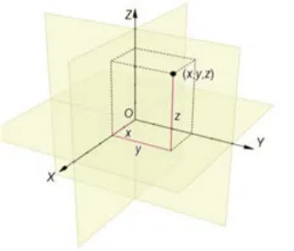
1.54.2 サバイバルセルについて基準は以下の原則に従って、ケースバイケースで定義される。 Ｘｒｅｆ：後部ロールオーバー構造体の前方面、Ｘ０と平行。 Ｙｒｅｆ：車両の中心線、Ｙ０と同じ。 Ｚｒｅｆ：サバイバルセル基準面、サバイバルセルの最下点でＺ０に平行。1.55 ストール防止システム（Stall prevention system）内燃機関のストールを防ぐために、パワーユニットおよび／あるいはギアボックスおよび／あるいはクラッチの制御に自動的に作用するシステム。1.56 競技参加者のカメラ（Competitor’s camera）競技参加者が撮影に使用するためにコックピットに設置する、取り外し可能なカメラ。第２条 一般原則2.1 ＦＩＡ／ＡＣＯの任務および基本原則後述の技術規則はＦＩＡ／ＡＣＯよって発行される。本規則が明確に認めていないことは禁止される。車両はいかなる状況であっても、ドライバーのコントロール下になければならない。2.2 規則の改定本技術規則は、タイトルに定められ実施される選手権（「選手権」）に適用され、その年の１月１日以降に全競技参加者の合意を得てのみ変更することができる。ただし、ＦＩＡ／ＡＣＯが安全を理由にして実施する改定は事前通告または遅延なく施行される。
P.112.3 危険な構造競技審査委員会は、危険とみなされる構造の車両を除外することができる。安全な車両を製造することは、製造者の責任である。ＦＩＡ／ＡＣＯは、車両の安全な構造を確保するために、あらゆる試験実施や情報を要求することができる。2.4 規則の遵守車両は競技期間中、いかなる時でも以下に全体的に合致していなければならない：
1. 本規則およびその付則2. 公認書式およびその他公式に提供される図面、仕様書などの関連情報3. 性能均衡化（BoP）調整4. 耐久コミッティの決定新たな設計あるいはシステムを導入する、または本規定のいかなる解釈においても不明瞭であると感じた競技参加者は、ＦＩＡ／ＡＣＯ技術部に解釈を問い合わせ、耐久コミッティで検証することができる。規定解釈が新しい設計やシステムに関連する場合の連絡文書は以下を含んでいなければならない： ａ） 設計やシステムについての完全な記述ｂ） 該当する場合は図面や概略図ｃ） 提案される新しい設計がその他の車両部品に対して及ぼす直接的影響に関する当該競技参加者の意見ｄ） そのような新しい設計やシステムを使用することに起因する考え得る長期的因果関係や新たな進展に関する当該競技参加者の意見ｅ） 当該競技参加者が、その新しい設計やシステムが車両の性能を向上させると感
じる使用方法や特性の詳細2.5 車両寸法の計測
その他の定めがない限り、すべての計測は、レース用のセットアップ状態の車両が平坦な水平面に静止した状態で行われなければならない。関与する規定の意図するところを巧みに回避し無効にするためになされないことを条件に、特定の寸法について無制限の精度を想定することができる。2.6 競技参加者の義務競技参加者は、競技会期間中いかなる時でも自己の参加車両が本規則に完全に合致していることをＦＩＡ／ＡＣＯテクニカルデリゲートおよび競技審査委員会に立証する義務がある。安全に関わる特性を除き、ハードウェアあるいは素材の物理的査察により、車両の設
P.12計、構成要素および機構は、本規則に合致していることが証明される。規則への合致を保証する手段として、ソフトウェアの査察の結果を機械的設計の根拠とすることはできない。第３条 ボディワークおよび寸法3.1 全体寸法3.1.1高さ本規則の付則に記載されているＦＩＡ／ＡＣＯのアンテナ装置を除き、ボディワークのいかなる部分も、以下を超えてはならない：
| プロトタイプ | ハイパーカー |
|---|---|
| 基準面上方１１５０ｍｍ。 | 以下のいずれか高い方： 基準面上方１１５０ｍｍ、 オリジナル車両（絶対最大値 １２００ｍｍ）。 |
基準面上方１１５０ｍｍ、オリジナル車両（絶対最大値１２００ｍｍ）。3.1.2ボディワークの幅
ボディワークの全幅は以下を超えてはならない： ２０００ｍｍ 3.1.3オーバーハング
車両のいかなる部分も、以下を超えることはできない： フロントホイール中心線の前方１,０００ｍｍ リアホイール中心線の後方１,０００ｍｍ 3.1.4全長
ボディワークの全長は以下を超えてはならない： ５,０００ｍｍ 3.1.5ホイールベース最大３,１５０ｍｍ 3.1.6ボディワークのフロント部分ボディワークのフロント部分の面積は１.６ｍ²以上でなければならない。3.1.7前照灯の高さ前照灯のメインビームの中心は、基準面から（Ｚ方向に）４００ｍｍ以上離れていること。3.2 ドアドアは、第１３条１０.２項に詳記される開口部を通じて、コクピットの通常の出入りを提供しなければならない。開口（ヒンジ）あるいは施錠（ロック）装置は、緊急の場合に、コクピットの外部
P.13からと同様に内部からも、グローブを使用し、ドア全体が直ちに解放されるように機構設計されていなければならない。開口（ヒンジ）あるいは施錠（ロック）装置は、シグナルカラーでマーキングされていなければならない。3.3ウインドスクリーン＆ガラス部分
3.3.1ウインドスクリーンポリカーボネート製（厚さ：最低６ｍｍ）あるいは同等の素材製の、一体構造のウインドスクリーンが義務付けられる。ウインドスクリーンは、マーシャルがＮｏ.４アレンキー（六角レンチ）とTridair ボルトを使用して取り除くことができなければならない。電気的な霜取り装置が認められる。
3.3.2ガラス部分ポリカーボネート製のサイドウインドウ（最低肉厚２.０ｍｍ）が義務付けられる。追加のフレームおよびドライバーの冷房用吸気口／スクープを取り付けることができるが、しっかりと取り付けられなければならず、第１３条１２項に規定されるドライバーの視界を妨げてはならない。コクピットから空気を引き出すための最小４０ｃｍ２の開口部を、各サイドウインドウの後部に、あるいは各コクピット出入り口部に作らなければならない。3.4 ボディワーク
3.4.1一般ボディワークは１つのみが公認できる。ボディワークの調整可能な空力装置（ウイング、フラップなど）は1つだけ使用できる。この装置は車両中心線に対して左右対称でなければならない。この装置の位置がどのようなものであっても、車両は常に本規則の付則に定められた空力基準を満たさなければならない。調整可能な空力装置として複合ウイングが提案されている場合、ウイングの要素間の相対的な調整は認められない。車両走行中の可動および／あるいは変形可能なボディワーク部品／要素は、禁止される。ボディワークのスプリットライン上にフォイル／フィルム／テープを追加する場合は、公認書式に記載されている通りでなければならない。車両走行中に、自動的に、および／あるいはドライバーが制御し、空気流を変更する一切の装置は、本規定で明らかに許可されていない限り禁止される。冷却ファンは以下の条件で許可される： － コックピットの温度調整のみが唯一の機能である。－ 電力量が１５０Ｗ未満である。－ ファンの出口がコックピット内にあること。
P.14すべての車両には、フロントおよびリアのボディワークアッセンブリーの取り付け状態を確認するための、単純な機械的システムが備わっていなければならない。当該システムは、ロック機構がロック解除位置にある場合に、取り付け用ツールを取り外すことができない構造でなければならない。製造者／コンストラクターは、当該システムの堅牢性を、FIA／ACOが納得し得る形で実証しなければならない。3.4.2上部ボディワークこの技術規則で定められているすべての制約を満たすだけでなく、上部ボディワークは：
| ＦＩＡ／ＡＣＯの技術部門の承認を 得ることを条件に自由。 | ＦＩＡ／ＡＣＯの技術部門の承認を 得ることを条件とした、レース走行 または現行の規定に合致するために 必要な局所的な改造を除き、オリジ ナル車両の形状を維持しなければな らない。 |
ＦＩＡ／ＡＣＯの技術部門の承認を得ることを条件とした、レース走行または現行の規定に合致するために必要な局所的な改造を除き、オリジナル車両の形状を維持しなければならない。クイックリリースの固定具は、外側から見えるようにし、明確に表示しなければならない（シグナルカラーの矢印）。
3.4.3ボディワークの見え方に関する基準ボディワークを上から見て、横から見て、また前から見て、ＦＩＡ／ＡＣＯの承認を得ることを条件にボディワークは、機械構成部品が見えてよい。ボディワークを上から見て、両方の前部角度は最低５０ｍｍの半径を有していなければならない。側方から見て、ボディワークは車軸中心線の高さより上で、コンプリートホイールを覆っていなければならず、コンプリートホイールの周囲が見えることができなければならない。ホイールアーチは、第３条１０で定義された空力安全安定性基準を達成するために必要であれば、上記の視認性要件を尊重することを条件に、非連続面（穴、溝、ルーバー、開口部、切り抜き）であってもよい。前から見て、ボディワークは車軸中心線の高さより上で、コンプリートホイールを覆っていなければならない。3.5 車両底面
3.5.1一般前部車軸中心線の後方でスキッドブロックを除き（第３.５.６項参照）、完全に懸架された部品は、基準面を超えて突出してはならない。
| この技術規則で定められているすべ ての制約を満たすだけでなく、車両 底面は、レース走行または現行の規 定に合致するために必要な局所的な 改造を除き、オリジナル車両の形状 を維持しなければならない。 |
P.15許される開口部は唯一、車両吊り上げジャッキのための穴、地上高を計測するセンサー、閉鎖ハッチ（メンテナンス作業用）およびオーバーフロー燃料パイプに必要な開口部である。
3.5.2基準面基準面とは、ボディワークの最下点とスキッドブロックの上面で定義される水平面と定義される。
3.5.3リアディフューザー自由設計
3.5.4前部部品以下に位置するエリアで： 車両の前部外周よりも後方； フロント車軸中心線よりも前方； 車両の全幅までで、下面から見えるボディワークのすべての部分は、基準面より上に位置していなければならない。以下に位置するエリアで： 車両の前部外周より後方； フロント車軸中心線から５０ｍｍ前方； 最小１０００ｍｍの幅に渡り、ボディワークの一切の懸架部分は、基準面から上へ５０ｍｍを越えて離れていなければならない。3.5.5地上高
サスペンションを除き、地上高を変更するように設計された一切のシステムは認められない（第１０条２.２項参照）。車両の懸架部分は基準面より下には認められない。ただし下記の義務付けられるスキッドブロックは除く：車両の非懸架部分は、コンプリートホイールとブレーキ冷却ダクトを除き、基準面より下に許される（第１１条４参照）。フリクションブロックは、それらの表面が、取り付けられている主要部分と連続的である場合に許可される。最大密度が２ｋｇ／ｄｍ３の均質な材質で製作されていなければならない。
3.5.6スキッドブロック
基準面の下に、１つのスキッドブロックを取り付けなければならない。それは： 最大４つの部分で構成できていなければならない； 第３Ｃ図に合致していなければならない； 摩擦領域上の任意の点の最小厚さは２０ｍｍでなければならない；
（第３Ｃ図参照）。 以下を除き、外側の表面には、一切の穴、切り抜き、あるいはポケット（くぼみ）があってはならない：
P.16－ スキッドブロックの留め具を取り付けるのに必要なもの； － 車両吊り上げジャッキに必要となるもの； フロントとリアの摩擦部分の垂直投影面で、上面には、一切の穴、切り抜き、あるいはポケット（くぼみ）があってはならない； 一体鋳造のフロントとリアの部品（第３図に示される）は密度が１.３～１. ４５の均一な素材でできていなければならない； 湾曲部（第３図に示される）は密度が２未満の素材でできていなければならない； ブロックと基準面との間に空気が一切通過することのないような方法で、車両中心線の左右対称に取り付けられなければならない； スキッドブロックの前後端部は前後方向に２００ｍｍの長さに渡り、２１ ｍｍの深さに面取りをすることができる； スキッドブロックが装着されている時にシールの厚さが存在しない場合、最大直径３ｍｍのシールが許される； 下から見て、スキッドブロックを基準面に固定する留め具は：
－ ブロックの全体の低部表面が車両の下側から見え、基準面から１９ｍ ｍ以下となるように、取り付けられていなければならない。－ スキッドブロックの取り付けには、チタニウム製の２つの追加の留め
具（フロント用とリア用）を使用しなければならない。留め具は車両の中心線に沿って対称であり、摩擦部分になければならない。寸法は４ ０ｍｍ（前後方向）×４０ｍｍ（横方向）で、±１ｍｍの公差でなければならない。下面は車両の下から見える位置にあり、新品時には基準面から２５ｍｍの位置になければならない。3.6 排気パイプ出口3.6.1一般原則原則として、排気ガス流を利用して車両の空力特性に影響を与えるような装置は禁止される。さらに、エンジンマッピングは、エンジントルクを生成するという第１の目的を超えて、車両の空力特性を人工的に変更するために使用することはできない。3.6.2排気構成排気構成の目的は、ボディワークと排気出口の流れの間の幾何学的制約を定義することにある。排気出口ボックスは、第１条５４項１で定義された座標系に従って、頂点が次の座標に位置する直方体として定義される。 Ｘ＝２６３０ｍｍ、ボディワーク最後端から前方２００ｍｍのＹＺ平面 Ｙ＝±５４０ｍｍ Ｚ＝４２０ｍｍおよび６６０ｍｍ 有効な排気テールパイプ出口は、各パイプの最も内側の表面を通る、出口での主軸に垂直な単一の平面断面として定義される。排気流がこの軸と一致していない場合は、ＣＦＤ評価を使用してこの軸を定義する。各有効な排気テールパイプ出口は、排気出口ボックス内に完全に配置しなければならない。排気出口ボックスには、すべての有効な排気テールパイプ出口と最大２つの
P.17有効な排気テールパイプ出口を含めなければならない。ただし、第３.６.２ ａ項で記述されている場合、最大１つの有効な排気テールパイプ出口を含めなければならない。ａ. 有効な排気テールパイプ出口が、ボディワーク最後端から前方２００ ｍｍと３５０ｍｍのＹＺ平面の間に完全に配置されている場合は、１つの有効な排気テールパイプ出口が許可され、その面積は８０００ｍｍ２より大きくなければならない。ｂ. 有効な排気テールパイプ出口が、ボディワーク最後端の前方３５０ｍｍ
のＹＺ平面より前方にある場合、各有効な排気テールパイプ出口の面積は５０００ｍｍ２以上で、すべての有効な排気テールパイプ出口面積の合計は１００００ｍｍ２以上でなければならない。各有効な排気テールパイプ出口の幅／高さの比は３.５未満でなければならない。排気テールパイプの最後の１５０ｍｍにわたって、各排気テールパイプの最も内側の表面の断面積は、一定の形状と面積を維持しなければならない（Ｃ ＦＤ分析による）。排気テールパイプ（含複数）の最後の１５０ｍｍにわたって、排気テールパイプの形状はＸＺ平面に対して対称でなければならない。分割排気テールパイプは、排気テールパイプの最後の１５０ｍｍを超えることはできない（個別のウェストゲートは、一定の断面積の前にメイン排気パイプに入らなければならない）。排気テールパイプに沿ってシステムへの漏れやシステムからの漏れ（絶対的最小限で避けられない場合を除く）は許可されない。排気テールパイプ出口の後、排気流はエンジンカバーの上面（穴、開口部など）より下には流れてはならない。有効な排気テールパイプ出口の法線は、次の角度範囲に従って方向付けられなければならない： ＸＹ平面に対して、±１０度 ＸＺ平面に対して、±１０度3.6.3ボディワーク除外ゾーン一般ボディーワーク除外ゾーン: 次の方法で形成される表面： 各有効な排気テールパイプ出口表面をその法線に沿って (つまり、有効な排気流の方向に沿って) 後方に伸ばす 結果として得られる伸ばされた表面をこの表面の法線に沿って２５ｍ ｍ外側にオフセットする排気テールパイプ外面に隣接する局所的ボディワークを除き、これらの一般ボディワーク除外ゾーン内にボディワーク表面があってはならない。
P.18エンジンカバーテール除外ゾーン： 次の要素で形成される表面：
有効排気テールパイプ出口をベースとする円錐体 有効排気テールパイプ出口の法線に沿って、法線に対して後方±５度に広がる エンジンカバーテールガーニーの表面は、これらの一般ボディーワー
ク除外ゾーン内では許可されない。エンジンカバーテール自体の半径が２００ｍｍ未満の場合、ガーニーと見なされる。

排気テールパイプ出口とその法線テールガーニー除外ゾーンボディワーク除外ゾーンテールガーニーこれらの規制と一般原則に加えて、ＡＣＯ／ＦＩＡは、排気流の相互作用の可能性に関する形状をいつでも受け入れるかどうかを決定する絶対的な権利を留保する。3.6.4 ＣＦＤシミュレーションＡＣＯ／ＦＩＡは、シミュレーションされた排気流が様々な条件で車両の空力性能に与える影響を評価できるように、必須のＣＦＤ評価プロセスを実行するため、必要に応じて形状とデータが提出されることを要求する。これらの提出のタイミングについては、公認スケジュールを参照。必須のＣＦＤ評価プロセス用のジオメトリーが提出されると、排気ジオメトリーと一般周囲ボディワークは、ＡＣＯ／ＦＩＡとの事前の合意なしに変更してはならない。3.7 空力基準
3.7.1公認過程公認を取得するためには、車両の空力構成が空力基準を満たさなければならない。これらの基準は、ＦＩＡ／ＡＣＯの公式風洞で管理される。空力構成は、地上高のフルスキャンの提示を受け、空力特性（例：異なる車両の姿勢に対するドラッグ、ダウンフォース）を抽出する。公認の手順は、技術規則の付則に記載されている。3.7.2「空力構成」の定義空力構成は、以下の組み合わせによって定義される： 完全なボディワーク 調整可能な空力装置（ＡＡＤ）（例：フロントウイング、リアウイング）とそのセットアップの範囲
P.19 ブレーキブランキング その他、ＦＩＡ／ＡＣＯが適切と判断した要素（例：ガーニー、フィラー、
ダイブプレーン、ルーバーなど）。ブレーキブランキングは、公認されたものでなければならない。また： ダクト吸気口の単純な閉鎖プレートでなければならない。 風洞実験に出されなければならない。 必要な空力基準を満たしていなければならない。パワーユニットの冷却オプションを含むその他のタイプのブランキングは禁止される。3.7.3基準空力係数は、本技術規則の付則に定められた基準を満たしていなければならない。3.8 たわみ試験
3.8.1全体的偏向ＦＩＡ／ＡＣＯは、車両の走行中に動いていると思われる（またはその疑いがある）ボディワークのいかなる部分に対しても、荷重／たわみ試験を導入する権利を有する。競技参加者は、ＦＩＡ／ＡＣＯの指示に従ってパッドとアダプターを用意しなければならない。ＦＩＡ／ＡＣＯは、他の基準の中でも、弾性変形領域における荷重／たわみ曲線の直線性を考慮する。非線形性がある場合は、塑性変形領域のみでなければならない。原則として、Ｘ／Ｙ／Ｚいずれの方向においても、１００Ｎの（押す／引く）負荷がかけられた時に、ボディワークのいかなる部分も５ｍｍを超えて動かないこと。負荷をかける方法は、試験される部分の特有な形状によって決まり、保持方法はその部分に特有の圧力をかけない（その挙動に直接影響を与えることができる）。負荷をかけている時に、その部分はそれでも技術規定を遵守していなければならない。ブラシがけ、ゴム製ブーツ、ゴム製封印は、ゴムを拾い上げるのを防ぐためにのみ受け入れられる（そのような装置は公認過程の間に提示されること）。3.8.2前部ボディワーク部品第３条５項４（フロントスプリッター）に示されるボディワーク要素のどの点も、次に示される垂直負荷の組み合わせがかけられた時に、垂直方向に１ ５ｍｍを超えて偏向することはできない： 主要負荷が垂直下方向に、当該部品の底部表面に構造的に組み込まれた到達可能なＭ５インサートによってかけられる。これらのインサートの基本的要件は： 車両の前後方向の垂直面に対して左右対称に配置されなければならない。
P.20 前部車軸から５００ｍｍの位置に、前部車軸平行に４つの１列とし、２つの側部のインサートは車両最大幅（または、負荷をかける点が物理的に不可能な場合はそのセクションの幅）から１００ｍｍに位置し、残りの２つは４つすべてが等距離になるよう配置される。 前端部から１００ｍｍのところに位置し、前部車軸平行に４つの１列とし、
２つの側部のインサートは車両最大幅（または、負荷をかける点が物理的に不可能な場合はそのセクションの幅）から１００ｍｍに位置し、残りの２つは４つすべてが等距離になるよう配置される。Ｍ５インサートが、下側フロント部分の構造上、上記の位置に配置できない場合は、ＦＩＡ／ＡＣＯとの間で代替の位置を合意することができる。荷重は各インサートに均等にかけられ、合計で８０００Ｎに制限される3.8.3エンジンカバー１００Ｎの荷重をかけたときに、エンジンカバーの最後部が垂直方向に５ｍ ｍ以上たわんではならない。荷重は、後縁またはガーニーに沿ったどの位置にかけてもよい。これらの荷重は、競技参加者が提供しなければならない適切な１５ｍｍ幅のアダプターを用いてかけられる。荷重／たわみの比率は、最大荷重２００Ｎ、最大たわみ１０ｍｍに対して一定でなければならない。3.8.4リアウイングリアウイングの最後部（ある場合）は、１００Ｎの荷重をかけたときに垂直方向のたわみが２.５ｍｍ以下でなければならない。後端部に沿って、いかなる点にも負荷をかけることができる。これらの負荷は１５ｍｍ幅の適切なアダプターを使用してかけられ、そのアダプターは当該競技参加者が供給しなければならない。負荷／偏向比は、ウイングの操作範囲全体に一定したものでなければならず、最大２００Ｎまでの負荷、最大５ｍｍまでの偏向に適用される。リアウィングおよび垂直支持体の取り付けボディワークへのエンドプレートの取り付けを外した状態で、ウィング支持体は、リアウィングの表面に均等に作用する10 kNの垂直荷重に耐え得るものでなければならない。3.8.5スキッドブロックの前部スキッドブロックの前部は、２５００Ｎの負荷がフリクション表面のどの点にも垂直にかけられた場合に、５ｍｍを超えて歪んではならない（第３Ｃ図参照）。負荷は直径５０ｍｍのラムを使用して、上方向へかけられる。 スキッドブロックの前部は、フロントホイールを地面から吊り上げることのできる力が加わった時に、１５ｍｍ以上歪んではならない。基準面上のボディワーク前部とサバイバルセルとの間にある支柱あるいは構造物を、負荷がはずされた時を含めた試験のいかなる部分の最中であっても、それらに非線形の歪みを認めないこと、あるいは速度依存性のたわみを許容しないことを条件に、この試験に提示できる。
P.213.8.6スキッドブロックの後部スキッドブロックの後部は、５０００Ｎの負荷がフリクション表面のいずれかの点に垂直にかけられた場合に、５ｍｍを超えて歪んではならない（第３C図参照）。負荷は直径５０ｍｍのラムを使用して、上方向へかけられる。スキッドブロックと車両の構造体部分との間にある支柱あるいは構造物を、負荷がはずされた時を含めた試験のいかなる部分の最中であっても、それらに非線形の歪みを認めないこと、あるいは速度依存性のたわみを許容しないことを条件に、この試験に提示できる。3.8.7リアウイング支持体エンドプレートと後部フラップが接続された状態（トラック状態）で、以下の複合垂直荷重が作用した場合、主翼および垂直支持部のいずれの点も垂直方向に15mmを超えてたわんではならない。－ 主翼表面に2400Nの荷重を作用させる。この荷重は、翼の前縁から後縁ま
で、またはフラップがある場合はそのオーバーレイ点まで伸びる幅200mmの6つの異なるパッドを介して、主翼の翼弦長の25～75%に相当するX軸方向の点で、均一かつ同時に下向きに作用する。パッドの最上面は、400Nの荷重が作用する前は水平であり、フラップの上端よりも上となる。－ 各エンドプレートに1000Nの下向きの引張荷重を作用させる。3.9 ボディワークの構造3.9.1一般事故の後、破片が本コース面に散らばり広がるのを防ぐため、フロントホイールの付近にあるボディワーク外皮は、破損片を抑える特定の目的を持つ素材で主に作られていなければならない。ＦＩＡ／ＡＣＯは、このようなすべての部品が規定された目的を達成するよう構成されていることを納得しなければならない。3.9.2公差製造上の問題を解決する一助とし、また本規定のいかなる部分にも抵触する可能性のある設計を認めることのないよう、ボディワークに次の寸法公差が認められる：基準面の表面のどの部分においても±３ｍｍの誤差許容範囲が認められ、ボディワーク下方より表面が視認できるか否かを調査する際には３ｍｍの水平公差が認められる。3.10 空力的安定性空力構成にかかわらず、車両は最低限の空力的安定性を確保するために、いくつかの安全基準を満たさなければならない。第２条３への準拠は、これらの安全基準に基づいて、常に空気力学的に安定していることと理解される。基準への受け入れは、風洞実験および／またはＣＦＤ計算によって検証される。これらの基準に対する完全な手順と承認要件は、本規則の付則にある空力公認過程に記載されている。
P.22第４条 重量4.1 最低重量
車両は最低重量が１０３０ｋｇ以上になるように設計されていなければならない。競技期間中、車両の重量は燃料とドライバーの除いた状態で常にＢｏＰで定義された最低重量を下回ってはならない。イベント中に交換された場合のあるいかなる部品の重量の検査も車検員の裁量にて実施される。4.2 重量配分重量配分（コンプリート車両に対して前輪にかかる重量）は、±０.５％の公差で公認されなければならない。このチェックのためには、燃料もドライバーも除いたコンプリート車両でなければならない。競技中にチェックされる場合、測定された重量配分は、指定された許容範囲内で公認された値に適合していなければならない（ＢｏＰバラストを含む）。4.3 バラストバラストは、その取り外しに工具を必要とするような方法で固定されており、すべての取付部が、あらゆる方向へ最低２５Ｇの減速度に耐えることができるならば、使用することができる。許可されたバラストを車両に取り付ける方法は、ＦＩＡ／ＡＣＯテクニカルデリゲートの評価の対象となり、ＦＩＡ／ＡＣＯテクニカルデリゲートによって必要とみなされた場合には、封印を施すことができるようなものでなければならない。最低重量１０３０ｋｇを達成するためにバラストが必要な場合、その位置と値を公認文書に申告しなければならない。可動式のバラストシステムは一切禁止される。車両は、＋７０ｋｇのＢｏＰバラスト（車両の最低重量を上回る）を受け入れることができるよう、設計されなければならない。衝突試験部品の周辺範囲内に配置されたバラストは、すべて衝突試験中に提出しなければならない。フロントとリアの衝撃吸収構造体の垂直投影面には、いかなるバラストもあってはならない。すべてのＢｏＰバラスト位置は、フロントとリアのホイール軸の間に取り付けなければならず、公認書類に申告されなければならない。4.4 液体類重量は、競技中いつでもタンク内の液体を残したままで検査することができるが、プラクティス走行やレースの終了時には、すべての燃料を抜いてから計量する。4.5 競技参加者のカメラ「競技参加者」のカメラを使用するには、そのカメラが当該車両の公認に含まれていることが義務付けられる。
P.23第５条 パワーユニット5.1 一般
5.1.1定義特定の用途に対して明確に許可されている場合を除き、後部動力伝達経路に接続された第５条２に記載されたエンジン、および第５条３に記載された２ ０２６年以降に新たに公認される車両において義務付けられるオプションのＥＲＳ以外、車両を推進するいかなる装置の使用も禁止される。エネルギーの流れ、パワーおよび充電限度のＥＳ（エネルギー貯蔵）状態は、本規則付則４のエネルギーフロー図解に定義されている。車両が本コース上にある時は、周回計測は、フィニッシュライン計時ループを連続して通過するごとに実施されるが、ピットに入る時はピット入口計時ループで周回は終了し、次の周回はピット出口計時ループで開始される車両が本コース上にある時は、周回計測は、計時ラインを連続して通過するごとに実施されるが、ピットに入る時に周回は終了し、次の周回はピットレーンのスタート時より開始される。エネルギーおよびパワーの要件が遵守されていることを検証するために、電気ＤＣ測定が利用される。部品の名称は、レシプロピストンのエンジンに基づいている。他のエンジンとの等価化については、本規定の付則に記載されている。5.1.2パワートレイン性能パワートレイン性能は、本規則の第１９条に詳述された手順に従って宣言され、公認されなければならない。パワートレインの性能は、常に付則４ｂに記載されている電力曲線を超えてはならない（ＢｏＰ調整の対象となる）。リア・パワートレインの性能は、常に以下のいずれか低い方の値を超えてはならない： 付則４ｂに記載されている電力曲線（ＢｏＰ対象）に３％を加えたもの。パワートレイン性能の管理についての詳細は、本規則の付則に記載されている。5.2 エンジンエンジンは本規則第１９条に詳細が記される手順に従って公認されなければならない。
5.2.1エンジンの起源エンジンは以下の通りでなければならない：
| 特注のエンジンであるか、 または銘柄のエンジンに基づく もの | オリジナルのエンジンに基づく ものであるか、 または年間３００台以上生産さ |
| れる同一グループの車両モデル に搭載されている量産エンジン をベースにしたもの |
れる同一グループの車両モデルに搭載されている量産エンジンをベースにしたもの5.2.2エンジンの仕様エンジンの設計は、以下の制約を除き自由である： ガソリン４ストロークエンジンのみ認められる。 接合部からの偶発的な漏れ（システム内へか、あるいはその外でのどちらか）を除き、エンジン吸気口に入るすべての空気、およびその空気のみが、燃焼室に入らなければならない。5.2.2.1 特注エンジン ロータリーエンジンを除き、可変
| ロータリーエンジンを除き、可変 ジオメトリー装置（ノズルタービ ンを含め）は認められない。 エンジンは各シリンダーにつき ２つを超える吸気口と２つを超 える排気バルブを有していては ならない。 － 軸方向に変位するレシプロ・ ポペットバルブのみが許され る。 － 可動バルブ構成部品と不動の エンジン構成部品との間の接 触シール面は真円でなければ ならない。 － 電磁および油圧バルブ作動シ ステムは禁止される。 |
5.2.2.2 銘柄のエンジン銘柄のエンジンは、以下の条件を満たす量産エンジンである： このエンジンを搭載した公道走
| 銘柄のエンジンは、以下の条件を満 たす量産エンジンである： このエンジンを搭載した公道走 行用の公認を受けた量産車に搭 載されるものと同一のエンジン が、少なくとも２５台生産されて いること。 このエンジンを搭載した公道走 行用の公認取得済みの同一の量 産車が、このエンジンが参戦する 最初のシーズンの年末までに少 なくとも２５台生産されている こと。 このエンジンを搭載した公道走 行用の公認取得済みの同一の量 産車が、このエンジンが参戦する |
| 第２シーズン目の年末までに少 なくとも１００台以上生産され ていること。 量産エンジンは、ＦＩＡ／ＡＣＯ 公認を取得している。 １台のコンプリートエンジンが ＦＩＡ／ＡＣＯに預けられてい る。 |
ＦＩＡ／ＡＣＯに預けられている。5.2.2.3 オリジナルエンジンおよび量産エンジン 可変ジオメトリー装置は、そのシ
| 可変ジオメトリー装置は、そのシ ステムがオリジナルのエンジン に公認されように保たれている ことを条件に認められる。 |
ステムがオリジナルのエンジンに公認されように保たれていることを条件に認められる。5.2.3ベースとなるオリジナルのエンジン、銘柄のエンジン、量産のエンジンに許されるエンジンの改造以下の例外を除き、ＦＩＡ／ＡＣＯの承認を受けることを条件に、改造は自由である。5.2.3.1 エンジンブロックシリンダーブロック鋳造品は、ベース・エンジンからのものでなければならない。シリンダーブロックは次の改造ができる： 機械加工によって：
－ ボアの修正、またはオリジナル・ブロックにスリーブが付いていない場合はスリーブを付けるため。－ ドライサンプを取り付けるために、クランクシャフト・ベアリングの中心線を通る水平面の下。－ シリンダーヘッドガスケット面。ただし、デッキハイト（シリンダーヘッド面からクランクシャフト中心線までの距離）がオリジナルエンジンの寸法から１ｍｍ以内であることが条件となる。－ 補強と信頼性のみを目的として、当初の部品を識別できることを条件
に、断面積を増やしたり、特定の部分に材料を多く残したりするために、未加工の鋳物を異なる方法で機械加工することができる。 材料の追加によって：
－ 局所的または構造的な補強のための材料の追加は，溶接または接着パ
ッチによって行うことができる。オリジナルエンジン部品から１ｍｍを超える厚さの層で材料が取り除かれた部分には、補強を行うことはできない。－ 潤滑穴、潤滑インジェクターの穴は修正または閉鎖できる。5.2.3.2 クランクシャフト変更できる。デザインは自由。重量はオリジナルと比べて１０％以上低くなってはならない。
P.26点火順序は自由。5.2.3.3 シリンダーヘッドシリンダーヘッド鋳造品はオリジナルエンジンからのものでなければならない。バルブの角度、カムシャフトの数と位置は、オリジナルエンジンに装着されている通りに、当初のままでなければならない。シリンダーヘッドは次の改造ができる： 機械加工によって：
－ ただし、オリジナルの部品を識別できることを条件とする。 材料の追加によって：
－ 局所的な補強のための材料の追加は，溶接または接着パッチによって行うことができる。－ オリジナルエンジン部品から１ｍｍを超える厚さの層で材料が取り除かれた部分には、補強を行うことはできない。－ 吸気ポートにインサートを追加することができる。－ バルブのタペットガイドには、当初ない場合にはスリーブを付けるこ
とができる。－ 潤滑穴、潤滑インジェクターの穴は修正または閉鎖できる。－ ヘリコイルの使用は許可される。5.3 ＥＲＳ
ＥＲＳの装着は任意。ただし、２０２６年以降に新たに公認されるすべての車両に義務付けられること。装着する場合は、本規則の付則２のＥＲＳ表の該当欄に定義されているＥＲＳが以下の規定に適合していなければならない。ＥＲＳは本規則第１９条に記載されている手順に従って公認されなければならない。
5.3.1 ＥＲＳの起源ＥＲＳは以下でなければならない：
| 特注のフロントＭＧＵ－Ｋを使 用するか、 銘柄のフロントＭＧＵ－Ｋを使 用する。 | 特注のフロントＭＧＵ－Ｋを使 用するか、 または、オリジナル車両と同じ構 造を有する。および： － 特注のＭＧＵ－Ｋを使用する か、 － またはオリジナルのＭＧＵ－ Ｋを使用する。 |
Ｋを使用する。
5.3.2 ＥＲＳの仕様ＭＧＵ－Ｋの電気的ＤＣパワーは２００ｋＷを超えてはならない。ピットレーンおよびチェッカーフラッグの後を除き、以下の場合にＭＧＵ－ Ｋは前輪にのみ正のトルクをかけることができる： － ＢｏＰに定められる車速にて－ 車速が１２０ｋｍ／ｈ未満で、ピットインするまで時速１２０ｋｍ未満のままである場合
P.27－ グリッドまでのラップ、フォーメーションラップ、セーフティカー（ＳＣ）、
バーチャルセーフティカー（ＶＳＣ）およびフルコースイエロー（ＦＣＹ）ラップ（最大ＤＣ電力２ｋＷ）にて速度は、ＦＩＡ／ＡＣＯ義務付けセンサー（第８条４）から得られた２つの前輪速度の最大値を用いて計測される。ウェット天候用タイヤの装着は、第８条６に記載されている義務付けられるテレメトリーシステムを通じて申告しなければならない。
5.3.2.1 特注のＭＧＵ－Ｋ以下の例外を除き、ＦＩＡ／ＡＣＯの承認を得ることを条件に、自由：
単一のＭＧＵ－Ｋを使用したシステムでなければならない。 ＭＧＵ－Ｋの回転速度は２５,０００ｒｐｍ以下でなければならない。 ＭＧＵ－Ｋの積層板の厚さは０.１ｍｍ以上なければならない。5.3.2.2 単一のＭＧＵ－Ｋ ＥＲＳの各起源に課せられた制限に加えて、以下の制限が適用される：
ＭＧＵ－Ｋは、車両の前輪に連結された機械式ディファレンシャルに単独でかつ恒久的に機械的に連結されていなければならない。フロントでは、この機械的なリンクは、前輪に対して一定の速度比でなければならない。フロントの機械式ディファレンシャルには、公認された固有のランプが付いていなければならない。
5.3.2.3 銘柄のＭＧＵ－Ｋ銘柄のＥＲＳは、以下の条件を満たす量産のＭＧＵ－Ｋである：
このＭＧＵ－Ｋを搭載した公道走行用の公認を取得した量産車に搭載されるものと同一のＭＧＵ－Ｋが少なくとも２５台生産されていること。この全く同一のＭＧＵ－Ｋを搭載した公道走行用の公認を取得した量産車が、このエンジンが参戦する最初のシーズンの年度末までに少なくとも２５台生産されていること。この全く同一のＭＧＵ－Ｋを搭載した公道走行用の公認を取得した量産車が、この全く同一ＭＧＵ－Ｋが参戦する第２シーズン目の年末までに少なくとも１００台が生産されている。銘柄のＭＧＵ－ＫがＦＩＡ／ＡＣＯ公認を取得していること。 １台の完成したＭＧＵ－ＫがＦＩＡ／ＡＣＯに預けられている。銘柄のＭＧＵ－Ｋの回転速度は自由である。銘柄のＭＧＵ－Ｋの積層板の厚さは自由。銘柄のＭＧＵ－Ｋは、第５条１４の対象とはならない。
5.3.2.4 オリジナルのＭＧＵ－ＫとツインＭＧＵ－Ｋを持つ銘柄のＭＧＵ－Ｋ：銘柄のＭＧＵ－Ｋに関する第５条３.２.３の要件に加えて、以下の制限が適用される： トルク制御は、自動車の前輪（後輪）に連結された機械式ディファレンシャルに単独かつ恒久的に機械的に連結された単一のＭＧＵ－Ｋで総合的な持分を確保しなければならず、この機械的連結は前輪（後輪）に対して一定の速度比でなければならない。
P.28トルクは、一定の特性を持つ機械的（ビスカス）差動をシミュレートするような方法で適用されなければならない。また、モーターが停止した場合を除き、回転の速い車輪に回転の遅い車輪よりも大きなトルクを与えてはならない（停止した場合は、車両が停止するまでラッチしなければならない）。インホイールＭＧＵ－Ｋは認められない。
5.3.3オリジナルのＭＧＵ－Ｋまたは銘柄のＭＧＵ－Ｋに許される改造改造は一切認められない。5.4 重量および重心
5.4.1エンジンの重量は１６５ｋｇ以上でなければならない。5.4.2エンジンの重心は，基準面から２２０ｍｍ未満であってはならない。5.4.3第５条４.１～第５条４.２への適合性を証明する際には，本規則の付則２に示された表に従ってペリメーターを定義する。5.5 パワーユニットのトルク要求
5.5.1正のトルクを前後のパワートレインを伝える唯一の方法は、サバイバルセル内に取り付けられた単一フット（アクセル）ペダルによる要求であり、ドライバーのみが始動できる。正のトルクとは、車軸ごとの公認された両方のトルクセンサーの合計が、０． ２秒の平均で正の値を示したときと理解さる。5.5.2アクセルペダルの作動範囲の中で特定の位置を見つけることのできる、あるいはドライバーがある位置にペダルを留めるのを支援する設計は認められない。5.5.3前輪に１つのＭＧＵ－Ｋを搭載したＥＲＳの場合、左右のトルク伝達機能は独自のものでなければならず、ＥＲＳと共に公認されなければならない。5.5.4安全のため、ＩＣＥが作動しておらず、車両にホイールが装着されて停止していて、すぐに動ける状態（ＥＲＳが作動している、またはスターターがギアボックスを介して後輪に接続されている状態を含むが、これに限定されない）の時はいつでも、ドライバーが正のトルクを要求するためには、２つのアクションを同時に行う必要がある（片方は手で操作する）。燃料カップリング、エアジャッキ、および／またはその他のセンサーに関連する発進時の制御戦略を含む（ただしこれらに限定されない）、自動制御戦略は禁止される。5.6 パワーユニット制御
5.6.1各ドライブシャフトに供給されるトルクを測定する公認センサーを取り付けなければならない（テクニカルリストＮｏ．８９）。
P.29これらの信号は、ＦＩＡ／ＡＣＯのデータロガーに供給されなければならない。設置方法の詳細は、本規定の付則に記載されている。これらのセンサーによる測定値あるいはセンサーから送られてくる信号を欺くことを目的としたおよび／あるいはその効果のある、いかなる装置、システム、手順も禁止される。5.6.2シリンダー内蔵圧力センサーは禁止される。5.7 エンジン燃料システム
5.7.1ロータリーエンジンでは、排気バルブあるいは排気ポートの入口の下流に燃料噴射装置を設置することはできない。5.7.2公認の「燃料流量計」（テクニカルリストＮｏ．４５）を、第６条６に従って燃料システムに組み込まなければならない。燃料流量計との通信は、ＣＡＮプロトコルで行わなければならない。燃料流量計の情報は、競技参加者の電子ユニットを経由することなく、直接ＦＩＡ／ＡＣＯデータロガーに送信されなければならない。5.7.3エンジンに供給されるすべての燃料は、この公認メーターを通過し、第５条７.１に記載されている燃料噴射装置によってすべて燃焼室に供給されなければならない。5.7.4燃料噴射装置に供給される燃料の圧力と温度を直接測定する公認のセンサーも取り付けられなければならず、その信号はＦＩＡ／ＡＣＯのデータロガーに送られなければならない。5.7.5測定点の後で流量を増加させる、または燃料を貯蔵して再利用したりすることを目的とした、および／あるいはその効果のある装置、システム、手順は禁止されている。5.8 点火装置5.8.1ロータリーエンジンを除き、点火は、シリンダーごとに１つのイグニッションコイルと１つのスパークプラグによってのみ認められる。エンジン１サイクルにつき、シリンダーあたり５回を超えるスパークは認められない。プラズマ、レーザー、その他の高周波点火技術の使用は禁止されている。5.8.2露出したギャップでの高張力放電によって機能する従来のスパークプラグのみが許可される。スパークプラグは，第５条１２および第５条１３に記載されている材料の制限を受けない。5.9 エンジン付属品5.9.1エンジンの付属品は、機械的または電気的に駆動することができる。電気的に駆動される付属品は、オルタネータとスターターモーターを唯一の例外として、パワーユニットを含むドライブトレインに機械的に連結するこ
P.30とはできない。5.9.2オルタネータは動力伝達経路にトルクを伝えることができない。オルタネータは電源回路に直接接続することができず、ＥＳを充電することはできず、補助バッテリーのみ充電することができる。5.9.3走行中はスターターモーターがドライブシャフトにトルクを伝えることができない。ただし、ＥＲＳを装備していない車両が以下の場合を除く： ピットレーンでのピットストップからの離脱時 第９条７で要求されているリバース機能を確保するため。5.9.4ターボチャージャーは動力伝達経路と機械的に連結することはできない。5.10 エンジン吸気口5.10.1 第５条７.３に記載されている燃料以外の物質を、燃焼用の空気に添加することは禁止される。吸気マニホールドと排気マニホールドの接続は禁止される。5.11 材質および構造 － 定義5.11.1 金属材料とは、純金属、複数の金属の合金、あるいは金属間化合物のいずれであっても、金属元素で構成されている材料と定義される。また、複合材の場合は、マトリックスや強化材がどのような位相比であっても、金属元素で構成されているものを金属材料とする。5.11.2 金属元素とは、周期表で指定されている元素のことで、以下の青色で表示される：
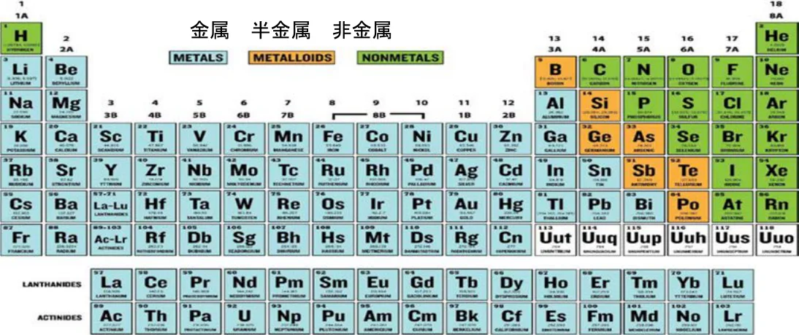
5.11.3 非金属材料には、酸化物、窒化物、ケイ化物などの純粋および不純化合物、カーボンおよびケブラー強化複合材などの有機マトリックスを持つ材料が含まれる。5.11.4 Ｘ基合金（例：ニッケル基合金）－Ｘはその合金に％ｗ／ｗベースで最も豊富に含まれる組成要素でなければならない。要素Ｘの最低可能重量率は、合金に含まれるその他の個々の組成要素の最大可能重量率を常に上回っていなければならない。
P.315.11.5 Ｘ－Ｙ基合金（例：アルミニウム－銅基合金）－Ｘは上記第５条１１.４と同様に最も豊富に含まれる組成要素でなければならない。さらに要素Ｙは、合金のＸの含有量に次いで第２番目に多く含まれている組成要素（％ｗ／ｗ）でなければならない。Ｙの平均含有値およびその他の合金要素が、第２番目に高い合金組成要素（Ｙ）を決定するのに使用されなければならない。5.11.6 金属間化合物材質（例：TiAl、NiAl、FeAl、Cu3Au、NiCo）－ これらは金属間化合物相、つまり材質の基質の５０％ｖ／ｖを超える部分が金属間化合物相（含複数）から成るものを基礎とした材質である。金属間化合物相は、部分的にイオン性または電子対を共有するものであるか、あるいは長距離相関によって結合する金属の何れかを呈する、化学比において短距離構成の２つ以上の金属間の固容体である。5.11.7 複合材質－これらは材質の基質が連続あるいは非連続相の何れかで強化されている材質である｡基質は、金属、セラミック、重合体またはガラスを基礎としたものであることができる。強化は長繊維（繊維の長さが１３mmを超える）あるいは、短繊維とすること、非連続的なものではウイスカーおよび素粒子であることができる。ナノスケールの強化材質は、複合材質であるとみなされる。（強化の寸法すべてが１００ｍｍ未満である場合は、強化がナノスケールであるとみなされる）。5.11.8 金属基複合材料（ＭＭＣ）：金属マトリックスに、金属マトリックスの融点より１００℃高い温度で液体相に溶性でない他のセラミック、金属、炭素、または金属間化合物の相を０.５％ｖ／ｖ以上含む複合材料である。5.11.9 セラミック材質（例：Al2O3、SiC、B4C、Ti5Si3、SiO2、Si3N4）－これらは、無機、非金属固体材質である。5.11.10 ナノマテリアル： ナノマテリアルとは、意図的に作られた材料で、１つ以上の寸法（例：長さ、幅、高さ、直径）が１００ｎｍ以下のものを指す。１ｎｍ ＝１×１０－９メートル）。5.12 材質および構造 － 一般
5.12.1 特定の適用について明確に許されていない限り、以下の材質はパワーユニットのいかなる場所にも使用されてはならない。ａ） マグネシウムを基礎とした合金ｂ） 金属マトリックスの融点より１００℃高い温度で液体相に溶性でない他のセラミック、金属、炭素または金属間化合物の相を２．０％ｖ／ｖを超えて含む金属基複合材料（ＭＭＣ'ｓ）。ｃ） 金属間化合物材質ｄ） 重量の５％を超えるプラチナ、ルテニウム、イリジウム、あるいはレニウムを含む合金。
P.32ｅ） ２.７５％を超えるベリリウムを含む、銅を基礎とした合金。ｆ） ０.２５％を超えるベリリウムを含む、その他一切の合金系。ｇ） タングステンを基礎とした合金。ｈ） セラミックおよびセラミックマトリックス複合材料。ｉ） ２.５重量％を超えるリチウムを含むアルミニウム基合金。ｊ） ナノマテリアルを含む材料。ｋ） 結合していないナノ材料を含む断熱材。
5.12.2 特定の適用のために明確に許可されていない限り、ＦＩＡ／ＡＣＯ 技術部が承認した素材のみがパワーユニットに使用できる。ＦＩＡ／ＡＣＯ技術部の承認は、当該素材が非独占的に、かつ通常の商業条件ですべての競技参加者に提供されることを条件とする。
5.12.3 第５条１２.１の制約は、被覆に適用されない。ただし、被覆の総肉厚がすべての軸において基礎となる材質の断面肉厚の２５％を超えないことを条件とする。すべての場合において、第５条１２.４ｂ）の場合を除き、当該被覆は０.８ｍｍを超えてはならない。被覆が、金、プラチナ、ルテニウム、イリジウム、あるいはレニウムを基礎としたものである場合、被覆の肉厚は０.０３５ｍｍを超えてはならない。
5.12.4 第５条１２.１ ｈ）の制約は以下の適用には適用されない：
ａ） 第一の目的が電気あるいは熱絶縁である一切の部品。ｂ） 第一の目的が排気システム外側の熱絶縁である一切の被覆。
5.12.5 マグネシウムを基礎とした合金で、それが認められているところでは、競技参加者に非独占ベースで通常の商的条件にて入手可能でなければならない。ＩＳＯ１６２２０あるいはＩＳＯ３１１６によって扱われるこれらの合金で、ＦＩＡに承認されているもののみ使用できる。5.12.6 第５条１２.１.ｂの制限は、アルミニウム－銅ベース材質のＴｉＢ２結晶粒の微細化には適用されない。結晶粒の微細化を目的としたＴｉＢ２の添加は、最大５％ｖ／ｖまで認められる。5.13 材質および構造 － 構成部品5.13.1 ピストンは、第５条１２項を遵守しなければならない。チタニウム合金は認められない。ロータリーエンジンのローターシールは、セラミック材料で製造されてよい。5.13.2 ピストンピンは、鉄ベースの合金により製造されていなければならず、素材
P.33単体から機械加工されなければならない。5.13.3 コネクティングロッドは、鉄あるいはチタニウムベースの合金により製造されていなければならず､溶接や接合部のある組み立てのない素材単体から機械加工されていなければならない（ボルト付きの大きなエンドキャップや干渉用の小さなエンドブッシュを除く）。5.13.4 クランクシャフトは、鉄ベースの合金で製造されていなければならない。高重量密度のバランスウエイトを固定する場合を除き、フロントとリアの主ベアリング・ジャーナルの間では溶接が禁止される。クランクシャフトには１８,８００ｋｇ／㎥を超える密度の材質を組み入れてはならない。クランクシャフトに組み入れられるこれらの部品はタングステンを基礎とする材質で製作できる。5.13.5 カムシャフトは、鉄ベースの合金で製造されていなければならない。各カムシャフトとローブは、素材単体から機械加工されなければならない。フロントとリアのベアリング・ジャーナルの間では溶接が禁止される。5.13.6 バルブは金属間材質、あるいはアルミニウム、鉄、ニッケル、コバルトまたはチタニウムベースの合金で製造されていなければならない。中空のステムとヘッド（冷却のためにナトリウム、リチウムあるいは類似のものが充填されているなど）も認められる。さらに第５条１２.３および第１６条１に詳細のある制約はバルブには適用されない。5.13.7 往復および回転運動を行う構成部品ａ） 往復および回転運動を行う構成部品は、グラファイト基、金属基複合材質あるいはセラミック材質から製造されてはならない。この制約はクラッチおよび一切のシール部には適用されない。ｂ） ローラーベアリングの回転要素は、鉄ベースの合金あるいはセラミック材質で製造されていなければならない。ｃ） クランクシャフトとカムシャフト（ハブを含む）の間のすべてのタイミング・ギアは鉄ベースの合金で製造されていなければならない。ｄ） 高圧燃料ポンプの要素は、セラミック材質で製作できる。ｅ） ねじりダンパーの要素は、タングステンをベースとした素材で製作できる。5.13.8 静止構成部品ａ） それらの中の挿入物を除き、サンプ、シリンダーヘッド、およびシリンダーヘッドカムカバーを含むエンジンのクランクケースおよびシリンダーヘッドはアルミニウム合金、あるいは鉄合金で製造されていなければならない。
P.34構成部品の全体またはその一部分であっても、複合材質または金属基複合材料は認められない。ｂ） 上記ａ）に一覧される以外の部品で、付則２の表の１行目に示される確認されるペリメーターに含まれる静止部品には、マグネシウムをベースとした合金が認められる。ｃ） エンジンの内部で潤滑あるいは冷却を維持するための機能を第１とするあるいは第２とする一切の金属性構造体は、鉄ベースの合金、アルミニウム合金、あるいは上記 ｂ）で認められる場合にはマグネシウムベースの合金により製造されていなければならない。ｄ） すべてのねじ付きファスナー類は、以下の２つの例外を除き、コバルト、鉄あるいはニッケルを基礎とした合金により製造されていなければならない。例外は： ⅰ） 第一の機能が、セラミックあるいはポリマー材質で製作することのできる、電気絶縁体となることが求められるファスナー。ⅱ） 電子制御装置の中に使用されるアルミニウムまたは銅を基礎とした合金またはポリマー（プラスチック）材質で製作できるファスナー。複合素材は認められない。ｅ） バルブシート挿入物、バルブガイドおよびその他一切のベアリング構成部品は、強化用に使用されていないその他の相と共に金属性浸透予備形成品から製造することができる。ｆ） バラストはタングステンベースの素材で製作することができる。ｇ） マグネシウムベースの合金は、パワーユニットの付属品の静止部品に使用することができる。ｈ） マグネシウムベースの合金は、圧縮機のハウジング（圧縮機の入口から出口まで）に使用できる。ｉ） 電子システムのすべての金属ケースには、マグネシウムベースの合金が
認められる。5.14 材質および構造 － エネルギー回生、貯蔵システムおよび電子システム
5.14.1 エネルギー貯蔵装置およびＥＲＳ装置は、第５条１２.１ ｂに従う必要なく、第５条１２.３の規制も受けない。5.14.2 電気機械内部の永久磁石は、第５条１２.１ ｂ）に従う必要なく、第５条１２. ３の規制も受けない。5.14.3 ＭＧＵ－Ｋのケースは、鋳造または鍛造されたアルミニウム合金から製造されなければならない。
P.355.14.4 特定の適用のために明確に許可されていない限り、以下の材質はＭＧＵ－Ｋのいかなる部分にも使用できない： ａ） コバルト、チタン、金、銀ベースの合金。 ただし、ＭＧＵ－Ｋのローターボルトはチタンベースの合金で作られて構わない。ｂ） サマリウムを含む合金で、ラミネートの厚さが２ｍｍ未満のもの。ｃ） 磁石の保持に使用されるブラケットを除く、複合材料または金属マトリ
ックス複合材料。ｄ） 永久磁石を除き、コバルトやニッケルを含む合金。5.14.5 電子ユニット内の電子構成部品は、一切の材質に関する制約を受けない。5.14.6 ＥＳには、バッテリー・マネジメント・システム（Battery Management System （ＢＭＳ））のバックアップ用を除き、１種類のセルのみが搭載されていなければならない。5.14.7 ＥＳセルの材質は、第５条１２.１.ｊに従う必要はない。5.14.8 ＥＳは、ＦＩＡ／ＡＣＯへの要請に応じて入手可能な安全承認手順に従わなければならない。5.15 エンジンの始動チームの指定ガレージ内、ピットレーン内およびグリッド上においてエンジンを始動させるために、車両に一時的に連結する補助的装置を使用することはできない。5.16 ストール防止システムストール防止システムを装着している車両の場合、事故を起こした時にエンジンのかかった状態のまま放置されることがないよう、すべてのそのようなシステムは起動後１０秒以内でエンジンを切るよう設定されていなければならない。このようなシステムの唯一の目的は、ドライバーが車両の制御を失った場合にエンジンがストールするのを防ぐことである。システムが作動している時に車両がセカンド以上のギアにある場合、複数段ギアチェンジはファーストギアあるいはニュートラルの何れかになり、その他のすべての状況下ではクラッチのみを作動できること。このようなシステムが起動する度に、クラッチは完全に切り離されなければならず、ドライバーのクラッチ作動装置の利用可能な全動作範囲の９５％を超える要求により、ドライバーが手動でクラッチを操作することよってシステムの機能を止めるまで、その状態を維持しなければならない。5.17 騒音レベルすべてのコース上でのセッション中、各車両から発せられる騒音は１１０ｄＢ（Ａ）の制限値を超えてはならない。測定は、コース端から最大１５ｍの距離、コース地上高から３ｍの高さに設置された
P.36マイクを用いて行われる。背景騒音レベルは、測定レベルより少なくとも１０ｄＢ（Ａ）低くなければならない。すべての測定は、クラス１騒音計を用いて実施されること。第６条 燃料システム6.1 原則6.1.1すべての燃料配管は、エンジンが稼働中あるいはスタート時にのみ作動しなければならない。6.1.2供給ポンプのタンクからコレクターに供給するスイッチは、エンジン停止あるいはエンジンストールで停止した燃料ポンプを再び作動させるために、メインスイッチとは別のスイッチを人が操作することでピットストップの間に入れることができる。6.1.3燃料装置は、下記の条項の規定が遵守されている限り、自由である。6.2 燃料タンク6.2.1燃料タンクはＦＩＡ基準ＦＴ５-１９９９の仕様に合致するか、それを上回る仕様の単一のラバーブラダでなければならない。許可される素材の一覧がＦ ＩＡウェブサイトのテクニカルリストNo.１に掲載されている。6.2.2すべての車載燃料は、上から見て：車両の前後方向軸から５００ｍｍを超えて離れた所に貯蔵されてはならない。
| 型板Ｈ３の後方でＸｒｅｆ面から５ ００ｍｍ以下。 | ドライバーおよび同乗者座席の後 方。 |
ドライバーおよび同乗者座席の後方。6.2.3最大１リッターの燃料をサバイバルセルの外側に貯蔵していてもよいが、これはエンジンの通常の作動のみに必要なものであること。6.2.4低圧回路（ＦＦＭを含む）の圧力は最大１０ｂａｒに制限される。１０ｂａｒを超える燃料圧力は高圧とみなされる。6.3 取り付けと配管6.3.1燃料タンクの開口部は、すべてブラダーの内部に接着された金属あるいは複合材のボルトリングに固定されたハッチもしくは取り付け部品で閉じられていなければならない。燃料に接触しているそれらのハッチまたは取り付け部品の合計面積は、７０,０００ｍｍ²を超えてはならない。ボルト穴の縁は、ボルトリング、ハッチあるいは取り付け部品の端から５mm以上離れていなければならない。6.3.2燃料タンクとエンジンの間にあるすべての燃料配管は、自動閉鎖・分離バルブを備えなければならない。このバルブは、燃料配管の取り付け部を破損したり、燃料タンクから燃料ラインを引き抜くのに必要な荷重の５０％を下回
P.37る負荷で分離するようになっていなければならない。6.3.3燃料の入った配管がコクピットを通過してはならない。6.3.4すべての配管は、漏れが生じた場合でもコクピット内に燃料が溜まらないように取り付けられていなければならない。6.3.5 １０barを超える圧力のかかった燃料を収容するすべての構成部品は、燃料タンクの外側に配置されなければならない。6.3.6タンクの壁の一部であるすべての付属品（通気口、入口、出口、タンク給油口、タンク間の連結具およびアクセスホールを含む）は、金属製または複合素材製でなければならず、燃料タンクに接着されていなければならない。6.3.7燃料タンクと公認の燃料流量計をつなぐ燃料配管は自動閉鎖分離バルブを備えなければならない。このバルブは、燃料タンクから燃料配管取付け具を引き抜いたり、破損するのに必要な負荷の半分以下の負荷で分離するものでなければならない。燃料流量計と燃料システムの間の燃料流量計および燃料ラインは、パワートレインの熱から遮断されなければならない。6.3.8低圧燃料配管は、１３５℃の最高作動温度での最低破裂圧力が最大作動圧力の２倍以上を有していなければならない。6.3.9高圧燃料配管は、最高作動温度１３５℃での最大作動圧力の２倍以上の最低破裂圧力を有していなければならない。6.3.10 計測ポイント後の流量比を増す、および／あるいは改変するような目的、および／あるいは効果のある装置、システムまたは手順は禁止される。6.4 燃料タンクの給油口およびブリーザーパイプ
6.4.1燃料タンク給油口はボディワーク外板より突出してはならない。燃料タンクと外気とを結ぶブリーザーパイプは走行時にあるいは車両が転覆した場合に液体の漏れがないように設計されていなければならず、その排気口は： コクピットの開口部から２５０ｍｍ以上離されていなければならない； 事故の際に破損しないような場所に取り付けられなければならない； ボディワーク表面より突き出してはならない； 重力式ロールオーバーバルブ、フロートチャンバー換気バルブ、および最大過圧２００ｍｂａｒのブローオフバルブを装備し、フロートチャンバー換気バルブが閉じているときに動作しなければならない； 基準面を通って出口をもつことが認められる。6.4.2すべての燃料タンク給油口、通気口およびブリーザーは、燃料補給後の不完全なロックや衝突によって偶発的に開く危険を少なくするために、十分なロック機能を確保するように設計されていなければならない。
P.386.4.3車両は結合された燃料タンク給油口と通気口を備えなければならない。燃料タンク給油口は、車両の両側に取り付け可能でなければならない。6.4.4車両の給油口および通気口はともにデッドマン機構の原理に合致した漏出防止ドライブレークカップリングを備えなければならず、開放状態の時にいかなる保持装置も組み込んではならない。6.4.5カップリングの寸法：付則Ｊ項－第２５２－５図（Ｂバージョン）の図解のみ。
6.4.6車両にカップリングが接続されている時に、ＩＣＥおよび一切の車軸にトルクを供給する電気モーターが始動することを禁止するため、少なくとも１つの近接センサーが義務付けられる。6.5 給油
6.5.1常に、（車両ゼッケンのついた）給油装置および車両のタンクは、外気温度および大気圧に保持されていなければならない。それは常に付則７に従っていなければならない。
6.5.2車両内で直ぐに使用するための燃料は大気温度よりも摂氏１０度を超えて低くてはならない。この規則の準拠を確認する際に、大気温度とは、ＦＩＡ／ ＡＣＯ指名の天気予報提供業者が、一切のプラクティスセッションの１時間前あるいはレースの２時間前に記録した温度とする。この情報は公式計時モニターにも表示される。6.5.3燃料の温度を下げるための車載装置を使用することは、いかなる装置であっても禁止される｡車載燃料の貯蔵容量を増大させる目的および／あるいは効果のある一切の装置またはシステムは禁止される。重力に厳密につながっていない原則を持つ一切の装置あるいはシステムは車載が禁止される。6.6 燃料流量計（ＦＦＭ）6.6.1 ＦＩＡテクニカルリスト４５に掲載されている公認された燃料流量計を１つ使用することが義務づけられている。このメーターは、ＦＩＡテクニカルリスト４４に基づいて認定された研究所で較正されたものでなければならない。6.6.2燃料流量計は、供給ラインの高圧燃料ポンプの前に設置しなければならない。高圧燃料ポンプに供給されるすべての燃料の流れは、燃料流量計を通過しなければならない。燃料の戻りは考慮されない。6.6.3メインの燃料流量計の供給ラインの燃料圧力を直接測定するＦＩＡ／ＡＣＯ圧力センサーの装着が義務付けられる。6.6.4 ＦＦＭの設置は、第１３条１５に基づいて行わなければならない。
P.396.7 燃料の排出およびサンプル抽出6.7.1競技参加者は車両からすべての燃料を排出させる方法を提供しなければならない。6.7.2競技参加者は、競技会期間中常に車両から１.０リットルの燃料サンプルを抽出できる状態を確保しなければならない。6.7.3車両には、タンクから燃料を取り出すことができる自動閉鎖コネクターを備えていなければならない。このコネクターは、ＦＩＡ承認（テクニカルリスト５）のもので、エンジンの高圧ポンプの前の供給ラインに取り付けられていなければならない（ＦＦＭコネクタとの併用も可能）。車両に搭載されている電動ポンプで燃料を除去できない場合、代表的な燃料サンプルを抽出していることが明らかであることを条件に、外部に接続したポンプを使用してもよい。外部ポンプを使用する場合は、ＦＩＡ／ＡＣＯサンプル抽出ホースを接続することが可能でなければならず、車両とポンプの間のホースは直径３インチでなければならず、長さ２ｍを超えてはならない。6.7.4サンプル抽出手順は、エンジンを始動させることやボディワーク（サンプル抽出コネクターのカバーを除く）を取り外すことを必要とするものであってはならない。6.8 １スティントあたりの使用エネルギー１スティントあたりの使用エネルギーは、耐久コミッティが定めるＥ（単位：ｋＪ）を超えてはならない。第７条 エンジンオイルおよび冷却液装置と給気冷却7.1 パワーユニットブリーザー液すべてのパワーユニットのブリーザー液は、大気にのみ放出することができる。ブリーザー液をパワーユニットに戻すことはできない。7.2 オイルタンクの位置すべてのオイル貯蔵タンクは、前後方向では、フロントホイールの軸とギアボックスケーシングの最後端との間に設けられていなければならず、車両の前後方向を軸としたサバイバルセルの側端より出てはならない。7.3 オイルシステムの縦方向の位置オイルを含むすべての部分は、リアコンプリートホイールの後方にあってはならない。
P.407.4 オイルシステムの横方向の位置
オイルを含むすべての部分は、車両中心平面から９００mmより離れてはならない。7.5 冷却液ヘッダータンク冷却装置の圧力は、水溶性の冷却剤が使用されている場合、４.７５barAに制限される。7.6 冷却装置パワーユニットの冷却装置は、燃焼用の空気も含め、いかなる液体の潜在的な気化熱も意図的に利用してはならない。ただし、第５条７.３に示されるようなエンジン内の通常の燃焼を目的とする燃料は除く。7.7 オイルおよび冷却液配管
7.7.1冷却剤や潤滑オイルが通過する配管は一切コクピット内を通過してはならない。
7.7.2すべての配管は、液体が漏れた場合にその液体がコクピット内に溜らないよう取り付けられていなければならない。7.7.3油圧液配管の取り外し可能な連結部はコクピット内にあってはならない。
7.7.4低圧潤滑油配管は、１３５℃の最高作動温度で、４１barsの最低破裂圧力を有していなければならない。7.8 オイル噴射ＰＵのいかなる部分とエンジン吸気との間に、アクティブ制御弁を使用することは禁じられている。7.9 キャッチタンク
7.9.1オープン式サンプブリーザーを１つでも有する場合、ブリーザーの排出口は、最低３リットルの容量を有するキャッチタンク内に設けなければならない。7.9.2コースにオイルを噴出する危険性を回避するために、最低１リットルの追加の安全タンクを、下記の図面に従い、キャッチタンクとブリーザーの間に挿入しなければならない。7.9.3この安全タンクの主な機能は、キャッチタンクのブリーザーにオイルあるいは油気が一切含まれないようにすることである。油気がこの安全タンクの上流で適正に処理されている場合、常に空の状態が維持されなければならない。
P.417.9.4これは： キャッチタンクから分離されていなければならない 高さが１００ｍｍなければならない（内側での計測） 高さすべてに渡って一定の区画が保たれていなければならない（底部の最大１０ｍｍの半径については例外とする） ＦＩＡ／ＡＣＯにより公認されたセンサーが装着されていなければならない。 このセンサーは、オイルのオーバーフローの検知のため、下記の図面に示されるとおりに取り付けられなければならない。7.9.5最大レベルに達した場合、競技参加者はキャッチタンクを空にするため、直ちにガレージに入らなければならない。
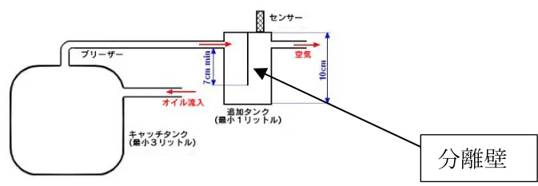
7.10 油圧システム
7.10.1 油圧配管油圧装置の圧力は３００barに制限される。すべての油圧液を収容する配管は、最高作動温度２０４℃での作動圧力の２倍以上の最低破裂圧力を有していなければならない。自動閉鎖カップリングあるいはネジ留めのコネクターのついた油圧液配管のみがコクピット内に許可される。配管は、いかなる漏れが生じようともコクピット内に液体が滞留しないように取り付けられなければならない。配管は、それが柔軟なものである場合、カシメられたあるいは圧着式コネクターおよび摩擦と炎に耐え得る外部網材を有していなければならない。第８条 電気装置8.1 油圧配管クローズド・ループ電子制御システムは、本規則で明確に許可されていない限り禁止される。ただし、以下の場合は明らかに許可されている： 単一のギア選択機構の場合、あらゆる電気モーター（例：ワイパーモーター、燃料ポンプ、電気制御されたギアシフトなどがあるが、これらに限られない）用。 単一のクラッチ作動機構のためのもの エンジン（ＩＣＥ）制御用 第５条５および第５条６に準拠したＭＧＵ－Ｋ制御用 オルタネーター、Ａ／Ｃシステム用 補助電気回路管理制御（パワーボックス）用。
P.42ＦＩＡ／ＡＣＯは、競技会期間中、いつでも義務付けられる電子安全システムの動作をテストすることができなければならない。8.2 補助回路およびバッテリー
8.2.1補助バッテリー（取り付けのある場合）は、コクピット内の同乗者席に、あるいはＥＳ室内配置されなければならず、強力に固定されなければならない。コクピットに配置される場合、第１３条９．２に従い、絶縁材で製作された防漏性のボックスの中に全体が保護されなければならない。バッテリーの固定部は、どの方向にも７０ｇの減速に耐えられるように設計されていなければならない。
8.2.2競技参加者は、装着が義務付けられた装置（データロガー、ＡＤＲ、プロモーター情報表示など）の操作に必要な電力（最大１６ボルト）を提供しなければならない。
8.2.3補助バッテリーを駆動用バッテリーあるいはＥＳの再充電に決して使用してはならない。競技会期間を通して、補助の電気回路を供給するバッテリーの電圧は、６０ボルト以下でなければならない。
8.2.4補助回路（ネットワーク）は、内燃機関を作動させるための、信号、照明、通信のために使用される電気機器のすべての部品で構成される。エンジンの動作に使用される部品には、スロットル、点火、噴射、吸気、潤滑、燃料供給、冷却、ターボが含まれるが、これらに限定されない。エンジンを始動するための装置およびＨＶ補助装置は含まれない。8.3 灯火装置灯火装置は常に作動状態を保っていなければならない。車両には以下が取り付けられなければならない：
8.3.1前部に： 8.3.1.1 最低２つの公認された前照灯を、車両の前後方向中心線に左右対称に、最低１３００ｍｍ離して装着する。計測は前照灯の中央で行われる。前照灯は白色のビームを発光しなければならない。8.3.1.2 両側に方向指示器。それらはオレンジ色で、スローゾーンとフルコースイエローの条件を満たすための速度制限が適用されると同時に点滅しなければならない。スローゾーンとフルコースイエローの速度制限のための方策が車両に実施されていなければならない。点滅周波数は４Ｈｚ（０.１２５秒ＯＮの後、０.１２５秒ＯＦＦ）。レインライトが作動している場合は、点滅はレインライトと反対であること。8.3.1.3 表示灯いかなる車両も、位置決めおよび彩色（青、赤あるいは緑色の変化色はなし）で、安全ライト（ＥＲＳ／衝撃警告）の妨げとなる表示灯を使用してはならな
P.43い。例としては次のようなものであるが、それに限られない：ウインドスクリーンの後方でいくつかの類似した色を使うことは認められない。フロントライトコンパートメント内では、任意の色が許可される。8.3.1.4 メインヘッドライト冷却ファン各ヘッドライトユニットごとに、以下の条件で冷却ファンが認められる： メインヘッドライトユニットの温度調整のみを目的としていること； 電力量が5W未満であること； ファンの出口がボディワーク内にあること。8.3.2後部に： 8.3.2.1 ２つの赤色灯と２つの“ストップ”ライトを、車両の前後方向中心線に左右対称に、最低１５００ｍｍ離して装着する。計測はリアライトの中央で行われる。加速の損失が少なくとも０.２秒間、０.２秒以内で０.４ｇを超えた場合、“ストップ”ライトの点滅による警告が起動される。点滅の周期は０.２５秒点き、０.２５秒消えるものであること。ブレーキライトの点滅は、０.２ｇを超えて車両が加速した時に、停止されなければならない。点滅は開始されたなら、最低２秒間かけられなければならない。いかなる場合も、ブレーキライトの点滅は、ブレーキペダルが押されると直ちに停止されなければならない（ドライバーがブレーキを適用すると通常の点いたままのブレーキライトとなる）。8.3.2.2 ２つのレインライトあるいはフォグランプを、後部に左右両側でできるだけ最も高い最も外側の位置に、車両の前後方向中心線に左右対称に装着する。それらはFIA基準8874-2019グレード１に従い公認されなければならない（テクニカルリスト４６）。両方のライトとも周期が４Hzの点滅（０.１２５秒ONの後０.１２５秒OFF）をすること。２つのレベルの輝度モードを実施しなければならない： 高レベル（Level High） - 昼間は最大輝度モード 低レベル（Level Low） - 夜間用の低輝度モードこの２つのモードは、ハイビームコマンドに自動的にリンクさせることができるが、例外的な要求（夜間の激しい雨や霧、ロービームの故障時にハイビームで走行するなど）があった場合には、ドライバーが選択できなければならない。この２つのモードを実現するための技術的な要件は次のとおり：インヒビット入力に周波数３００Ｈｚのパルス幅変調信号（ＰＷＭ）を印加し、デイモードでは７０％、ナイトモードでは３０％のデューティサイクルを使用すること。レインライトの冷却を保証するために、レインライトの側面は覆われていない状態でなければならない（ステッカーや塗料などは使用しない）。
P.448.3.2.3 両側に方向指示器。オレンジ色で、スローゾーンおよびフルコースイエローの条件に合致する速度制限が適用されると同時に点滅しなければならない。スローゾーンおよびフルコースイエローの速度制限に対する方策が車両に実施されること。点滅周期は４Hz（０.１２５秒ONの後０.１２５秒OFF）。レインライトが点灯された場合、点滅はレインライトと反対であること。8.3.3両側で： 本規則の付則に記載されている計時情報の表示モジュールを車両の両サイドに取り付けなければならない。8.4 ＦＩＡ／ＡＣＯロギング要件ＦＩＡ／ＡＣＯの義務付けられるロギングセンサーは、本規則の付則に記載されている。すべてのＦＩＡ／ＡＣＯロギングセンサーは、承認されたＦＩＡ／ＡＣＯ供給業者によって提供されなければならない（テクニカルリスト４６）。それらはＦＩＡ／ ＡＣＯのデータロガーに直結されなければならない。これらのセンサーの信号は、特に指定がない限り、ＣＡＮを介して競技参加者に送られる。公認された流量計およびトルク計測器を含めたＦＩＡ／ＡＣＯロギングセンサー配線束は、競技参加者により製作され、ＦＩＡ／ＡＣＯによって承認されなければならない。唯一認められるＧＰＳは、義務付けのロギングシステムからのＦＩＡ／ＡＣＯのＧ ＰＳである。ＦＩＡ／ＡＣＯデータロガーは衝突時にケーブルが損傷するのを防ぐため、ＡＤＲセンサーの近くで、コクピット内に搭載されなければならない。8.5 データ取得ＦＩＡ／ＡＣＯは、あらゆる本コース走行セッションの前、最中、後に、以下のＥ ＣＵ情報に無制限にアクセスできなければならない。ａ）アプリケーションのパラメータ設定。ｂ）記録されたデータや事象。ｃ）リアルタイムのテレメトリーデータと事象。データ取得は許可されたセンサーに限られる。車両に装着されているセンサーのリストは公認されたものでなければならず、すべての公認されたセンサーは常に車両に装着されていなければならない。許可されているセンサーは、本規則の付則に記載されているもののみである（記載されていない限り、各種類の数に制限はない）。8.6 テレメトリー
8.6.1 ＦＩＡ／ＡＣＯテレメトリーシステムの使用が義務づけられている。他のテ
P.45レメトリーシステムを設置および／または使用してはならない。本規則の付則に記載されているチャンネルを含む標準ロギング・テーブルの使用が義務付けられている。
8.6.2以下のみが車両とピット間の連絡に認められる： － ピットサインボード上の読み取り可能なメッセージ。－ ドライバーのジェスチャーによる合図。－ 車両からピットへのＦＩＡ／ＡＣＯテレメトリーシステム経由のテレメト
リー信号。－ ドライバーとピットとの双方向の言葉のやりとり。そのようなすべての交信は、ＦＩＡ／ＡＣＯにも傍受可能で利用できるものでなければならない。8.7 トラックシグナル情報表示全車、強制的にマーシャリングディスプレイを装着しなければならない。8.8 セーフティライトＥＲＳステータスライト（取り付けのある場合）と承認されたＦＩＡ／ＡＣＯ供給業者の提供による衝撃警告ライト（テクニカル・リスト４６）を含む２つのセーフティライトＬＥＤモジュールを車両に取り付けなければならない。これらのモジュールは、外部消火器スイッチの近くで、ウィンドスクリーン下部の両側から見える位置に設置しなければならない。第９条 トランスミッションシステム9.1トランスミッションのタイプ
エンジントランスミッションシステムは、後輪をのみを駆動するものでなければならず、特注設計が可能である。
| オリジナルのギアボックスを使用す る場合は、第9条2.1、第9条2.2、第9 条2.5、第9条2.6、第9条5.1、第9条6.1、 第9条6.4、第9条8.2の適用を受けな い。 オリジナルのギアボックスの改造は 認められない。 |
認められない。9.2クラッチ
9.2.1以下はリアパワートレインのクラッチにのみ適用され、フロントパワートレインの一部としてだけに使用されているクラッチには適用が免除される。内燃エンジンのために、１つのみのクラッチが認められる。9.2.2複数クラッチ操作装置が使用されている場合、それらはすべて同一の機械的
P.46動程特性を有し、まったく同じようにマップされていなければならない。9.2.3クラッチ操作装置の移動範囲内の特定のポイントをドライバーが認識できるようにしたり、ポジション保持のためドライバーを補助するような設計は認められない。9.2.4クラッチ操作装置の最小移動位置と最大移動位置は、それぞれクラッチを完全に接続した通常の静止位置と完全に解放した（いかなる使用可能なトルクを伝達できない）位置に対応しなければならない。9.2.5典型的な本来の油圧特性や機械的特性に加えて、ＥＣＵが要求する噛み合わせの量や速度を調整したり、影響を与えたりするようなデザインやシステムは認められない。9.2.6クラッチの掛かり量は、以下の場合を除いて、ドライバーが単独で直接コントロールしなければならない： ａ）エンスト防止、ｂ）ギアシフト。9.2.7クラッチのスリップ量あるいは掛かり量をドライバーに通知する装置やシステムは認められない。9.3 トラクションコントロール車両には、動力による車輪の空転を防止したり、ドライバーによる過剰なトルク要求を補正したりする閉ループシステムや装置が装備されている場合がある。9.4 クラッチの解放すべての車両はエンジンが停止し静止状態となり、押すことや牽引することができる状態となった際に最低１５分間クラッチを切るための手段を備えていなければならない。このシステムは、車両の主要油圧、空気圧、または電動式システムが機能しなくなった場合も競技中を通じて動作可能な状態に保たれなければならない。空気圧式補助装置を使用する場合は、コックピットの外に取り付けた最大容量０.５ dm3の圧縮空気ボトルを使用することができる。9.4.1外部のニュートラルおよび総合サーキットブレーカースイッチ。第１４条１６参照。9.5 ギアボックス
9.5.1唯一アルミニウムあるいはマグネシウム合金製のケースおよびベルハウジングが認められる。9.5.2ギアボックスの最低重量は、付則２に記載の重量ペリメーターを考慮して、７５ｋｇである。9.5.3上記条件でのギアボックスのＣｏＧ高さの最小値は、基準面から１５０ｍｍ
P.47上方である。9.6 ギアレシオ9.6.1前進のギアレシオの数は７以下でなければならない。9.6.2公認の対象となるギアレシオセットは２種類までとする。9.6.3ギアは鋼鉄製でなければならない。9.6.4一度に、ドライブトレイン（動力伝達経路）に、２組以上のギアが掛かることができるシステムはすべて禁止される。9.7 後退車両は、競技会期間中のいかなる時にもドライバーが後退させることができなければならない。9.8 ギアチェンジ9.8.1オートマチック式ギアチェンジはドライバー補助とみなされ、従って認められない。ギアチェンジを目的としてクラッチとパワーユニットのトルクはドライバーの制御下である必要はない。9.8.2瞬間的なギアシフトは禁止される。ギアシフトは、実際のギアの噛み合いの抜き取りに続き、目標ギアへの噛み合いが行われる、明らかな連続的作用でなければならない。単一のバレルシフト機構あるいは１つのＨパターンギアシフト機構のみが認められる。ギアシフト機構はすべての前進ギアを操作するものでなければならない。後退ギアは別個の作動システムによって操作できる。エンジンカットはアップシフト中、最低３０ｍｓ適用されなければならない。つまり、２つのドライブリアシャフトのトルクセンサーから得られるトルクの合計の３０ｍｓの平均値が、シフトが発生する直前に同じトルクセンサーから得られたトルクの５０％よりも低くなければならない。この３０ｍｓのエンジンカット中、ＩＶＴセンサー信号の平均は１０ｋＷ 未満で、－１０ ｋＷよりも高くなければならない。9.8.3第５.１項に規定されるパワーユニットのパワーを伝達するために、連続的可変トランスミッションシステムを使用することは認められない。9.8.4各個々のギアチェンジは、ギアボックスの機械的制約の範囲以内で、ドライバーによって個別に開始されなければならず、要求されたギアは、要求されたギアシフトを拒否するためにオーバーレブの保護が使用されていない限り、直ちに変速されなければならない。一旦ギアチェンジ要求が了承されたならば、最初のギアチェンジが完了する
P.48まで、更なる要求を了承することはできない。複数段ギアチェンジは、第５条１６の下にて、あるいはドライバーの要求に続いてギアボックスへのシフトがニュートラルにされた場合にのみ実施できる。オーバーレブ保護策が利用されている場合、これは目的のギアの掛かりを回避できるだけものであり、５０msを超える遅延を引き起こしてはならない。このようにしてギアチェンジが拒否された場合、ドライバーが新たな別個の要求をした後でのみ、ギアを変速することができる。ドライバーのギアチェンジ要求を調節するために利用される、一切のデバウンス時間方策は単一で一定の値でなければならない。
9.8.5ディスタンスチャネルあるいはトラックの位置は、ギアボックス制御への入力としては認められない。9.9 トルクトランスファーシステム回転の遅いホイールから回転の早いホイールにトルクを転送するあるいは転換することを可能とする設計のシステムあるいは装置は、第９条１０に記載のものを除き、一切禁止される。9.10 ディファレンシャル油圧/空気圧あるいは電気システムの補助なしに作動する機械的リミテッドスリップ・ディファレンシャルのみが認められる。ガス圧によるプリロードの調整は、車両が走行していないときに、コックピットの外から、工具を使ってのみ行うことができるという条件で認められる。ビスカス式のディファレンシャルは、車両が走行中の場合に制御が不可能であれば、油圧式スリップコントロールとは見なされない。9.11 ディファレンシャル使用9.11.1 定義制動トルク伝達：制動時に同じ車軸の左側と右側の車輪に適用されるドライブシャフト測定トルク差の絶対値。総制動トルク：同じ車軸の左側と右側の車輪に適用されるドライブシャフト測定トルクの合計の絶対値。ロック率：制動トルク伝達と同じ車軸の合計制動トルクの比率。プリロード：合計制動トルクが０Ｎ.ｍの場合に左右の速度差を引き起こす最小制動トルク伝達。9.11.2 使用原則総制動トルク伝達は、本規則の付則に定義されたトルク曲線を越えてはならない。４輪駆動車では、フロントディファレンシャルのロック率とプリロードは、本規則の付則に定義された合計値を越えてはならない。
P.49第１０条 サスペンションおよびステアリング装置10.1 サスペンションデザインおよびジオメトリ10.1.1 車両は懸架・サスペンションを取り付けていなければならない。10.1.2 フロントホイールに取り付けられた一切のサスペンションシステムは、その反応がフロントホイールへ適用された荷重の変化からのみ生じるものであるように設計されていなければならない。10.1.3 リアホイールに取り付けられた一切のサスペンションシステムは、その反応がリアホイールへ適用された荷重の変化からのみ生じるものであるように設計されていなければならない。10.1.4 ショックアブソーバーおよび／あるいは第３サスペンション要素を油圧で連結することを目的としたシステムは禁止されている。10.1.5 ダブル・ウィッシュボーンで、唯一認められているのは運動学サスペンションである。10.1.6 １つの車軸につき３つを超えるショックアブソーバーは認められない。10.1.7 以下のシステムは禁止されている： マスダンパー：バネ上の質量側に配置されたホイールに連動する移動質量であって、サスペンションの固有振動数および／またはタイヤコンタクトパッチ負荷の変化を調整することを唯一の目的とするもの。 イナーターダンパー：バネ上の質量側に配置され、ホイールに連動して回転する質量であって、サスペンションの固有振動数および／またはタイヤコンタクトパッチ負荷の変化を調整することのみを目的とするもの。流体慣性式もまた、イナーターとみなされる。 Ｇダンパー：バネ上の質量側に配置された移動質量であって、加速度に応じてサスペンションを制御することのみを目的とするもの。 車輪荷重を受け、地上高を変化させるサスペンションのいかなる部分も、要素のたわみに応じて一定の剛性または漸進的な剛性を持つことのみが認められる。機械式、油圧式、またはガス式で作動する、減衰性または折りたたみ式の要素は禁止される。10.2 サスペンション調整10.2.1 フロントとリアのアンチロールバーを除き、コクピット内部から、いかなるサスペンションシステムも、調整は一切行われてはならない。フロントおよびリアのアンチロールバーの調整は次のように行わなければならない：
P.50－ 車両の入力／出力とリンクすることなく、手動レバー（複数含）／ノブ（複数含）の動きによって動作すること。－ 手動、機械式（ケーブルの機能を交換するという目的でのみ油圧作動が許
可される）、一対一の単射的で、自由度なしであること。
結果として生じる剛性の変化は、アンチロールバーを調整する以外の機能を有さず、その動きに直接リンクされていなければならない。このシステムは、ＡＣＯ／ＦＩＡによる事前承認の対象となる。レバー（複数含）／ノブ（複数含）は、ドライバーの脚部（Ｈ２）、身体（Ｈ ３）、および頭部（Ｈ４）のテンプレートの外側に配置されなければならない。10.2.2 サスペンション部品以外、機能原理がいかなるものであろうとも、またドライバーによって作動するか否かに関わらず、地上高を改変する目的のシステムは禁止される。10.2.3 電気的に制御されるショックアブソーバーは禁止される。10.2.4 車両は、以下の地上高制限の範囲内での本コースの使用が義務付けられる： 動的車軸の最大地上高：１１０ｍｍ（フロントおよびリア） 静的地上高の最大値：１００ｍｍ（フロントおよびリア）ＦＩＡ／ＡＣＯは、車検で静的地上高とサスペンションの下垂をチェックすることで、この数値を取り締まる。しかしながら、本コース上での追加の地上高測定が必要とされる（レーザー、ハブの変位とプッシュロッドに基づくＲＨモデル．．．）。点検時に、ゲージ圧２.０±０.１バールのドライ天候用タイヤが装着されていない場合、あるいは装着されているタイヤの状態が適切でない場合は、ＦＩ Ａ／ＡＣＯテクニカルデリゲートが適切なドライ天候用タイヤを選択することができる。10.3 サスペンション部材10.3.1 各サスペンション・アームには、以下の条件の下、１つの非構造部品が認められる： サスペンション部材、ブレーキライン、ホイールテザー、電気配線を保護するためのものであること。 その部品の断面の幅と高さの比率が、各アームにつき３を超えないこと。 その部品の形状は、サスペンションアームに垂直な断面を参照して、対称的であること。 その部品の断面の最大厚さが、部品が固定されているサスペンションアームの断面の最大高さ＋４ｍｍに等しいこと。 サスペンションアームへの着脱を可能にするためだけに、２つの部分に分割することができること。10.3.2 サスペンション部材は： 均質な金属製でなければならない
P.51 クロームメッキが施されていてはならない プロフィールの高さ／幅比は３.０を、接合部では６.０を超えてはならない 部材がドライバーの足に危険を及ぼす可能性がある場合は、フロントサス
ペンションのウィッシュボーンの基部に、貫入防止用のバーを装着することが義務付けられていなければならない。10.4 ステアリング10.4.1 ステアリングホイールと車両の前輪との間に連続した機械的リンクがあることを条件に、ステアリングシステムのデザインとジオメトリは自由である。
10.4.2 ステアリングコラムステアリングコラムはスポーツカーの安全構造体の承認手順に従い、ＦＩＡによって承認されなければならない。10.4.3 ステアリングホイール、ステアリングコラム、それらに装着された部品のいずれも、ステアリングホイールリムの後端全体で形成される平面よりもドライバーに近い所にあってはならない｡ステアリングホイールに固定されるすべての部品は、ドライバーの頭部がホイール組み立て部のどこかに接触した場合、怪我の危険性を最小限にとどめるように取り付けがされていなければならない。10.4.4 ４輪駆動は禁止される。10.4.5 パワーステアリングは許されるが、そのような装置は、車両の操舵に必要な肉体的労力を軽減させる以外の機能を実施できず、すべての油圧および／あるいは電力が遮断された時にも操舵機能が働き続けることができなければならない。10.4.6 ステアリングホイールのクイックリリースシステムが義務付けられる。クイックリリース機構は、ステアリングホイール軸に同心円状のフランジで構成され、そのフランジは陽極酸化処理あるいはその他の耐久性のある被覆加工で黄色に塗装されていなければならず、ステアリングホイール裏側のステアリングコラムに取り付けされなければならない。 リリースは、ステアリングホイール軸に沿ってフランジを引くことによって行われるものでなければならない。ステアリングホイールのリリースはパワー回路を開かなければならない。第１１条 制動装置11.1 制動回路および圧力配分
11.1.1 すべての車両には、パワーユニット１つを除いて、１つの制動装置のみが装備されていなければならない。この装置は１つのペダルによって操作される２系統の分離した油圧回路のみで構成されていなければならない。回路の１つは２つのフロントホイールを制御し、もう１つは２つのリアホイールを制
P.52御するものであること。このシステムは、１つの回路に欠陥が生じた場合でもペダルがもう一方の回路でブレーキを操作するように設計されていなければならない。この２つの回路の間の接続として認められるものは、唯一前後の車軸の間の制動力均衡を調節するための機械的システムである。11.1.2 制動装置は、各回路内でブレーキパッドに働く力が常に同一になるよう設計されていなければならない。11.1.3 制動装置の仕様構成を変更する、あるいは性能に影響を及ぼすことが可能な動力装置は、それが装置のどの部分であっても、第１１条７に定められるシステムを除き、一切禁止される。11.1.4 車両が本コース上にある間に制動装置の変更あるいは調整をすることは、ドライバーの直接的入力行為、あるいは第１１条７に定められるシステムによりなされなければならず、事前に設定できない。11.1.5 情報収集用のセンサー、“ストップ”ライトスイッチあるいは工具を利用して調整可能な機械的制動圧制御は、“システム”とはみなされず、それらはマスターシリンダーの出口間近に取り付けられなければならない。11.1.6 マスターシリンダーとキャリパーの間には、第１１条７に記載されているシステムを除き、いかなる装置やシステムも使用できない。11.2 ブレーキキャリパー
11.2.1 すべてのブレーキキャリパーは、８０Ｇｐａ以下の弾性率のアルミニウム材質で製作されなければならない。11.2.2 各ブレーキキャリパーを車両に固定するのに使用できる取り付け部は２箇所までとする。11.2.3 各ホイールに、最大６つのピストンを伴うキャリパー１つが許される。11.2.4 各キャリパーピストンの断面は円形でなければならない。11.3 ブレーキディスクおよびパッド
11.3.1 各ホイールにつきブレーキディスク１枚が許される。ディスクは連結されるホイールと同一の回転速度を有していなければならない。11.3.2 すべてのディスクは、３８１ｍｍの最大外径を有していなければならない。11.3.3 ディスク１枚につき換気孔の数は５００に制限される。11.3.4 各ホイールに２つまでのブレーキパッドが許される。
P.5311.4 ブレーキ冷却ダクトフロントおよびリアブレーキ周辺のブレーキ冷却ダクトは、ブレーキシステムの一部とみなされ、以下を超えて突出しないこと： ａ）ホイールの水平方向の中心線から上方２２０ｍｍの距離にある地面に平行な平面。ｂ）ホイールの水平方向の中心線から下方２２０ｍｍの位置にある地面に平行な平面。ｃ）ホイールリムの内側の面に平行で、そこから車両の中心面に向かって１００ｍｍずれた位置にある垂直面。ｄ）ディスクの中心面に平行で、そこから車両の中心面と反対方向に８０ｍｍ（ブレーキキャリパーの場合は１００ｍｍ）ずれた位置にある垂直面。さらにｅ）側面から見て、ダクトはホイールの中心から半径３８０ｍｍを超えて前方に突出してはならず、または、ホイールの中心から半径２２０ｍｍを超えて後方に突出してはならない。ｆ）ダクトはホイールと共に回転してはならない。ｇ）第１２条７.１項および第１２条７.２項に明記されているものを除き、車両のいかなる部分も、車両の外側からホイールの軸に沿って車両の中心面に向かって見たときに、ホイールのいかなる部分をも覆い隠してはならない。ｈ）ブレーキドラムは、ブレーキ冷却用ダクトとしても考えられる。ｉ）ブレーキ冷却用のフレキシブルホースは認められており、この条項の目的上、ブレーキ冷却用ダクトとは見なされない。すべての測定は、ホイールを垂直に保持した状態で行う。11.5 ブレーキ圧の調整
11.5.1 制動装置は、ドライバーがブレーキペダルに圧力を加えた時にホイールがロックしないような設計であってはならない。11.5.2 第１１条７に記載されているシステムを除き、いかなるパワーブレーキ機能も禁止される。11.6 液体冷却ブレーキの液体冷却は禁止される。11.7 ブレーキ制御装置車両に前輪につなげられたＭＧＵ－Ｋが取り付けられている場合、フロントブレーキ回路内の圧力は以下を条件として動力制御システムによって供給できる：
P.54ａ）ドライバーのブレーキペダルが、動力システムが作動しないようにされている場合に、フロントブレーキ回路に適用できる圧力源を発生する油圧マスターシリンダーにつなげられている。ｂ）電気系統が故障した場合の安全性を確保するため、ＭＧＵ－Ｋシステムや油圧式高圧ブレーキ装置からの追加の制動力がなくても、ドライバーがブレーキペダルを踏んだ力だけでキャリパーが作動し、通常時と同等の減速度が得られるようなブレーキシステムの設計がされている。ｃ）ホイールスリップのクローズドループ制御ができない。
ＭＧＵ－Ｋが装着されていない場合、リアブレーキ回路内の圧力は、上記の条件を満たす動力制御システムにより供給することができる。第１２条 ホイールおよびタイヤ12.1 位置上方および前方から見て、車両が直進するために整列されたホイール、コンプリートホイールとその取り付け部は、車軸の中心線を通る水平面よりも上に見えてはならない。12.2 ホイールの数ホイールの数は４つに固定される。１つのみの仕様が、フロントアクスルとリアアクスルにそれぞれに認められる。12.3 コンプリートホイール寸法（リムとタイヤ）
12.3.1 コンプリートホイールの直径は２８"を超えてはならない。12.3.2 コンプリートホイールの幅と直径は、１.４ｂａｒに膨張させた新しいタイヤを装着し、ホイールを垂直位置に保った状態で車軸の高さで水平に測定されること。12.3.3 タイヤ寸法とコンプリートホイール最大幅は以下の表に従っていなければならない：
| 4WD*車両 (*2023年以前に公認された 4WD車両に可能) | 2WD**および4WD車両 (** 2023年以前に公認され た4WD車両は可能、2022 年以降に公認された4WD 車両は義務化) | |||||||
| F | R | F | R | |||||
| タイヤ寸法 | 31/71-18 | 31/71-18 | 29/71-18 | 34/71-18 | ||||
| コンプリートホイール最大幅 | 14" | 14" | 13.5" | 15" |
車両は義務化) F R F Rタイヤ寸法31/71-18 31/71-18 29/71-18 34/71-18コンプリートホイール最大幅14" 14" 13.5" 15"
P.5512.4 ホイールの材質ホイールは均質な合金製でなければならない。ホイールは、溶接および／あるいは空洞なしの一体パーツとして製造されることが義務付けられる。12.5 ホイールの寸法（リム）12.5.1 ホイールの最大幅は以下の表に従っていなければならない：
| 4WD*車両 (*2023年以前に公認された 4WD車両に可能) | 2WD**および4WD車両 (** 2023年以前に公認され た4WD車両は可能、2022 年以降に公認された4WD 車両は義務化) | |||||||
| F | R | F | R | |||||
| タイヤ寸法 | 31/71-18 | 31/71-18 | 29/71-18 | 34/71-18 | ||||
| ホイール（リム）最大幅 | 13" | 13" | 12.5" | 14" |
車両は義務化) F R F Rタイヤ寸法31/71-18 31/71-18 29/71-18 34/71-18ホイール（リム）最大幅13" 13" 12.5" 14"
12.5.2 ホイールの直径は１８"を超えてはならない。
12.5.3 ホイールの重量は以下を超えてはならない：
| ホイール（リム）寸法 | 重量 |
| 12.5" | 8.75 kg |
| 13" | 9 kg |
| 14" | 9.25 kg |
14" 9.25 kg
12.5.4 ホイールは以下の仕様に合致していなければならない： ａ）ホイールの内側と外側のリム端部の高さで計測した直径は、公差＋／－
１.５ｍｍをもって同一でなければならない。最大で高さは１９.２ｍｍを上回ってはならない。ｂ）ホイールの設計は、センサーおよびバルブのための余裕部分を含めて、タ
イヤの取り付け、取り外しに関するタイヤ供給業者の一般的な要求事項を満たしていなければならない。ｃ）ホイールの設計は、左と右の設計を違えることはできない。12.5.5 車両に取り付けられた時に、コンプリートホイール組み立て品のあらゆる部分がリムの速度で回転しなければならない。
12.5.6 ホイールの外側表面によって形成される面に垂直に見て、直径１５０ｍｍと４００ｍｍの間で、ホイールは４６,０００ｍｍ²以下の投影面積を有することができる。12.6 タイヤの処理タイヤを膨張させることができるのは、空気、あるいは窒素のみである。
P.5612.7 ホイールアセンブリー12.7.1 タイヤに加えてホイールに物理的に取り付けることのできる唯一の部品は、外観のための表面処理および保護材、タイヤガス充填および排出のためのバルブ、ホイール留め具、バランスウエイト、ドライブペグ、タイヤ圧および温度の監視装置、および同軸のためのすべてのホイール上の同一仕様の内側取り付け面上に付けられるスペーサーである。疑義を避けるために、取り外し可能なホイール/ハブキャップは認められない。
12.7.2 ホイールは、１つの留め具を使用して車両に取り付けられなければならない。留め具の外径は１１０ｍｍを超えてはならず、軸の長さは７５ｍｍを超えてはならない。ホイール留め具は、第１２条７.１に規定されるホイールアセンブリー以外、車両のいかなる部分にも取り付けあるいは搭載することはできない。
12.7.3 コンプリートホイールは、１つの固定された内部ガス容量を内包していなければならない。バルブ、ブリード、透過性の膜は、車両が停止中にタイヤを膨張させるあるいは収縮させる目的以外で使用できない。圧力制御バルブは認められない。
12.7.4 ホイール留め具の取り付けあるいは取り外しに使用する装置は、圧縮空気あるいは窒素によるもののみ認められる。いかなるセンサーシステムも受動的にのみ作動できる。12.8 空気圧式ジャッキ認められる。しかしながら、スターティンググリッド上では、エアホースをエアジャッキに連結する連結機能は、エアホースが外された時に車両がエアジャッキ上に保持されるシステムを有していなければならない。このジャッキの操作のために、圧搾空気ボトルを車両に搭載することは認められない。第１３条 コクピットおよびサバイバルセル13.1 原則コクピットはドライバーの最大の保護体として備えられなければならない。コックピットは、いかなる漏れがあっても、その中に液体が蓄積されないように設計されていなければならない。運転席（第１４Ｂ図参照）と、第１４条６（ヘッドレスト）および第１５条２.１（サバイバルセル－一般規定）に記載されている、義務付けられている保護装置を取り付けることが可能でなければならない。サバイバルセルのロールオーバー構造体／サポートは、車両中心線に対して対称的でなければならない。
P.5713.2 サバイバルセルの底面サバイバルセルの底部には、直径８０ｍｍの「データム」パッドを２個設置しなければならない。これらのパッドは、少なくとも車両中心線から３５０ｍｍの位置に左右に配置され、サバイバルセル製造前にＦＩＡ／ＡＣＯによって検証されなければならない。それらはサバイバルセルの基準面に底面が来るようにサバイバルセルに取り付けられなければならない。サバイバルセルの底面（サバイバルセル基準面）と基準面の間の距離は、公認されなければならない。各 ＂データム ＂パッドの中央にはＭ ５のネジが切られており、車検の際に容易にアクセスできるようになっていなければならない。直径８０ｍｍの「データム」パッドは、構造上の基準となるよう、ベルハウジングまたはギアボックスの下の車両中心線上に配置されなければならない（通常、サバイバルセルの「データム」パッドと同じ平面上に配置される）。データムパッドの中央にはＭ５のネジが切られており、車検の際に容易にアクセスできるようになっていなければならない（スキッドブロックの直径８０ｍｍの部分を取り外すことが可能）。
| サバイバルセル構造体の底面には、７０ ０ｍｍ（前後方向）×８００ｍｍ（横方 向）の長方形が含まれていなければなら ない。 |
13.3 ドライバーの足の位置
操作されていない位置にあるペダルの最も前方の面が、サバイバルセル隔壁の後方３ ００ｍｍ以上でフロントホイール中心線の後方に位置しなければならない。最前位置は、スロットルペダルを全開にした位置とみなされる。コクピット内の挿入物に関するペダルの図面は車両の公認書式に提供されること。13.4 ステアリングホイールの位置ステアリングホイールの基準となるのは、以下の交点である： ステアリングホイール平面（ドライバーの手のグリップゾーンの中心を通る）。 ステアリングコラムの軸。ステアリングホイールの中心は、次のものと一致しなければならない：
| 運転席の中心線。 ステアリングホイールの中心は、車両中 心線から最小１５０ｍｍの位置にある こと。 ステアリングホイールの頂部は、Ｚｒｅ ｆ平面から６５０ｍｍ以上の位置にあ ること。 | 運転席の中心線。 |
ダッシュボードの端は、操作位置に関わらず、ステアリングホイール一式から５０ ｍｍ以上離れていなければならない（ステアリングコラムの折りたたみ部分が５０ ｍｍ短い場合は、ステアリングホイールのどの部分もダッシュボードに接触しないこと）。
P.5813.5 視界に関するドライバーの位置ヘルメットの後面と接触する高さにあるヘッドレストのパッドの最前部は、Ｘｒｅｆ平面の前方８５ｍｍ（第１４条６．２に記載されている追加のパッドの場合は９５ｍ ｍ）になければならない。
| ドライバーがハンドルを握っている場 合、ヘルメットの上端は、ヘルメット上 のフロントとリアのロールオーバー構 造体の上端を結ぶＸ－Ｚ平面上に位置 する一切の線から８０ｍｍから１００ ｍｍの間になければなりません。 |
13.6 ドライバーと同乗者の脚用容積 － テンプレートＨ２ ヘルメットの後面と接触する高さにあるヘッドレストのパッドの最前部は、Ｘｒｅｆ平面の前方８５ｍｍ（第１４条６．２に記載されている追加のパッドの場合は９５ｍ ｍ）になければならない。
| ２名の乗員の脚部用に２つの同じ容 積を用意しなければならない。それ らの下面は同一平面上にあり、基準 面と平行で、Ｚｒｅｆ平面から上方 に１５０ｍｍ超えていてはならな い。それらの内側の垂直面は、テン プレートＨ３の中心面に対称であ り、重なっていてはならない。 ドライバー用容積の寸法は、以下の 通りでなければならない： 長さ（Ｘ軸）：第１３条３に記載 されたドライバーの足の最前部 の位置から第１３条４に記載さ れたステアリングホイールの基 準まで。 横幅（Ｙ軸）：３３０ｍｍ以上。 高さ（Ｚ軸）：３５０ｍｍ以上、 Ｘ軸に沿って可変可能。 | ドライバーの脚部用に１つの容積 を用意しなければならない。 |
| ペダルシステム一式と関連部品を除 き、脚部用テンプレート内に侵入す ることが許される部品は、半径が１ ５ｍｍ未満でないこと。 これらの容積に侵入することが許さ れるのは、以下の部品のみ： ａ） ステアリングコラムおよびそ のユニバーサルジョイント； |
| ｂ） ペダル、関連の配線束、フット レスト、およびペダルの調整シ ステム； ｃ） ドライバーにとって危険でな い場合に、サスペンションアー ム取り付け点； ｄ） ウインドスクリーンのワイパ ー機構とそのモーター。 ｅ） パネルに取り付けられた運転 に必要な装備。それは取り外し 可能でなければならない。 ｆ） ドライバーの脚部保護用パッ ド； ｇ） 同乗者側にドライバー脚部用 パッド支持部； ｈ） 同乗者用空間に、第８．２項に 従う補機用バッテリー； ｉ） 同乗者用空間に、ＥＳからＥＲ Ｓのコンパートメント Ｊ） ＥＲＳは同乗者脚用テンプレ ートＨ２内に侵入できる； ｋ）ドライバーの座席（第１４条１ ０） ただし，上記の構成要素ｃ），ｄ）， ｅ）は，運転席側のＸｒｅｆ平面か ら１１００ｍｍから８００ｍｍ前方 の領域では許されない。運転席側パ ッドの空容積の内部には何も突出し てはならない（第１３Ａ図参照）。 |
０）ただし，上記の構成要素ｃ），ｄ）， ｅ）は，運転席側のＸｒｅｆ平面から１１００ｍｍから８００ｍｍ前方の領域では許されない。運転席側パッドの空容積の内部には何も突出してはならない（第１３Ａ図参照）。13.7 ドライバーと同乗者の身体用容積 － テンプレートＨ３コクピット（ドアを閉めて）はテンプレートＨ３の挿入が可能でなければならない。その型板の寸法と位置は第１３Ｃ図および１３Ｉ図に規定されている。このテンプレートＨ３の最後点は、Ｘｒｅｆ平面の２０ｍｍ前でなければならない。型板の上面は水平で、Ｚｒｅｆ平面から５００ｍｍのところになければならない。この検査のため、第１３．９項に記載されている装置を取り外すことができる。側部、前部および後部でテンプレートＨ３の範囲を定めているサバイバ
| コクピット（ドアを閉めて）はテン プレートＨ３の挿入が可能でなけれ ばならない。 その型板の寸法と位置は第１３Ｃ図 および１３Ｉ図に規定されている。 このテンプレートＨ３の最後点は、 Ｘｒｅｆ平面の２０ｍｍ前でなけれ ばならない。型板の上面は水平で、 Ｚｒｅｆ平面から５００ｍｍのとこ ろになければならない。 この検査のため、第１３．９項に記 載されている装置を取り外すことが できる。 側部、前部および後部でテンプレー トＨ３の範囲を定めているサバイバ |
| ルセルのすべての点は、Ｚｒｅｆ平 面の上方少なくとも５００ｍｍにな ければならない。 |
ルセルのすべての点は、Ｚｒｅｆ平面の上方少なくとも５００ｍｍになければならない。13.8 ドライバーと同乗者の頭部の容積 － テンプレートＨ４
| コクピット（ドアを閉めて）はテン プレートＨ４が挿入可能でなければ ならない。その型板の寸法と位置は 第１３Ｄ図および１３Ｉ図に規定さ れている。 後面はＸｒｅｆ平面の前方２０ｍｍ に位置される。その底面は、サバイ バルセル基準面に平行で、Ｚｒｅｆ 面から上方へ５２０ｍｍ以上離れて いなければならない。 この検査のため、第１３.９項に記載 されている装置を取り外すことがで きる。 |
13.9 コクピット内の装置
13.9.1 以下が認められる：第１３.６項に規定される２つの空間容積の外側でのみとする:
| 第１３.６項に規定される２つの空間 容積の外側でのみとする: |
安全装置およびサバイバルセルの一部を構成しない構造体 工具キット 座席（含複数） 運転に必要な制御装置 電子装置 飲料装置 バラスト ジャッキ ドア施錠機構
13.9.2 補機用バッテリーはコクピット内に認められる。これらの構成部品は、衝突の際にドライバーに危険のある場合、堅牢で効果的な保護材質で覆われていなければならない。13.9.3 コクピット出口に出入りの妨げとなるものが一切あってはならない（第１３. １０.３項参照）。13.9.4 コクピット内に認められる装置の取り付けについては、ＦＩＡ／ＡＣＯテクニカルデリゲートの査察を受けなければならない。全ての取付け部はいずれの方向へも２５Ｇの減速度に耐えられなければならない。13.9.5 以下が認められるが、第１３.６項に規定されるドライバーの空間容積の外側でのみとし、第１３条１１項を遵守する:
P.61 ドライバー冷房装置 換気ダクト13.10 コクピットの出入り13.10.1 原則ドライバーは、ステアリングホイールとドアを開ける以外の部分を取り外すことなく、コックピットに出入りすることができなければならない。助手席側から出る場合は、ヘッドレストも取り外すことができる。ドライバーは、シートベルトを締めて通常の着座をし、ステアリングホイールを外した状態で、両足をそろえて持ち上げ、膝がステアリングホイールの平面を越えて後方に移動できなければならない。この動作は、車両のどの部分によっても妨げられてはならない。13.10.2 ドア開口部ドア開口部の大きさがコクピットの出入りに適切であることを確実にするため、それらは： テンプレートＨ６の挿入が可能でな
| ドア開口部の大きさがコクピットの出 入りに適切であることを確実にするた め、それらは： テンプレートＨ６の挿入が可能でな ければならない。その寸法と位置は 第１３Ｆ図および１３Ｉ図に規定さ れている。 この検査のために、テンプレートの 低い表面部は基準面と同じ高さで平 行に保たれ、それらの後端は横方向 に一直線にされる。 テンプレートの最後面はＸｒｅｆ平 面から１２０ｍｍの位置に配置され る。 ドライバー用テンプレートは、垂直 方向の平らな内面が車両中心線から １５０ｍｍの位置にくるまで横方向 に移動させる。 同乗者のテンプレートは、車両中心 線から、ドライバーのテンプレート の対称となる。 下側の面は、Ｚｒｅｆ平面から５０ ０ｍｍ以上の高さに位置する。 ・ 座席とすべてのパッドは、その 取り付け具も含め、ドア同様取り外 すことができる。 |
13.10.3 コクピット脱出時間コクピットは、ドライバーが完全な運転用装備を身につけ、正常に運転位置に着座しステアリングホイールを正しい位置に取り付け、シートベルトを締めた状態から、最大７秒（ドライバー側より）、最大９秒（同乗者席側より）の時間で脱出できるよう設計されていなければならない。
P.6213.10.4 ヘルメット取り外し試験ドライバーがレース状態の車両内の運転位置に正常に着座し、サイズにあった頭頸部保護装置を取り付け、座席ハーネスを締めた状態で、医務要員１名がレースでドライバーが着けている予定のヘルメットを、首部あるいは脊柱を曲げずにドライバーの頭部から取り外すことができることを証明しなければならない。
| 上記のテストを達成するために、 取り外し可能なルーフハッチを 設けることができる。 |
上記のテストを達成するために、取り外し可能なルーフハッチを設けることができる。13.11 ドライバーの前方視界13.11.1 幾何学的な定義ドライバーがレース位置に着座し、コクピットから見て：
| 以下の要件に適合していなければなら ない： コックピットは、ウインドスクリーン 開口部から正面視テンプレートＶ１ （第１３Ｇ図および第１３Ｊ図で定 義）を挿入できるものでなければなら ない。 その後部垂直面は、テンプレートＨ４ の前方垂直面と一致しなければならな い。容積の中心面は、車両中心線になけ ればならない。後方垂直面の下端は、Ｚ ｒｅｆ平面から上方少なくとも５８５ ｍｍの位置になければならない。 | 本規則に準拠する場合を除き、オ リジナルの車両視界を遵守しな ければならない。 |
13.11.2 装備の制約この領域に侵入することが許される構成部品は以下のみ：ウインドスクリーンワイパー アンテナおよびピトー管 コクピット換気のための前方視で高さが最大４０ｍｍのエアダクト。その出口はドライバーの前方視界を縮小することはできない。 マーシャルの表示、およびドライバーの表示（マーシャルの表示と同じ高さ範囲内） 後方視界カメラ表示 ＦＩＡ／ＡＣＯ高速カメラ テンプレートの底部から４０ｍｍ以内にあるドライバー情報ライトモジュール 競技組織からの車載カメラ13.11.3 ウインドスクリーンワイパーおよびウインドスクリーン洗浄システムウインドスクリーンワイパーシステムの装着は義務であり、ウインドスクリーン洗浄システムが公認されている場合は、これを装着しなければならない。
P.6313.12 ドライバーの側方視界13.12.1 幾何学的な定義ドライバーがレース位置に着座し、コクピットから見て：
| 以下の要件に適合していなければなら ない： コックピットは、サイドウインドウを 通して側面視テンプレートＶ２（第１ ３Ｈ図および第１３Ｊ図で定義）を挿 入できるものでなければならない。 その後部垂直面は、Ｘｒｅｆ平面から １２１㎜のところになければならな い。両方の容積の内側面はテンプレー トＨ４と接していしなければならな い。 | 本規則に準拠する場合を除き、オ リジナルの車両視界を遵守しな ければならない。 |
| ドライバー頭部保護用のパッドとその 支持部、後方視界ミラーおよびドアヒ ンジ／機構を除き、これら２つの容積 には一切のボディワークが認められな い。 後方視界ミラー（支持部を伴う）と車両 前後方向平面（Ｘ―Ｚ面）上の側方視界 テンプレートとの共通部分を表す容積 の投影は、投影されるミラーごとに１ ５０ｃｍ2未満の領域を有すること。 |
13.13 コクピットの温度大気温度は、公式タイミングモニターで表示される。それは風のない日陰で測定される。有効な自然および／または強制換気および／あるいは空調システムは、ドライバー周囲の大気温を車両走行中以下のように維持しなければならない： 大気温が２５℃以下である場合に、最大３２℃ 大気温が２５℃を上回っている場合には、大気温＋７℃以下の温度これらの温度基準は、車両が停止して遅くとも８分後に遵守されること。ドライバーが調整できる空気流調整装置が認められる。コックピット内のＺ８１０地点の車両中心線上に公認の温度センサーを設置することが義務付けられる。このセンサーは、以下の図のように直接風が当たらないよう遮蔽しなければならない。
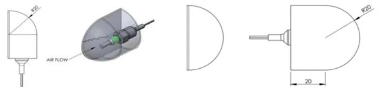
P.6413.14 燃料タンク室燃料タンク一式はサバイバルセルの中で以下の後方に配置しなければならない：
| テンプレートＨ３ | ドライバー座席および同乗者席 |
このコンパートメント（格納室）はコックピットと完全に密閉されていなければならず、燃料セルと燃料ラインをコックピットおよびエンジン室から隔てる耐火性隔壁がなければならない。防火隔壁に開ける穴は、コントロールやケーブルを通すのに必要な最小限の大きさとし、完全に密閉しなければならない。使用可能な燃料タンクの最小容積は、ル・マン・サーキットを１２周できるものでなければならない。13.15 燃料流量計の設置容積13.15.1 衝突時に危険のない位置に燃料流量計を設置するために、最小寸法の容積を設けなければなられない。設置容積の寸法がどのようなものであっても、第１３条１５.２および第１３条１５.３は常に満たされなければなられない。13.15.2 この装備は、故障の際に個別に迅速に交換できるものでなければならない。ＦＩＡ／ＡＣＯの判断により、走行セッション（レースを含む）中の交換が求められることもある。13.15.3 この装置は、大気と同じくらいの温度を提供するために、車外から直接入り車外に出る空気によって換気されなければならない。燃料流量計本体の温度が記録される。13.16 ＥＳ格納器設置される場合、ＥＳは：
| テンプレートＨ３後方のサバイバルセ ルの中に配置されなければならない。 | ドライバーと同乗者座席の後方のサバ イバルセル中あるいはオリジナルの位 置に配置されなければならない。 |
ドライバーと同乗者座席の後方のサバイバルセル中あるいはオリジナルの位置に配置されなければならない。ＥＳはサバイバルセルの底部からアクセスできなければならない。この格納器は、コックピットおよび燃料タンク格納室と完全に密閉されていなければならない。ＥＳはＥＳクロージングパネルに固定または一体化されていること。このパネルはサバイバルセルに取り付けられ、ＥＳを十分に保護するものでなければならない。13.17 ＥＲＳ格納器設置される場合、ＥＲＳは：
| サバイバルセルの中に配置されなけれ ばならない。 | サバイバルセル中あるいはオリジナル の位置に配置されなければならない。 |
サバイバルセル中あるいはオリジナルの位置に配置されなければならない。この格納器は、コックピットから完全に密閉されていなければならない。コックピットとの分離パネルは取り外し可能であるが、１ｋＮの荷重に２ｍｍ未満の変形で
P.65耐えられなければならない。13.18 ＥＳからＥＲＳの格納器ＥＳからＥＲＳの格納器は、コックピットおよび燃料タンク格納室から完全に密閉されていなければならない。すべての分離パネルは、本規則の付則に記載されているＥＳ格納器の安全性テストに従ってテストされなければならない。13.19 サバイバルセルの識別すべてのサバイバルセルには、識別のために本規則の付則に記載された３つのトランスポンダを組み込まなければならない。これらのトランスポンダは、サバイバルセルの恒久的な部分であり、いつでも確認できるように、以下のような位置に設置しなければならない（±６０ｍｍ）： ａ）サバイバルセルの上部で、フロントアクスルと一致し、車両中心線上。ｂ）コックピット内の左側で、ドア開口部の最前点に合わせ、ドア開口部の底面から１００ｍｍの位置。ｃ）コックピット内の右側で、ドア開口部の最前点に合わせ、ドア開口部の底面から１００ｍｍの位置。13.20 サバイバルセルの特性13.20.1 サバイバルセルの最小重量は、付則３に記載されている重量ペリメーターを考慮して、９０ｋｇとする。13.20.2 上記条件でのサバイバルセルのＣｏＧ高さの最小値は、Ｚｒｅｆ面上方３７ ０ｍｍである。第１４条 安全装置14.1 一般一般的原則として、車両が安全な構造であることを実証するのは製造者および／あるいは競技参加者の責任である。ドライバーが運転席に完全に座っていないときには、車両の動力的な動きを防止する装置がなければならない。安全のためのスイッチや押しボタンのレバーを、いかなる種類の粘着性タイプで覆うことは厳禁とされる。14.2 消火器
14.2.1 すべての車両には、ＦＩＡ基準８８６５－２０１５に従った消火装置が装備
P.66されていなければならない。このシステムは、製造者の指示とテクニカルリストＮｏ．５２に従い、起動の手段を除き、付則Ｊ項第２５３条７.２に従って使用しなければならない。ハイブリッド車の場合は、以下の消火剤のみが許可される：Novec 1230またはFX G-TEC FE36。14.2.2 車両の主要電気回路に故障が生じた場合でも、すべての消火システムを作動させることができるならば、システム自体に動力源を有する放出起動システムが許される。ドライバーが、安全ベルトを装着し、ステアリングホイールをつけ運転席に通常に着座した 状態で消火システムを手動により起動させることができなければならない。さらに、外部起動システムは、第１４条１６に記述されるサーキットブレーカースイッチに組み込まれていなければならない。それらは、最低線幅４ｍ ｍで赤く縁取られた最低直径１００ｍｍの白色の円形内に、最低高さ８０ｍ ｍで最低線幅８ｍｍの“Ｅ”の文字を赤で描いたマークで表示されなければならない。その識別は輝度反射特性でなければならない。
２つの外部の消火器スイッチがなければならない。それらは： 車両の左右に１つずつ、車両中心線に左右対称に、Ｚダッシュボード＋４ ０ｍｍの下の線の下方で、Ａピラーの前方で、サバイバルセルに固定して配置されなければならない。 ドア開口部から３５０ｍｍ未満でなければならない。 マーシャルが偶発的にパワー回路に電圧を再び加えることが出来ないように設計されなければならない。 離れた位置からフックにより操作できる水平なハンドルあるいはリングが
取り付けられなければならない。14.2.3 すべての消火ノズルはドライバーに直接向けられないように取り付けられていなければならない。14.3 ドライバーマスタースイッチ
14.3.1 ドライバーは、安全ベルトを装着し、ステアリングホイールをつけ運転席に着座した状態で放電防止つきサーキットブレーカースイッチを操作することによって、イグニッション、すべての燃料ポンプおよびＥＲＳシステムへの電気回路を遮断できなければならない。このスイッチはダッシュボード上に設けなければならず、白い縁取りをした青の三角形の中に赤のスパークを描いた標識で表示されていなければならない。操作方法は付則Ｊ項第２５３条１８.１６（＂クリープ ＂コントロールを除く）および第１０図に規定されている。
P.67第１０図は例示のためのものであり、詳細やレイアウトは競技参加者の自由であるが、以下の電気的状態が可能でなければならない。Ｐ０－すべての車両の電源がオフＰ１－主電源は供給されているが、車両は動けない（ＥＳおよびエンジンに電源が供給されていない）。Ｐ２－車両は動くことができる（フロントとリアのデイライト・ポジション・
ライトが点灯している）。14.4 後方視界ミラー
14.4.1 すべての車両はドライバーが後方および車両の左右に視界を得るよう２つのミラーが取り付けられていなければならない。14.4.2 各ミラー反射面の最小面積は１００ｃｍ２
14.4.3 ＦＩＡ／ＡＣＯテクニカルデリゲートは、正常に着座したドライバーが後続車を明らかに確認できることを、実証テスト証明により確認しなければならない。この目的ために、ドライバーは、以下に位置が詳述される車両後方に置かれたボード上のどこかに置かれる高さ７５ｍｍ幅５０ｍｍの文字または数字を識別するよう求められる：高さ : 地面より４００ｍｍ～１０００ｍｍ幅 :車両中心線の何れかの側０ｍから５０００ｍｍ後方視界カメラを０ｍ～２０００ｍｍの間で使用することが認められる。位置 : 車両のリアホイール中心線後方５ｍ
14.4.4 リアビューミラーには昼間／夜間モードがなければならない。ミラーにフィルムを追加することでそれを実施できる。14.4.5 後方視界カメラシステムの使用が義務付けられている。カメラは車両の公認の際に特別な許可が与えられていることを条件に車両の最大高を超えることが認められる。それらの設計の目的は、空力的利益を生むものであってはならない。後方視界カメラのディスプレイは、第１３条１１項２に従ってコックピットに設置しなければならな。その固定部は、あらゆる方向において最低２５Ｇの減速に耐えるものでなければならない。14.5 安全ベルト安全ベルトの取り付け位置は、スポーツカーの安全構造の承認手順に従って、ＦＩ Ａの承認を受けなければならない。ショルダーベルトの取り付け位置は、レース状態でドライバーが着座しているときに、水平方向に対して０〜５°（下方向）の推奨角度をベルトに与えるように取り付けなければならない。ボディワークのショルダーベルト固定部は、運転席の中心線に対して対称でなければならない。上から見たときのベルトの収束角度は約２０°～２５°で、決して１
P.68０°～２５°の範囲を超えないようにすることが推奨される。ＦＩＡ基準８８５３－２０１６（テクニカルリストＮｏ．５７）に準拠した安全ベルトの着用が義務付けられている。ストラップは車両にしっかりと固定されていなければならない。付則Ｊ項第２５３条６.３に従い、安全ベルトのキットを１つ使用しなければならない。14.6 コクピット頭部パッド
14.6.1 すべての車両には、ドライバーの頭を保護するパッドのエリアを設けなければならない。ａ）第１４Ａ図の寸法を遵守しなければならない。ｂ）下側の水平面がＺｒｅｆ平面から５６５ｍｍの位置になければならない。
| 下側の水平面がＺｒｅｆ平面から ５６５ｍｍの位置になければなら ない。 |
ｃ）座席の中央に配置されていなければならない。ｄ）３つの部分（運転席ドア、運転席後ろで最後部サイド、最前部サイド）に分けて車両から取り出せるようになっていること。ｅ）ヘッドレストの後部は、２つの水平なペグと２つのクイックリリース固定具で固定されていなければならず、これらは明確に表示されており、工具なしで簡単に取り外すことができなければならない。テープあるいは類似の素材でヘッドレストの固定具を覆うことはできない。ｆ）ＦＩＡテクニカルリストＮｏ．１７（スポーツカー用のヘッドレスト素材）の仕様に応じた素材で製作されていること。ｇ）ドライバーの頭部が接触する可能性のあるすべての領域にわたり、重量で５０％（±５％）の硬化樹脂含有量のある、２層とも６０ｇ／ｍ２の織物から成るなる、あるいは１層が６０ｇ／ｍ２で１層が１７０ｇ／ｍ２の織物から成る平織構造の、２積層アラミド繊維／エポキシ樹脂複合基材プリプレグ材質により作られたカバーが装着されていること。ｈ）アラミドカバーの表面加工は、ヘルメットの接触表面上の塗装および追加の噴射スプレー塗装以外一切認められない。使用済みの製品は、ヘルメットとの接触する際に表面の摩擦を最小限にできるものでなければならない。ｉ）すべての部品の間で、素材の不連続域が２０ｍｍをこえてはならない（部品、ドアの取り外し）ｊ）前頭部拘束装置のための凹みがあってはならない。ｋ）助手席側の側面部分を可動式に設計する必要がある場合は、保護装置が完全に安全でロックされた位置にない限り、ＩＣＥや動力源となる電気モーターの起動を禁止する少なくとも１つの近接センサーが必須となる。ｌ）スポーツカーの安全構造の承認手順に従って、ＦＩＡの承認を受けなけ
ればならない。予定された試験日より、最低でも８週間前の通知がなされる。14.6.2 ドライバーの頭部を支えるヘッドレストの最初の部分は、ドライバーの後ろに位置し、厚さは８５ｍｍでなければならない。必要に応じて、ドライバーの快適性のためにのみ、同じ素材で低摩擦表面を持つものであることを条件
P.69に、厚さ１０ｍｍ以下のパッドを追加してこのヘッドレストに取り付けることができる。14.6.3 ドライバーの頭部のための２つ目のパッドのエリアは、両側に配置され、厚さは８５ｍｍでなければならない。必要に応じて、ドライバーの快適性のためにのみ、同じ素材で低摩擦表面を持つものであることを条件に、厚さ２０ ｍｍ以下の追加のパッドをこのヘッドレストに取り付けることができる。さらに、これらのパッドの領域と第１４条６．２に記載された領域との間の空隙も、同じ素材で完全に埋めなければならない。前方の横方向の部分の適応は、＂ゾーン・アーム（ＺＯＮＥ ＡＲＭ）＂（第１４Ａ図）に記載されている領域で認められるが、垂直横方向の断面では最低１５００ｍｍ²の面積が遵守されることを条件とする。14.6.4 上記のすべてのパッドは、事故の際に予想される軌道でドライバーの頭部が動き、発泡フォームがどこかで完全に圧縮されても、ドライバーのヘルメットが車両の構造部分に接触しないように取り付けられていなければならない。14.7 コクピット脚部パッド
14.7.1 車両には、衝突時にドライバーの脚部が負傷するリスクを最小限にするため、ドライバーの足の左右と上部に脚部保護パッドが取り付けられていなければならない。ドライバー側の垂直横方向の断面は、第１３Ａ図が遵守されなければならない。14.7.2 これらのパッド領域は： ａ）ＦＩＡテクニカルリストＮｏ．１７（スポーツカーのヘッドレスト素材）に掲載されている素材でパッド付けしなければならない。ｂ）パッドの最小厚さは２５ｍｍが全体の領域になければならない。ｃ）ペダル（フットパッド）の最後部から後方１００ｍｍと、第１３条４に記載されているステアリングホイール基準から前方１５０ｍｍの間で延長していなければならない。ｄ）第１３条６.１に規定の高さをカバーしなければならない。ｅ）直径１００ｍｍの半球状のパッドによって、エリアの中心で自由な脚部
空間容積から外側に向かってＹ軸方向にかけられた７ＫＮの荷重を支えなければならない。コックピットの脚部パッドの局所的変更および／あるいはトリミングは、ＦＩＡ／ＡＣＯの承認を得ることを条件に許可される場合がある。14.8 ホイールの保持ナットの自動安全保持を提供するホイール保持システムが装備されなければならない。製造者はそのシステムの堅牢性を証明しなければならない。保持機構は、公称締め付けトルクの３０％の静的緩みトルクに耐えなければならない。この機構は、公認手続き中の静的テストに合格しなければならない。
P.7014.9 ホイールテザー（拘束ケーブル）
14.9.1 ホイールと車両との結合を保つすべてのサスペンション連結部が破損した際にホイールが車両から外れるのを防ぐために、ホイール拘束ケーブルが収容できるよう対策が取られなければならない。このホイール拘束ケーブルの目的は、ホイールが車両から離れるのを防ぐためだけであり、それ以外の機能がないこと。14.9.2 それらの拘束ケーブルおよびその取り付け部も、事故の際のホイールとドライバー頭部との接触防止に役立つように設計されていなければならない。14.9.3 各ホイールには、２本の拘束ケーブルが取り付けられていなければならない。各テザーは以下に従って公認されなければならない： ２０２６年末まで許可： ＦＩＡ基準８８６４－２０１３（ＦＩＡテクニカルリストＮｏ.３７）。最小長４００ｍｍを有し、最初の４００ｍｍの変位において少なくとも８ｋ Ｊのエネルギー吸収能力を持つこと。 ２０２６年は推奨、２０２７年からは義務化： ＦＩＡ基準８８６４－２０２２（ＦＩＡテクニカルリストＮｏ.９３）。当該モデルの長さ区分（公認に基づく）に適合し、少なくとも７ｋＪのエネルギー吸収能力を持ち、かつ公認時のピーク荷重が８０ｋＮ以下であること。採用する基準は、車両上のすべてのテザーにおいて統一されていなければならない。14.9.4 各拘束ケーブルの両端部には、以下のそれぞれ別個の取り付け部を有していなければならない。 当該サスペンションメンバーの負荷ラインから計測し、４５°の円錐形（狭角）以内でいずれの方向にも、８０kNの最低引っ張り強度に耐え得ること； サバイバルセル上あるいはギアボックス上で、２つの取り付け部の中心で計測して少なくとも１００ｍｍ離れていること； ホイール軸に関して少なくとも９０°放射状に離れ、各ホイール／アップライト組み立て上で、２つの取り付け部の中心の間で計測して少なくとも１００ｍｍ離れていること； ＦＩＡ基準８８６４－２０１３に準拠する場合は、ケーブルの公認ラベル
の表示に従う最小内径の、またはＦＩＡ基準８８６４－２０２２に準拠する場合は１５ｍｍに相当する最小内径の拘束ケーブル端部の取り付け具に適合できること。14.9.5 さらに、サスペンションメンバーは、１本を超える拘束ケーブルを含むことはできない。14.10 座席ドライバーの側方および背側のサポートは座席によって達成されなければならず、サポートの基本領域は第１４－Ｂ図の寸法が遵守されなければならない。ショルダーサポートの上面は水平で、Ｚｒｅｆ平面から５３０ｍｍの位置になければならな
P.71い。背側サポートの形状は、背骨のＬ１に接する角度が５５°になるようにすることが推奨される。側面および背側のボディサポートは、スポーツカーの安全構造の承認手順に従って、ＦＩＡの承認を受けなければならない。予定された試験日より、最低でも８週間前の通知がなされる。座席の挿入物は、ＦＩＡテクニカルリストＮｏ.５０に掲載されている素材を使用しなければならない。14.11 前頭部支持体ドライバーが装着する前頭部支持体は、通常の運転位置に着座した状態で、車両のいかなる構造体部分からも２５mm未満の所にあってはならない。14.12 牽引フック前後の牽引フックは以下の通りでなければならない： 温度が常に５０°未満になるように設計されていなければならない。 堅牢で鉄製であり、破損の可能性のない内径８０ｍｍ～１００ｍｍ厚さが最低５ ｍｍであること（マーシャルの使用するストラップを切断したり損傷することのないよう丸みを帯びた断面）。 金属製の堅牢な１つの部品でシャシー／構造体に確実に固定されていること（ケーブルフープは認められない）。 上から見てボディワークの外周辺の内側にあること。 外側から見え、容易に確認でき、黄色、赤色あるいはオレンジ色に塗装されていること。また、ボディワークには、フックのどの部分を掴むかを示す矢印（シグナルカラーであるか、輝度反射特性のもの）がなければならない。 グラベルベッドに停止した車両を牽引できること。牽引フックがボディワークに統合されている場合、グローブをはめたマーシャルがそれらを引き出すためのテープ/ハンドルがなければならない。このテープ/ハンドルはシグナルカラーでなければならない。牽引フックを覆うカバーは厳禁とされる。14.13 車両を吊り上げる装置車両をクレーンで吊り上げるために、車両頂部に２箇所の固定点を設置することが義務付けられる。これらの固定点は、車両の頂部構造体に統合された２つの吊り上げ用ブッシュでなければならない（テクニカルリストＮｏ.１０４参照）。それらにより、車両を地上１.５ｍの高さに安全に吊り上げることができなければならない。燃料タンク半量を満たした完全な状態での車両の角度は（吊り上げられた時に）２ ５度未満でなければならない。ブッシュは利用しやすい位置にあり、特別なマーキングで示されていなければならない。 開口部周囲を５ｍｍ厚みの円でマーキング（シグナルカラーであるか、輝度反射特性のもの）されていなければならない。ブッシュが横から見て見えない場合、横から見えるように（片側に１つの）矢印（シグナルカラーであるか、輝度反射特性のもの）が利用されなければならない。
P.72 開口部域は、吊り上げピンを挿入する必要がある場合、それの障害とならないよ
う、本コースからの破片飛散の危険性に備えて覆われていなければならない。覆いとなるステッカーは、グローブをしたマーシャルが容易に剥がすことができ、正確で完全な吊り上げピンの挿入ができるようなものである必要がある。堅牢なカバーは一切禁止される。14.14 一般電気安全仕様は付則Ｊ項第２５３条１８.１（１８.１.ｆを除く）に定められている。車両側の最大ピーク電圧は、ＭＧＵのフェーズケーブルを除き、１０００Ｖを超えてはならない。14.15 電子制御装置ＥＣＵは、第８条３.２に規定されているように、補機用バッテリーで供給される車両供給システムから、補助回路を介して動作するように設計されなければならない。14.16 総合サーキットブレーカー仕様は付則Ｊ項第２５３条１８項（１８.１７.ｃ）－ｄ）－ｆ）を除く）に定められている。一般的なスイッチング図は，第１０図を参照のこと。すべての車両には、安全ベルトを締め、ステアリングホイールを固定して、通常の真っすぐな姿勢で座っているドライバーが、運転席から起動ボタンで容易に操作でき、かつ外部からすべての電気伝達装置を遮断できる、十分な容量を持った総合サーキットブレーカーを装備しなければならない。14.16.1 ニュートラルと総合サーキットブレーカースイッチ外部のニュートラル・スイッチと総合サーキットブレーカー・スイッチ（第１４条１６による）は、マーシャルが外部からクラッチを切り、すべての電気機器のスイッチを切ることができるように、１つのスイッチに結合されていなければならない。それらは、以下のようにしなければならない： ａ）２つの同一のスイッチが車両の両側に、車両中心線に左右対称に配置され、ｚダッシュボード＋４０ｍｍの下の線より下で、Ａピラーの前のサバイバルセルに固定されなければならない。ｂ）ドア開口部より３５０ｍｍ未満でなければならない。ｃ）第１４条２.２に規定される消火器スイッチから７０ｍｍ未満となるように。ｄ）プッシュボタンあるいはレバーと共に取り付ける。ｅ）上記に定められた装置によりｆ）車両内部のすべての電気回路（補助およびパワー回路）を切りESをパワー回路から絶縁できること。ｇ）マーシャルが偶発的にパワー回路に電圧を再び加えることが出来ないように設計されること。ｈ）それらのスイッチは以下のように輝度反射特性を有した２枚のステッカ
P.73ーで示されなければならない： － 白い縁取りをした青色の正三角形の中に赤色の稲妻を描いた標識。三角形は矢印がボタンを指し示すような角度でなければならない。－ 直径が最低５０ｍｍの、少なくとも２ｍｍの幅で青く縁取られた白い円の内側に、少なくとも４０ｍｍの高さで線の幅が最低４ｍｍの“Ｎ”の文字を青で書いたマークで表示しなければならない。－ 両方の標識は高さは最低でも１００ｍｍなければならない。このスイッチ／ボタンを覆うことは一切できない。
衝突時には、電源回路のすべてのエネルギー源が電気スイッチやコンタクタによって自動的にオフになり、ＥＳ全体が絶縁されていなければならない。これらの配置は、公認で提出された故障モード解析によって検証されなければならない。一般的な仕様は、付則Ｊ項第２５１条３.１.１４. １.ｃおよび第２５３条１８.１８条に規定されている。14.17 ケーブル、配線および電気装置仕様は付則Ｊ項第２５３条に記載されている（第１８条２項ａは適用せず）。ブレーキ配線、電気ケーブルおよび電気装置は、ボディワーク外部に取り付けられる場合は、一切の損傷の危険性（石、腐食、機械的破損など）から、またボディワーク内に取り付けられる場合は、火災および電気的衝撃の一切の危険から保護されなければならない。６０Ｖ超の電圧を使用する電気ケーブルはすべて、サバイバルセル基準面上のＸ／ Ｙ面内に設置しなければならない。14.18 電気ショックからの保護保護は、付則Ｊ項第２５３条１８.７（第２５３条１８.７.ｅを除く）に従って保証されなければならない。14.19 等電位結合高電圧が車両の低電圧システムにＡＣ結合される故障モードを軽減するために、ボディワークのすべての主要な導電性部品は、適切な寸法のワイヤまたは導電性部品で車両のシャシーに等電位で結合されていることが義務付けられる。付則Ｊ項第２ ５３条１８.８を参照のこと。14.20 絶縁抵抗要件すべての電気的活電部品は、付則Ｊ項第２５３条１８．９に記載されているように、
P.74偶発的な接触から保護されなければならない。14.21 ＡＣ回路の追加の保護策追加の保護手段は、付則Ｊ項第２５３条１８.９.１条に定められている。14.22 シャシーと電源回路の絶縁監視絶縁監視システムを使用して、電圧クラスＢシステムとシャシー間の絶縁バリアの状態を監視しなければならない。仕様は付則Ｊ項第２５３条１８.１０に記載されている。14.23 電力回路（パワーサーキット）電力回路の仕様は付則Ｊ項第２５３条１８.１１に規定されている。14.24 パワーバス仕様は付則Ｊ項第２５３条１８.１２に規定されている。14.25 電力回路配線電力回路は、ＥＳ、駆動モーター（含複数）のコンバーター（チョッパー）、総合サーキットブレーカーのコンタクタ（含複数）、ヒューズ、発電機（含複数）および駆動モーター（含複数）から成る。すべてのケーブルおよび配線の仕様は付則Ｊ項第２５３条１８.１３に規定されている。14.26 電力回路連結部および自動分離電源回路の連結部は、正しく接合されていない限り、プラグとリセプタクルのいずれにも活電接触があってはならない。仕様は付則Ｊ項第２５３条１８.１４に定められている。電力回路連結部の環境シールは、少なくとも標準に対応していなければならない。 接合状態でＩＰ５５。 切断された状態ではＩＰ２Ｘ。14.27 ケーブルの絶縁力すべての電気部品は、付則Ｊ項第２５３条１８.１５に従って、偶発的な接触から保護しなければならない。14.28 過電流トリップ（ヒューズ）ヒューズおよびサーキットブレーカー（これは決してモーターサーキットブレーカーではない）は過電流トリップ装置とみなされる。追加の速断電子回路ヒューズお
P.75よび速断ヒューズは適切である。過電流トリップは付則Ｊ項第２５３条１８.１９に定められている。14.29 安全インジケーター付則Ｊ項第２５３条１８．２２に記載されている仕様が適用される。すべてのインジケーターは、視野角が１２０°以上で、光束が８ルーメン以上でなければならない。装着が義務付けられている安全ライトの詳細は、ＦＩＡテクニカルリストＮｏ.４ ６に記載されている。ａ）ＥＳ安全ライトＥＳシステムを搭載するすべての車両は、ＦＩＡ／ＡＣＯのＥＳ安全ライトを装着しなければならない。これらは以下の通りでなければならない： － 競技会期間中、車両の主要な油圧または空気圧装置が故障していても、正常に作動すること。－ 次のように配置され、公認された位置にあること： ダッシュボード上では、チームによって指定され、調達された、１つの緑色の表示灯（二重の冗長性をもったライトで成る）と１つの赤色の表示灯（二重の冗長性をもったライトで成る）。ダッシュボード表示灯（含複数）は２つの明度（夜間および昼間）を提供できる。 車両の両側にある２つのニュートラルと総合サーキットブレーカースイッチの近くでは、ＦＩＡ／ＡＣＯのＥＳ安全ライトが義務付けられている。このライトは、ＦＩＡテクニカルリストＮｏ．４６に詳細が記載されており、ＥＳ安全ライト（赤と緑）と衝撃警告ライト（青）が含まれている（第１４条３３）。－ 総合サーキットブレーカーが作動した後、少なくとも１５分間は電源が入っていること。－ 「ＨＩＧＨ ＶＯＬＴＡＧＥ」のシンボルマークが付いていること。
| ＥＲＳライト状況 | ＥＲＳ状況 |
|---|---|
| 緑色 | 安全 |
| 赤色が３Ｈｚで点滅 | 危険（システム不良） |
| 赤色が３Ｈｚで２秒間点滅し、 その後消灯 | システム起動、 アイソレーションセルフチェック |
システム起動、アイソレーションセルフチェック
ｂ）走行準備完了ライト
スロットルペダルを踏むと車両が動くことを示すために、車両のフロントデイライトとリアポジションライトを点灯させなければならない。システムへの通電要求時にバス電圧が５０Ｖを超えていない場合は、０.５秒「オン」し、０.５秒「オフ」しなければならない。
| 位置 | フロントデイライトおよびリアポジションライト | ||
| しきい値 | オン時間 | オフ時間 | |
| P2で | |||
| 車両静止 | 常にオン | ||
| カー・オン・トルク | 常にオン | ||
| P1からP2への切り替え | <50V | 500ms | 500ms |
| P2からP1への切り替え | オフ | ||
| P2からP1への切り替え | 50ms | 2000ms |
P2からP1への切り替え50ms 2000ms 14.30 充電ユニット充電ユニットは、１８.２０.ａ）（外部または内部充電ユニット）を除き、付則Ｊ項第２５３条１８.２０に定められた要件を満たさなければならない。競技参加者は、最初の競技会の３ヶ月前に、充電ユニットに関する技術および安全に関する関連文書をＦＩＡ／ＡＣＯに提出しなければならない。14.31 バッテリーマネージメントシステムリチウムバッテリーの場合は、温度、電流、電圧を管理し、故障時にはすべての負荷を絶縁することが必須である。14.32 事故データ記録装置（ＡＤＲ）および高速事故カメラ事故データ記録装置（ＡＤＲ）および高速事故カメラの使用が義務付けられ、ＦＩ Ａの指示に従って取り付けられ運用されなければならない（付則参照）。14.33 衝撃警告ライト救助隊に事故損傷度を即座に知らせるために、各車両にはＦＩＡ／ＡＣＯデータロガーに接続された２つの警告灯を取り付けなければならない。これらは、ＥＳ安全ライト・モジュールの一部でなければならず、第８条８に記載されているように取り付けなければならない。第１５条 安全構造体15.1 ロールオーバー構造体
15.1.1 一般規則２つの安全ロールオーバー構造体（前部および後部）が義務付けられる。それらは以下の通りでなければならない :
| 前部では幅最低３００ｍｍに渡 って基準面上方に少なくとも９ ５０ｍｍで、後部では幅最低４０ ０ｍｍに渡って基準面上方に少 なくとも９３５ｍｍであること。 最低６００ｍｍ離れていること。 車両の前後方向垂直面に対して 左右対称であること。 | レースのために必要な改造や本規則 への準拠のための改造を除き、車両 のサバイバルセルは、本技術規則の すべての制約を遵守する以外に、オ リジナルのサバイバルセルカーを踏 襲しなければならない。 プロトタイプカーに設定された最低 限の安全要件を満たすために、オリ ジナルの構造に変更を加えること は、ＦＩＡ／ＡＣＯの承認を得るこ とを条件に許可される。 |
P.7715.1.2 後部ロールオーバー構造体 サバイバルセルの形状がどのようなものであっても、後部ロールオーバー構造の上部からサバイバルセルの最後部の面まで、構造的なリンクがなければならない。以下の通りでなければならない。 サバイバルセルの取り付け部の
| サバイバルセルの取り付け部の 高さにおいて計測し、全長が最低 ４００ｍｍであること（つまり、 サバイバルセル基準面から最低 ５００ｍｍ）。 エンジンブロック、シリンダーヘ ッド、カムカバーの部分およびサ バイバルセルに挿入されたエン ジン固定部の目に見える要素は 一切、後部ロールオーバー構造体 の前部垂直面から４００ｍｍ未 満の距離にあることは認められ ない。 ロールオーバー構造体は、車両を 直接上から見た時に、また横から 見た時に、エンジン（エンジンブ ロックおよびシリンダーヘッド） のどの部分をも遮ってはならな い。 | |
| 後部リアロールオーバー構造の 垂直な前面は、Ｘ方向の基準面 （Ｘｒｅｆ）とみなされる。これ は、ドライバーと同乗者側のコ ックピット全体に伸張し、Ｚ５ ００以上の高さでなければなら ない。 | 後部リアロールオーバー構造の 垂直な前面は、Ｘ方向の基準面 （Ｘｒｅｆ）とみなされる。 |
| サバイバルセルの後面は、Ｘｒｅ ｆから最小４００ｍｍの位置で １８０,０００ｍｍ²以上の面積が なければならない。 |
15.1.3 ロールオーバー構造体の承認各ロールオーバー構造体は、スポーツカーの安全構造体の承認手順に従い、ＦＩＡによって承認されなければならない。15.2 サバイバルセル15.2.1 一般規定サバイバルセルの上部には、コックピットとボディワーク上部に設置された必須の公式装備との間でケーブルを通すための２５ｍｍの穴が義務付けられる。
| シャシー構造体は、モノブロックお | シャシー構造体は、燃料タンク、ＥＳ |
| よび燃料タンク、ＥＳを含む連続し たサバイバルセルを含み、ドライバ ーの足の少なくとも３００ｍｍ前の 垂直面から（第１３条３に規定され る通り）Ｘｒｅｆの後方４００ｍｍ のところへ伸張していなければなら ない。 サバイバルセルは、サバイバルセル 基準面からコクピット出入り部全長 に沿って最低５００ｍｍの高さで側 方保護を提供していなければならな い。 | を含むサバイバルセルを含み、ドラ イバーの足の少なくとも３００ｍｍ 前の垂直面から（第１３条３に規定 される通り）Ｘｒｅｆの後方へ伸張 していなければならない。 レースのために必要であるか、本規 則への準拠のために必要な局所的改 造を除き、車両のサバイバルセルは、 本技術規則のすべての制約を遵守す る以外に、オリジナルのサバイバル セルカーを踏襲しなければならな い。 プロトタイプカーに設定された最低 限の安全要件を満たすために、オリ ジナルの構造に変更を加えること は、ＦＩＡ／ＡＣＯの承認を得るこ とを条件に許可される。 |
プロトタイプカーに設定された最低限の安全要件を満たすために、オリジナルの構造に変更を加えることは、ＦＩＡ／ＡＣＯの承認を得ることを条件に許可される。第１５条２.２および第１５条２.３で定義されたすべての保護体は，安全構造の承認のためにサバイバルセルに接合されてはならない。
15.2.2 補助パネル：脚部テンプレート、ドライバーと同乗者ボディのテンプレート補助パネル１枚は、適切な接着剤（付則５の仕様）でサバイバルセルに恒久的に取り付けられていなければならず、その接着剤はすべての重なり合う接合部を含む全面に塗布されていなければならない。最大３つのパーツで構成されており、その構造は付則５の仕様に準拠していなければならない。複数のパーツで構成されている場合は、隣接するすべてのパーツが最低２５ｍｍ重なり合っていなければならない。この重なりには、両方のパーツの厚みに線形逓減があってもよい。
| それは横方向から見た場合、以下の 通りでなければならない： Ｘ軸方向で、ドライバーの脚用の 容積（第１３条６項に定める）の 最前点前部平面との間にある領 域を、Ｘｒｅｆの面まで車両中心 線に対称に覆う。２５ｍｍの水平 線形逓減部を両端に含めること ができる。 Ｚ軸方向で、ステアリングホイー ルとドライバーの脚用と同乗者 の脚用の容積（第１３条６項に定 める）の底面から上面まで伸張し ていなければならない。それは脚 用テンプレート後部とＸｒｅｆ 面との間でＺ５０からＺ４５０ まで伸張していなければならな い。 |
P.79配線の穴および必須の取り付け具のため、片側で合計２５,０００ｍｍ2の切抜き部をこのパネルに作ることが許される。
15.2.3 補助パネル － 燃料タンク／ＥＳ補助パネル１枚は、適切な接着剤（付則５の仕様）でサバイバルセルに恒久的に取り付けられていなければならず、その接着剤はすべての重なり合う接合部を含む全面に塗布されていなければならない。最大３つのパーツで構成されており、その構造は付則５の仕様に準拠していなければならない。複数のパーツで構成されている場合は、隣接するすべてのパーツが最低２５ｍｍ重なり合っていなければならない。この重なりには、両方のパーツの厚みに線形逓減があってもよい。
| それは横方向から見た場合、以下の 通りでなければならない： Ｘ軸方向に、Ｘｒｅｆ面からＸｒ ｅｆ面の４００ｍｍ以上後方（サ バイバルセルの後面）までの範囲 を覆っていなければならない。 Ｚ軸方向で、Ｚ１００面とＺ４５ ０面の間の領域を覆っていなけ ればならない。 |
２５ｍｍの水平線形逓減部を前端に含めることができる。配線用の穴、ＥＳ換気用孔、および必須の取り付け具のため、片側で合計２ ０,０００ｍｍ２の切抜き部をこのパネルに作ることが許される。第１５条２.２および第１５条２.３に記載されている補助パネルは、１つの部品から作ることができる。
15.2.4 サバイバルセルの承認サバイバルセルは、本技術規定付則に定めるスポーツカーの安全構造体の承認手順に従い、ＦＩＡによって承認されなければならない。予定される試験実施日の遅くとも８週間前に通知される。15.3 前方衝撃吸収構造体 － ＦＩＡＳ
15.3.1 一般規定サバイバルセルの前方にはＦＩＡＳの取り付けがなければならない。この構造体はサバイバルセルに統合され一体となる必要はないが、最大４カ所の固定部でセルに確実に固定されていなければならない。この構造体の設計は自由であるが、以下の点を満たさなければならない： 最前方からそれぞれ１５０ｍｍと４５０ｍｍ後方の位置にある２つの垂直および横断面の間の構造体外側の各断面には、２４０００ｍｍ²の長方形の断面を収めることができ、水平方向と垂直方向の寸法がともに８０ｍｍ以上でなければならない。 最も前方の点から４５０ｍｍ後方の位置にある垂直および横断面の前方で
は、完全な衝撃吸収構造が基準面から上方１５０ｍｍから５００ｍｍの間になければならない。
P.8015.3.2 承認ＦＩＡＳは、スポーツカーの安全構造体の承認手順に従い、ＦＩＡによって承認されなければならない。 予定される試験実施日の遅くとも８週間前に通知される。15.4 後部衝撃吸収構造体 － ＲＩＡＳ
15.4.1 一般規定ＲＩＡＳは、車両中心線に対して対称的にギアボックスの後ろに取り付けられていなければならず、ボディワークの最後部から２００ｍｍ以内の位置になければならない。後部衝撃吸収構造の最後部の垂直かつ横方向の面の周囲は、高さ１００ｍｍ以上、幅１３０ｍｍ以上の連続した閉じた断面を形成していなければならない。この高さ１００ｍｍ、幅１３０ｍｍの長方形の部分の中心は、Ｚ２５０面とＺ３００面の間になければならない。最後方の面の外周を３００ｍｍの長さに渡って前方に向かって純粋に前後方向に押し出すことは、後部衝撃吸収構造の最も外側の面から突出しないこと。この構造体はボディワークの構成要素と見なされる。この構造体は、使用中想定される温度に大きく影響を被ることのない材質で製作されていなければならない。この構造体に追加して取り付けが認められる構成要素は唯一、リアウイングピラー、ジャッキ、牽引フック、エンジンカバーおよび床および／あるいはリアディフューザーである。15.4.2 承認ＲＩＡＳは、スポーツカーの安全構造承認手順に従い、ＦＩＡによって承認されなければならない。 予定される試験日程の少なくとも８週間前に通知される。15.5 改造ＦＩＡに承認された安全構造体についての一切の改造は、ＦＩＡ技術部に車両製造者が提出しなければならない。ＦＩＡ技術部は、改造の承認のために新規試験を受けることを要請する権限を留保する。第１６条 材質16.1 マグネシウム厚さ３ｍｍ未満のシート以外、マグネシウムは認められる。16.2 金属性材質車両のいかなる部品も４０ＧＰａ（ｇ／ｃｍ３）を上回る特定の弾性率を有する金属
P.81性材質で製作されていてはならない。規定への合致を確認するための試験がＦＩＡテスト手順０３／０３に従って実施される（技術規定付則参照）。第１７条 燃料17.1 燃料供給オーガナイザーが供給する燃料は１種類のみで、その化学組成に変更を加えることなくすべての車両に使用されなければならない。17.2 仕様
17.2.1 ガソリン仕様は問合せのこと。
17.2.2 その他の燃料その他の燃料の使用については、特別申請を耐久コミッティに提出し合意を得ること。第１８条 テレビカメラおよび計時トランスポンダー18.1 カメラおよびカメラハウジングの搭載すべての車両には、カメラあるいはカメラハウジングが、競技会期間中、常に搭載されていなければならない。テクニカルリストＮｏ.４６に準拠したカメラを後方に向けることが義務付けられる（付則参照）。その信号は公式テレビに接続される。18.2 トランスポンダーすべての車両は、正式に任命された計時員より供給されたタイム計測トランスポンダーを２つ搭載しなければならない。これらのトランスポンダーは本技術規則の付則に記載されている仕様に厳密に従い取り付けられなければならない。競技参加者はトランスポンダーが常に作動している状態を確実にするため最大の努力をしなければならない。フロントトランスポンダ（メイン）は、車両のフロントから１５８０＋／－５０ｍｍの位置になければならない。リアトランスポンダ（バックアップ）は、車両のフロントから３５５０＋／－１００ ｍｍの位置になければならない。第１９条 公認19.1 原則自動車製造者は、９つの選手権シーズン（２０２１年１月から２０２９年１２月ま
P.82で）に最大２台の車両を公認することができ、両方の公認が２０２９年１２月まで有効となる。
| ル・マン・ハイパーカーの公認を受ける ためには、最低２０台のオリジナル車両 が製造され、参戦する第１戦から２年間 にわたって公道公認（ＥＣＥ、ＤｏＴ、 またはそれに相当するもの）を受けなけ ればならない。 |
完全な公認は３つの部分から構成される。ａ）車両ｂ）エンジンｃ）ＥＲＳ 19.1.1 オリジナルの公認に対する修正は、以下の理由で行うことができる： ａ）安全性、信頼性、サービス性、商品化の終了、またはコスト削減ｂ）性能あるいはスタイリング19.1.2 安全性、信頼性、サービス性、商品化の終了、またはコスト削減のために要求される修正：変更の数に制限はないが、以下の手順に従わなければならない： 第１９条５.２に定めるカレンダーに従って要求されたもの。 適用される公認の手順に従うこと。 申請には、必要に応じて、レース中の故障の明確な証拠を含む、すべての必要な裏付け情報を提供しなければならない。 ＦＩＡ／ＡＣＯは、その絶対的な裁量により、これらの変更が容認可能であり、ＢｏＰプロセスに沿ったものであると判断した場合、当該製造者に変更の実施許可を確認する。19.1.3 パフォーマンスあるいはスタイリング上の理由で修正を要求された場合：以下の条件を満たさなければならない： ２０２１年１月から２０２７年１２月まで、異なる公認の数に関わらず、１つの製造者につき５つの進化追加公認（ＥＶＯジョーカー）を超えてはならない。 ２０２８年１月から２０２９年１２月までは、異なる公認の数に関わらず、製造者ごとに最大２つの進化追加公認（ＥＶＯジョーカー）が許可される。 許可される進化追加公認（ＥＶＯジョーカー）のうち、スタイリングに関連する進化追加公認は、２０２９年１２月まで製造者ごとに１つのみ許可される。 進化公認（ＥＶＯジョーカー）の制限は、統括団体が判断する性能不足にのみ基づくものとする。 統括団体が認める著しい性能不足が実証された場合、追加の進化公認（Ｅ ＶＯジョーカー）が認められることがある。 ＥＶＯジョーカーとは、該当する公認書式の各章のペリメーターにある修正に相当する。 第１９条６.２で定められたカレンダーに従って要求される。 適用される公認手順による。
P.83 申請書には、目標とする性能向上、その進化、および必要に応じて最新のデータシートなど、必要なすべての裏付け情報を提供しなければならない。 ＦＩＡ／ＡＣＯは、その絶対的な裁量により、これらの変更が容認可能で
あり、ＢｏＰプロセスに沿ったものであると判断した場合には、当該製造者に変更の実施許可を確認する。19.2 車両の公認
19.2.1 ２０２１年から２０２９年の間にＷＥＣの競技参加者が使用する車両を公認しようとする製造者は、第１９条５.１に定められたカレンダーに従って、Ｆ ＩＡ／ＡＣＯにシャシーの公認資料を提出しなければならない。
19.2.2 公認書類一式には以下が含まれなければならない： ＣＡＤ図面および本規則の付則で要求されるその他の文書公認書式（テンプレートは本規則の付則に記載されている）。
19.2.3 車両は、関連する製造者から完全な公認書類一式が提出され、ＦＩＡ／ＡＣ Ｏによって承認された時点で、当該競技参加者のために公認されたことになる。19.2.4 この公認は、９つの選手権シーズン（２０２１年１月から２０２９年１２月まで）に有効となる。19.2.5 製造者は、公認期間中に、第１９条１に従って、公認されたシャシーの改造を行うことをＦＩＡ／ＡＣＯに申請することができる。19.2.6 ２０２１年から２０２９年の間に車両を公認しようとする新規製造者は、第１９条２.１項および第１９条２.２項に基づく公認書類一式に加えて、第１ ９条５.１項に定めるカレンダーに従って車両の予備的な詳細をＦＩＡ／Ａ ＣＯに提供しなければならない。提出された車両を公認するためには、ＦＩ Ａ／ＡＣＯも、その絶対的な裁量により、そのような車両が他の公認された車両と公平かつ公正に競うことができると納得しなければならない。19.2.7 公認された車両の製造者および使用者は、競技会で使用される車両が対応する車両公認書類一式に適合していることを証明するために、ＦＩＡ／ＡＣＯの絶対的な裁量により、いつでも必要とされるあらゆる手段を講じなければならない。19.3 エンジンの公認19.3.1 ２０２１年から２０２９年の間にＷＥＣの競技参加者が使用するエンジンを公認しようとする製造者は、第１９条５.１に定められたカレンダーに従って、ＦＩＡ／ＡＣＯにエンジンの公認資料を提出しなければならない。
19.3.2 公認書類一式には以下が含まれなければならない： 特注エンジン：本規則付則２の該当表の"Engine
| 特注エンジン： 本規則付則２の該当表の"Engine | 本規則付則２の該当表の"Engine Homol."欄に"INC"と記載されている |
| Homol."欄に"INC"と記載されている 全ての部品の詳細。 「銘柄のエンジン」をベースにし たエンジン 本規則付則2 の該当表の"Engine Homol."欄に"INC"と記載されている 全ての部品の銘柄のエンジンの詳 細。 公認されたエンジンとベースエンジ ンの違いの詳細。 | 全ての部品のベースエンジンの詳 細。 公認されたエンジンとベースエンジ ンの違いの詳細。 |
詳細情報の内容は、ケースバイケースでＦＩＡ／ＡＣＯの合意を得る。その内容は、ＣＡＤファイル、２Ｄ図面、および／あるいは部品預託のいずれかとなる。公認書式のテンプレートは、本規則の付則に記載されている。
19.3.3 エンジンは、製造者から完全な公認書類一式が提出され、ＦＩＡ／ＡＣＯによって承認された時点で、当該競技参加者のために公認されたことになる。19.3.4 この公認は、５つの選手権シーズン（２０２１年１月から２０２９年１２月まで）に有効となる。
19.3.5 各製造者は、供給しようとする競技参加者ごとに、公認書類一式を提出しなければならない。公認書類一式は、競技参加者１名につき１つとする。
19.3.6 製造者は、公認期間中に、第１９条１に従って、公認されたエンジンの改造を行うことをＦＩＡ／ＡＣＯに申請することができる。
19.3.7 ２０２１年から２０２９年の間にエンジンを公認しようとする新規エンジン製造者は、第１９条３.１項および第１９条３.２項に基づく公認書類一式に加えて、第１９条５.１項に定めるカレンダーに従ってエンジンの予備的な詳細をＦＩＡ／ＡＣＯに提供しなければならない。提出されたパワーユニットを公認するためには、ＦＩＡ／ＡＣＯも、その絶対的な裁量により、そのようなパワーユニットが他の公認されたパワーユニットと公平かつ公正に競うことができると納得しなければならない。
19.3.8 公認されたエンジンの製造者および使用者は、競技会で使用されるエンジンが対応するエンジン公認書類一式に適合していることを証明するために、Ｆ ＩＡ／ＡＣＯの絶対的な裁量により、いつでも必要とされるあらゆる手段を講じなければならない。19.4 ＥＲＳの公認19.4.1 ２０２１年から２０２９年の間にＷＥＣの競技参加者が使用するＥＲＳを公認しようとする製造者は、第１９条５.１に定められたカレンダーに従って、
P.85ＦＩＡ／ＡＣＯにＥＲＳの公認資料を提出しなければならない。
19.4.2 公認書類一式には以下が含まれなければならない：少なくとも１者の競技参加者がこのＥＲＳを使用する意図を表明する宣言書。本規則付則２の該当表の"ERS Definition"欄に"INC "と記載されている全ての部品の詳細。公認書式のテンプレートは、本規則の付則記に記載されている。
19.4.3 ＥＲＳは、当該製造者から完全な公認書類一式が提出され、ＦＩＡ／ＡＣＯによって承認された時点で、当該競技参加者のために公認されたことになる。
19.4.4 この公認は、９つの選手権シーズン（２０２１年１月から２０２９年１２月まで）に有効となる。
19.4.5 各製造者は、供給しようとする競技参加者ごとに、公認書類一式を提出しなければならない。公認書類一式は、競技参加者１名につき１つとする。
19.4.6 製造者は、公認期間中に、第１９条１に従って、公認されたＥＲＳの改造を行うことをＦＩＡ／ＡＣＯに申請することができる。
19.4.7 ２０２１年から２０２９年の間にＥＲＳを公認しようとする新規ＥＲＳ製造者は、第１９条４.１項および第１９条４.２項に基づく公認書類一式に加えて、第１９条５.１項に定めるカレンダーに従ってＥＲＳの予備的な詳細をＦ ＩＡ／ＡＣＯに提供しなければならない。提出されたパワーユニットを公認するためには、ＦＩＡも、その絶対的な裁量により、そのようなパワーユニットが他の公認されたパワーユニットと公平かつ公正に競うことができると納得しなければならない。
19.4.8 公認されたＥＲＳの製造者および使用者は、競技会で使用されるＥＲＳが対応するＥＲＳ公認書類一式に適合していることを証明するために、ＦＩＡ／ ＡＣＯの絶対的な裁量により、いつでも必要とされるあらゆる手段を講じなければならない。19.5 公認カレンダー19.5.1 基本公認
| 12ヶ 月 | 11ヶ 月 | 10ヶ 月 | 9ヶ 月 | 8ヶ 月 | 7ヶ 月 | 6ヶ 月 | 5ヶ 月 | 4ヶ 月 | 3ヶ 月 | 2ヶ 月 | 1ヶ 月 | REF | |||||||||||||||||||||||||||||
| 車両の公認 | |||||||||||||||||||||||||||||||||||||||||
| H1書式 | ✓ | ||||||||||||||||||||||||||||||||||||||||
| 全体プレゼンテーション | ✓ | ||||||||||||||||||||||||||||||||||||||||
| CAD － サバイバルセル － 最終 | ✓ | ||||||||||||||||||||||||||||||||||||||||
| FIA／ACOサバイバルセル検証 | ✓ | ||||||||||||||||||||||||||||||||||||||||
| サバイバルセル安全試験 | ✓ | ||||||||||||||||||||||||||||||||||||||||
| CAD－ボディワーク－ドラフト | ✓ | ||||||||||||||||||||||||||||||||||||||||
| FIA／ACOボディワーク検証 | ✓ | ||||||||||||||||||||||||||||||||||||||||
| ボディワークの製造 | ✓ | ||||||||||||||||||||||||||||||||||||||||
| 風洞実験 | ✓ | ||||||||||||||||||||||||||||||||||||||||
| 公認書類 － 草案 | ✓ |
| CAD － ボディワーク － 最終 | ✓ | ||||||||||||
| 査察 | ✓ | ||||||||||||
| 公認書類 － 最終 | ✓ | ||||||||||||
| 12ヶ 月 | 11ヶ 月 | 10ヶ 月 | 9ヶ 月 | 8ヶ 月 | 7ヶ 月 | 6ヶ 月 | 5ヶ 月 | 4ヶ 月 | 3ヶ 月 | 2ヶ 月 | 1ヶ 月 | REF | |||||||||||||||||||||||||||||
| エンジンの公認 | |||||||||||||||||||||||||||||||||||||||||
| 全体プレゼンテーション | ✓ | ||||||||||||||||||||||||||||||||||||||||
| データシート － 草案 | ✓ | ||||||||||||||||||||||||||||||||||||||||
| 公認書類 － 草案 | ✓ | ||||||||||||||||||||||||||||||||||||||||
| 査察 | ✓ | ||||||||||||||||||||||||||||||||||||||||
| CAD － エンジン － 最終 | ✓ | ||||||||||||||||||||||||||||||||||||||||
| データシート － 最終 | ✓ | ||||||||||||||||||||||||||||||||||||||||
| 部品預託 | ✓ | ||||||||||||||||||||||||||||||||||||||||
| 公認書類 － 最終 | ✓ | ||||||||||||||||||||||||||||||||||||||||
| 12ヶ 月 | 11ヶ 月 | 10ヶ 月 | 9ヶ 月 | 8ヶ 月 | 7ヶ 月 | 6ヶ 月 | 5ヶ 月 | 4ヶ 月 | 3ヶ 月 | 2ヶ 月 | 1ヶ 月 | REF | |||||||||||||||||||||||||||||
| ERSの公認 | |||||||||||||||||||||||||||||||||||||||||
| 全体プレゼンテーション | ✓ | ||||||||||||||||||||||||||||||||||||||||
| 査察 | ✓ | ||||||||||||||||||||||||||||||||||||||||
| 公認書類 － 最終 | ✓ | ||||||||||||||||||||||||||||||||||||||||
19.5.2 追加公認
| 6ヶ 月 | 5ヶ 月 | 4ヶ 月 | 3ヶ 月 | 2ヶ 月 | 1ヶ 月 | 15 日 | REF | |||
| 安全性、信頼性、サービス性、商品化の終了、 | ||||||||||
| コスト削減（第19条1.2） | ||||||||||
| 全体プレゼンテーション | ✓ | |||||||||
| 公認書類 － 草案 | ✓ | |||||||||
| 公認書類 － 最終 | ✓ |
全体プレゼンテーション✓ 公認書類 － 草案✓ 公認書類 － 最終✓
| 6ヶ 月 | 5ヶ 月 | 4ヶ 月 | 3ヶ 月 | 2ヶ 月 | 1ヶ 月 | 15 日 | REF | |||||||||||||||||||
| ボディワーク性能（第19条1.3） | ||||||||||||||||||||||||||
| 全体プレゼンテーション | ✓ | |||||||||||||||||||||||||
| CAD － ボディワーク － ドラフト | ✓ | |||||||||||||||||||||||||
| FIA／ACOボディワーク検証 | ✓ | |||||||||||||||||||||||||
| ボディワークの製造 | ✓ | |||||||||||||||||||||||||
| 風洞実験 | ✓ | |||||||||||||||||||||||||
| CAD － ボディワーク － 最終 | ✓ | |||||||||||||||||||||||||
| 公認書類 － 最終 | ✓ |
| 6ヶ 月 | 5ヶ 月 | 4ヶ 月 | 3ヶ 月 | 2ヶ 月 | 1ヶ 月 | 15 日 | REF | |||||||||||||||||||
| エンジン性能（第19条1.3） | ||||||||||||||||||||||||||
| 全体プレゼンテーション | ✓ | |||||||||||||||||||||||||
| データシート － 草案 | ✓ | |||||||||||||||||||||||||
| 公認書類 － 草案 | ✓ | |||||||||||||||||||||||||
| エンジンテスト | ✓ | ✓ | ||||||||||||||||||||||||
| 査察 | ✓ | |||||||||||||||||||||||||
| CAD － エンジン － 最終 | ✓ | |||||||||||||||||||||||||
| データシート － 最終 | ✓ | |||||||||||||||||||||||||
| 部品預託 | ✓ | |||||||||||||||||||||||||
| 公認書類 － 最終 | ✓ |
| 6ヶ 月 | 5ヶ 月 | 4ヶ 月 | 3ヶ 月 | 2ヶ 月 | 1ヶ 月 | 15 日 | REF | |||||||||||||||||||
| ERS性能（第19条1.3） | ||||||||||||||||||||||||||
| 全体プレゼンテーション | ✓ | |||||||||||||||||||||||||
| 公認書類 － 草案 | ✓ | |||||||||||||||||||||||||
| 査察 | ✓ | |||||||||||||||||||||||||
| 公認書類 － 最終 | ✓ |
P.87第２０条 終局条文規則の実施および解釈についてはフランス語版のみが有効とされる。
P.88付則１ 3Cスキッドブロック10全体スイッチ図13AテンプレートH1：脚部保護13BテンプレートH2：脚部の容積13CテンプレートH3：ドライバーと同乗者身体の容積13DテンプレートH4：ドライバーと同乗者頭部の容積13FテンプレートH6：コクピット入口の容積13GテンプレートV1：ドライバー前方視界13HテンプレートV2：ドライバー側方視界13IテンプレートH 組み合わせ13JテンプレートV 組み合わせ14Aヘッドレスト図面
TR2021_TEMPLATES_FIA_ACO_yyyy_mm_dd.igs最新のCAD ファイルのリリースについては、FIA/ACO にお問い合わせください。
すべてのFIA/ACO テンプレートの参照用CAD ファイル名このCAD ファイルは、レギュレーションに記載されている図面よりも優先される。
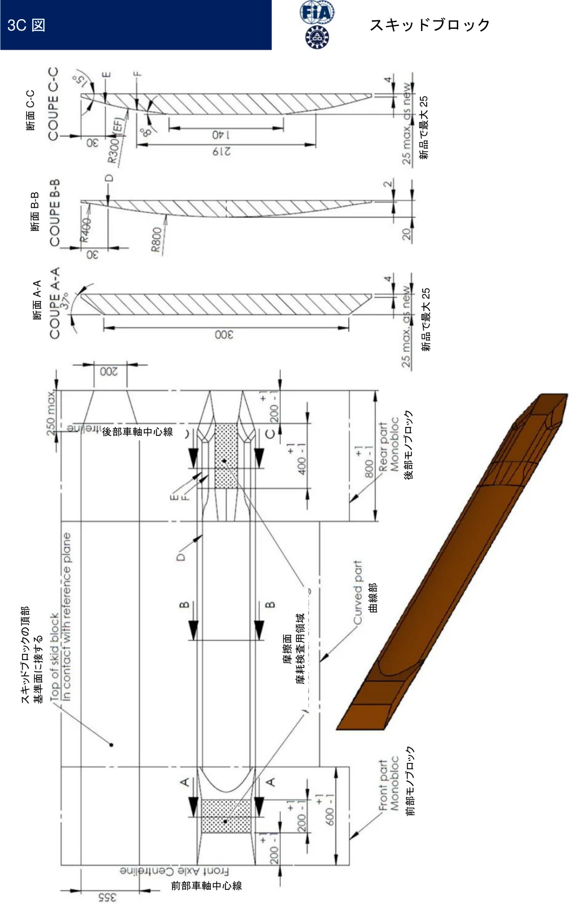
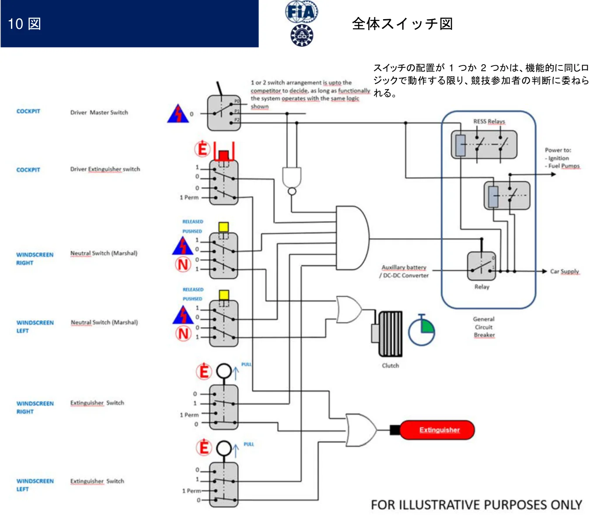
例示目的でのみ
P.9113A 図

P.9213B 図
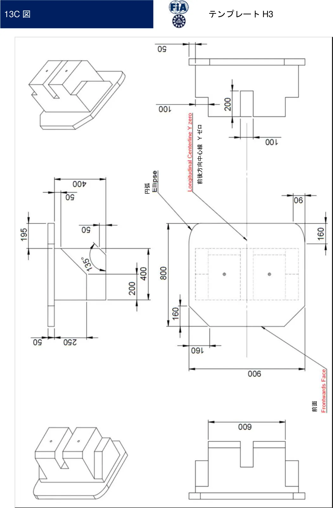
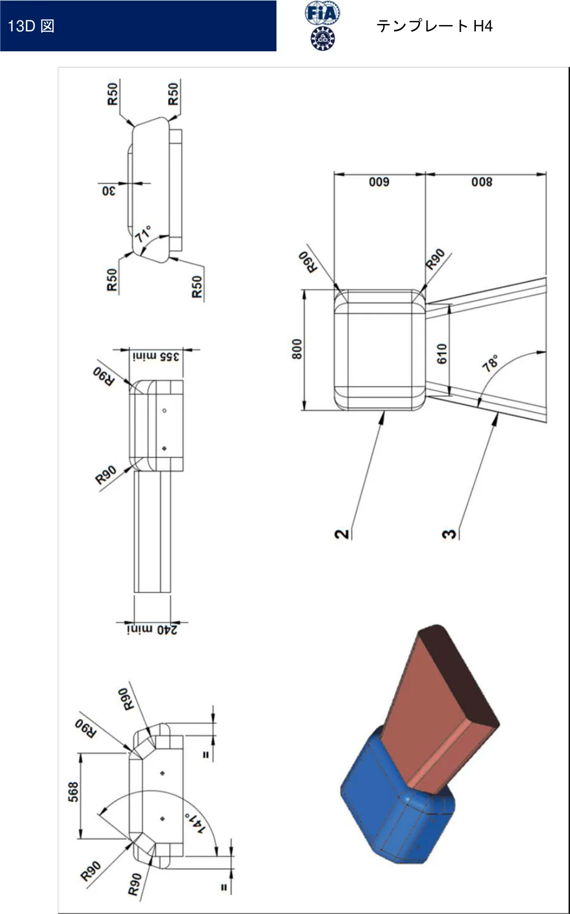
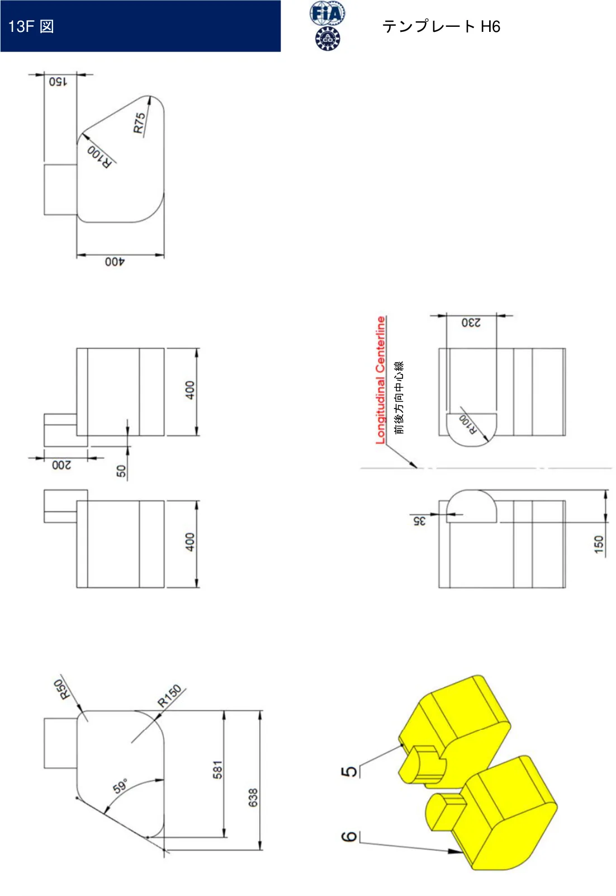
P.9713H 図
テンプレートV2
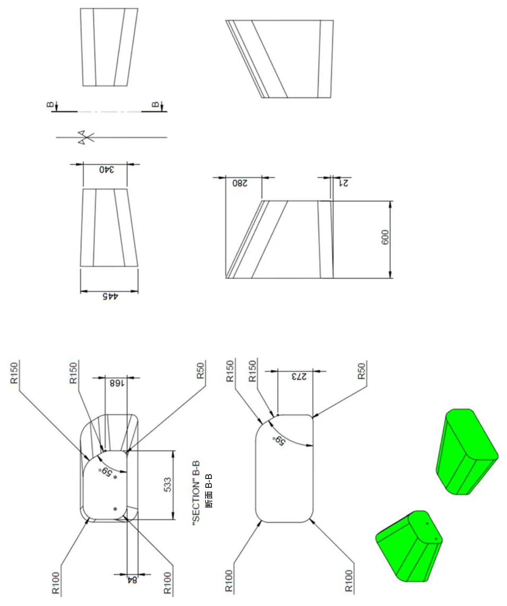
P.9813I 図
テンプレートH 組み合わせ
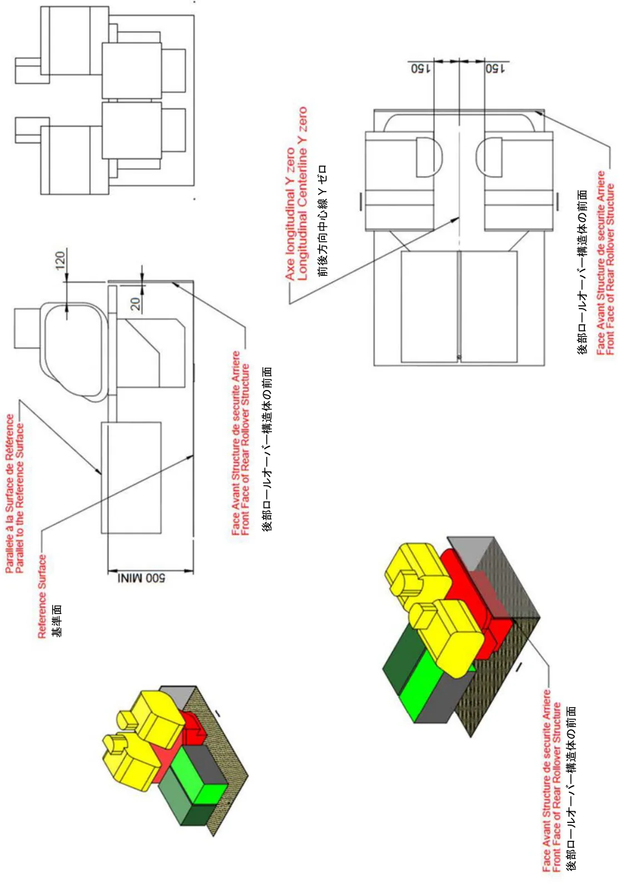
基準面に平行
P.9913J 図
テンプレートV 組み合わせ
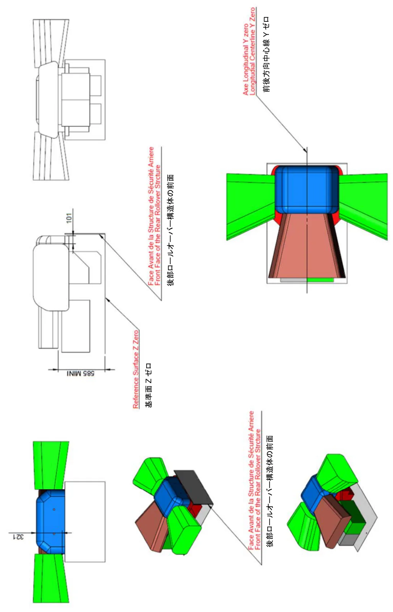
P.10014G 図
ヘッドレスト
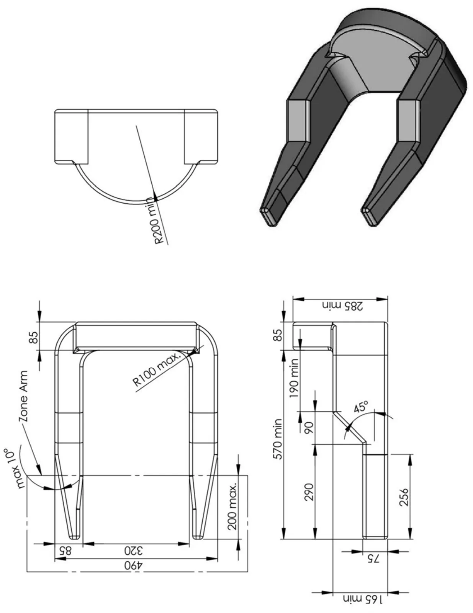
P.10114B 図
シート
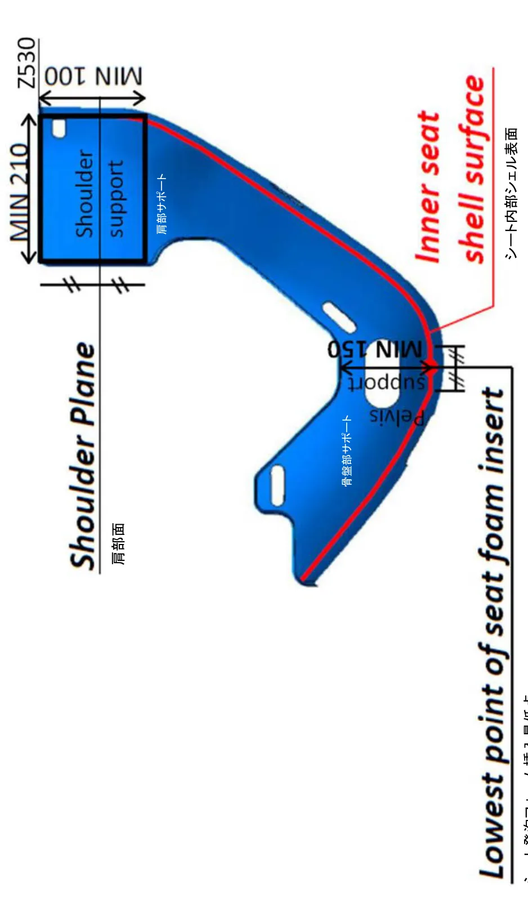
シート発泡フォーム挿入最低点
P.102付則２
パワーユニットシステム、機能および構成部品
| 項目 番号 | エンジン PU機能/システム/構成部品の一覧 | エンジン 定義 | エンジン 公認 | NAエンジン 重量 | NAエンジン CoG | SCエンジン 重量 | SCエンジン CoG | ||
| 1 | カムカバー、シリンダーヘッド、クランクケース、サンプおよび一切のギア ケース内のエンジン構成部品 | INC | INC | INC | INC | INC | INC | ||
| 2 | エンジン過給構成部品（例：ホイールを含む吸気口から排気口までのコンプ レッサー； ホイールを含む吸気口から排気口までのタービン；シャフト、ベ アリングおよびハウジング）ウエストゲート、ポップオフバルブあるいは類 似の部品を含む | INC | INC | EXC | EXC | INC | INC | ||
| 3 | エアフィルターからシリンダーヘッドまでのエンジン・エンジン空気取り入 れ装置（例：パイプ、インタークーラー、プレナム、トランペット、スロッ トル）但し、過給構成部品は除く。 | INC | INC | INC | INC | INC | INC | ||
| 4 | エンジン排気フランジから出口までのエンジン排気システム | INC | INC | INC | INC | INC | INC | ||
| 5 | エンジン取付燃料システム構成部品（例：高圧燃料ホース、燃料ホース、フ ュエルレール、燃料噴射装置、貯蔵器） | INC | INC | INC | INC | INC | INC | ||
| 6 | エンジン取付電気構成部品（例：配線ハーネス、センサー、作動装置、点火 コイル、オルタネータ、スパークプラグ） | INC | INC | INC | INC | INC | INC | ||
| (ﾊｰﾈｽ | |||||||||
| 除く) | |||||||||
| 7 | 以下のすべての関連構成部品を含む、すべてのエンジン冷却ポンプ、オイル ポンプ、スカベンジポンプ、オイル/空気分離器および高圧ポンプ（１０bar 超）：モーター、作動装置、フィルター、ブラケット、支持部、スクリュー、 ナット、合わせくぎ、ワッシャ、ケーブル、オイルあるいは空気シール。エ ンジン構成部品の間のすべてのチューブあるいはホース。油圧ポンプを除く。 | INC | INC (ﾊｰﾈｽ 除く) | INC | INC | INC | INC | ||
| 8 | エンジン主要オイルタンク、キャッチタンク、およびエンジンに連結される 一切のブリーザーシステム、および関連のフィルター、ブラケット、支持部、 スクリュー、ナット、合わせくぎ、ワッシャ、ケーブル、パイプ、ホース、 オイルあるいは空気シール。 | INC | EXC | EXC | EXC | EXC | EXC | ||
| 9 | エンジンに使用される、プログラマブル半導体を搭載した、または高出力ス イッチングデバイスを搭載したECUあるいは関連デバイス、およびそれらに 付随するブラケット、支持部、スクリュー、ナット、合わせくぎ、ワッシャ、 ケーブル。 | EXC | EXC | EXC | EXC | EXC | EXC | ||
| 10 | エンジンを常に機能させるために必要なあらゆる作動装置 | EXC | EXC | EXC | EXC | EXC | EXC | ||
| 11 | エンジンに使用されるウォーターシステム貯蔵器 | INC | EXC | INC | INC | INC | INC | ||
| 12 | エンジンに使用される、熱交換器（インタークーラーを除く）およびそれに 関連の付属品（パイプ、ホース、支持部、ブラケットおよび留め具を含むが、 それらに限らない） | INC | EXC | INC | EXC | INC | EXC | ||
| 13 | エンジンのための油圧システム（例：ポンプ、貯蔵器） | INC | EXC | INC | EXC | INC | EXC | ||
| 14 | エンジン制御のためにエンジンに使用される油圧システムサーボバルブ（含 複数）および作動装置（含複数） | EXC | EXC | EXC | EXC | EXC | EXC | ||
| 15 | 10bar未満の燃料供給ポンプとそれに関連する付属品（パイプ、ホース、支持 部、ブラケットおよび留め具を含むが、それらに限らない）。 | INC | EXC | INC | INC | INC | INC | ||
| 16 | 調整器またはコンプレッサーなどの、エンジンエアバルブシステムに関連す る一切の補助装置。 | EXC | EXC | EXC | EXC | EXC | EXC | ||
| 17 | エンジンをシャシーあるいはギアボックスに搭載するために使用するスタッ ド（エンジンに取り付けた場合） | INC | EXC | INC | EXC | INC | EXC | ||
| 18 | エンジンとギアボックスの間のフライホイール、クラッチ作動システム | INC | EXC | INC | INC | INC | INC | ||
| 19 | エンジンオイル | INC | EXC | INC | INC | INC | INC | ||
| 20 | エンジンオイル以外の、エンジンに使用される液体類 | INC | EXC | EXC | EXC | EXC | EXC | ||
| 21 | ５kgまでのエンジンに搭載されるバラスト | EXC | EXC | EXC | EXC | EXC | EXC |
| 22 | ５㎏超のエンジンに搭載されるバラスト | INC | EXC | INC | INC | INC | INC |
| 23 | 動力装置の通常の部分ではない配線用ハーネス。 | EXC | EXC | EXC | EXC | EXC | EXC |
| 24 | スターターモーター | EXC | EXC | EXC | EXC | EXC | EXC |
INC: 含まれる: これらの部品は、定義/重量/ボックス/テンプレート/ペリメーターまたはドシエに含まれなければならない。EXC:含まれない: これらの部品は、定義/重量/ボックス/テンプレート/ペリメーターまたはドシエから除外されなければならない。
| 項目 番号 | ERS PU機能/システム/構成部品の一覧 | ERS 定義 | MGU-K 定義 | ESC 定義 |
| 1 | ESセル（クランピングプレートを含む）とセル間の電気的接続 | INC | EXC | INC |
| 2 | HVヒューズ | INC | EXC | INC |
| 3 | 接地障害表示システム | INC | EXC | INC |
| 4 | プリチャージスイッチを含むメインコンタクター（電気機械式）、FIA IVT | INC | EXC | INC |
| 5 | 安全ピン（サービスプラグ） | INC | EXC | INC |
| 6 | DC HV バスバーおよびESとCUKの間の配線 | INC | EXC | INC |
| 7 | DC HV EMCスクリーニング | INC | EXC | INC |
| 8 | HV DCバスに接続されたDCDCコンバータ | INC | EXC | INC |
| 9 | BMS、セルの電圧・温度モニタリング | INC | EXC | INC |
| 10 | ERSコントローラ、K用ゲートドライブ、位相電流センサー | INC | INC | EXC |
| 11 | MGU-K 位相インバータ、大容量コンデンサ付き | INC | INC | EXC |
| 12 | 位相コネクター（ACケーブルがボックスから出ないこと） | INC | INC | EXC |
| 13 | 「キッカー」/システム起動用バッテリーの分離 | INC | EXC | INC |
| 14 | シャシーへのAVマウント（ボックスの外側） | INC | EXC | INC |
| 15 | 内部の冷却ファン | INC | EXC | INC |
| 16 | ESCエンクロージャに内蔵された冷却システム | INC | EXC | INC |
| 17 | 2kgを超えるバラスト | EXC | EXC | EXC |
| 18 | ERS制御用サーボバルブ（含複数）および作動装置（含複数）以外の、油圧 システム（ポンプ、蓄積器、マニホールド、サーボバルブ、ソレノイド、作 動装置 | EXC | EXC | EXC |
| 19 | 冷却液ポンプ | EXC | EXC | EXC |
| 20 | 冷却液のフィルターおよび制限 | EXC | EXC | EXC |
| 21 | 冷却システム蓄積器 | EXC | EXC | EXC |
| 22 | MGU-K | INC | INC | EXC |
| 23 | MGU-Kレゾルバ | INC | INC | EXC |
| 24 | MGU-Kからの機械式トランスミッション（シングルレシオ）（シャフト、ギ アボックス、デフ、バスケット、...）。 | INC | INC | EXC |
| 25 | MGU-Kからシャシーへの取り付けブラケット | INC | EXC | EXC |
| 26 | 冷却パイプ | INC | EXC | EXC |
| 27 | ESCとMGU-K間の電気的接続 | INC | EXC | EXC |
| 28 | 液体類(セルの電解質を除く) | EXC | EXC | EXC |
| 29 | ESCエンクロージャ | INC | EXC | INC |
| 30 | サバイバルセル | EXC | EXC | EXC |
INC: 含まれる: これらの部品は、定義/重量/ボックス/テンプレート/ペリメーターまたはドシエに含まれなければならない。EXC:含まれない: これらの部品は、定義/重量/ボックス/テンプレート/ペリメーターまたはドシエから除外されなければならない。
| 項目 番号 | ギヤボックス PU機能/システム/構成部品の一覧 | GBX 重量／ CoG |
| 1 | ギアボックスの内部部品、以下を含む ：リバースアッセンブリー、アウトプ ットアッセンブリー、レイシャフトアッセンブリー、ピニオンシャフトアッ センブリー、セレクションアッセンブリー、およびディファレンシャルアッ センブリー | INC |
| 2 | 外部選択アセンブリー | INC |
| 3 | ギアボックスの内部部品：潤滑システム、スカベンジシステム含む | INC |
| 4 | インプットシャフト | INC |
| 5 | ギアボックスケース | INC |
| 6 | ベルハウジング（ギアボックスからICEへの取付け点を含む | INC |
| 7 | サスペンション用クレビス（ギアボックスからクレビスへの取り付け点を含 む） | INC |
| 8 | ギアボックス取り付け電気部品（配線束、センサーなど） | EXC |
| 9 | ギアボックスとICEの間に使用されるスタッドおよび／あるいはナット | EXC |
| 10 | 液体類 | EXC |
INC: 含まれる: これらの部品は、定義/重量/ボックス/テンプレート/ペリメーターまたはドシエに含まれなければならない。EXC:含まれない: これらの部品は、定義/重量/ボックス/テンプレート/ペリメーターまたはドシエから除外されなければならない。
P.105付則３
コクピットとサバイバルセル
| 項目 番号 | サバイバルセル PU機能/システム/構成部品の一覧 | 重量／ CoG |
| 1 | コックピット、燃料タンク格納室、ES格納器、ERS格納器などの安全構造 | INC |
| 2 | すべての燃料タンクのクロージングパネルと固定具 | INC |
| 3 | すべての内蔵固定構成部品 | INC |
| 4 | すべてのERS格納器パネルと固定具 | INC |
| 5 | ドライバー脚部支持部および固定具 | INC |
| 6 | ESクロージングパネル | INC |
| 7 | サバイバルセルに搭載された5kgまでのバラスト | INC |
| 8 | サバイバルセルに搭載された5kg超のバラスト | EXC |
| 9 | すべての取り外し可能な固定構成部品（クラッシュボックス、エンジン、サ イドポッドなど） | EXC |
| 10 | ウインドスクリーンおよびドア | EXC |
| 11 | すべてのサバイバルセルの機械的内部構成部品（サスペンション関連部品、 ステアリング関連部品、ペダルとその取り付け部、座席、ヘッドレスト、バ ッテリー、電気関連部品...）。 | EXC |
INC: 含まれる: これらの部品は、定義/重量/ボックス/テンプレート/ペリメーターまたはドシエに含まれなければならない。EXC:含まれない: これらの部品は、定義/重量/ボックス/テンプレート/ペリメーターまたはドシエから除外されなければならない。
P.106付則４
パワーユニットエネルギーフロー
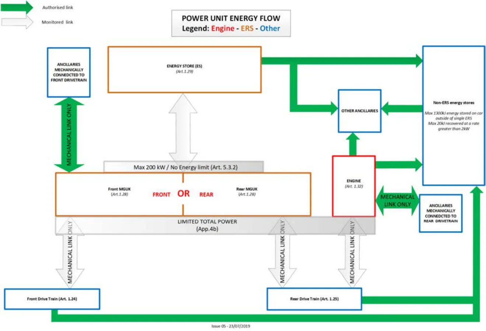
＜図中上より＞許されるリンク監視されるリンク凡例： エンジン ERS その他前部ドライブトレインに機械的に接続された付属品エネルギー貯蔵その他の付属品非ERSエネルギー貯蔵最大エネルギー１３００ｋｊが単一ERSの外側で車両に貯蔵される最大20kjを2kw以上の割合で回収機械的連結のみ最大２００ｋｗ／エネルギー制限無し エンジン 機械的連結のみ後部ドライブトレインに機械的に接続された付属品フロントＭＧＵＫ フロント あるいは リア リアＭＧＵＫ制限された総パワー機械的連結のみ 機械的連結のみ 機械的連結のみ前部ドライブトレイン 後部ドライブトレイン
P.107付則４ｂ
パワーユニットエネルギーフロー
最大パワートレインパワー車両は、次のような最大総パワーカーブ（ドライブシャフト・トルク・センサーで測定された４輪のパワーの合計）を目標に設計されなければならず、ＢｏＰの理由から調整される低マージンと高マージンは次のようになる：
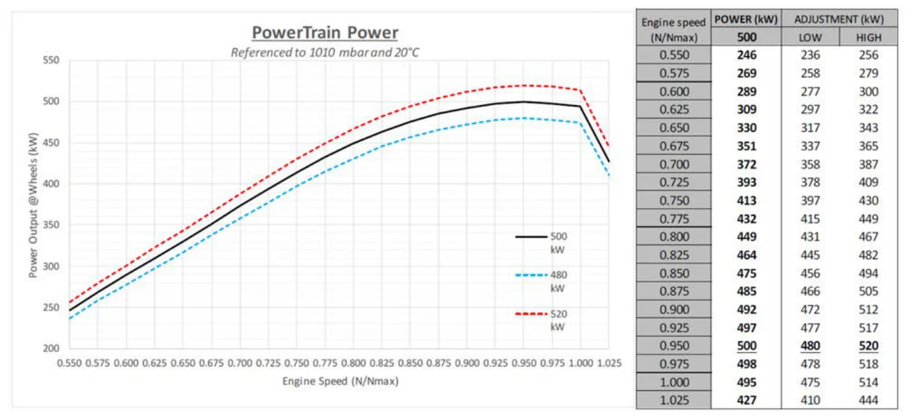
詳細： ＰＵの性能をベンチで確認し、公認を取ることができる。それには以下が含まれる： －パワー対回転数。０．５５ｘＮｍａｘ以下のパワーは２４６ｋＷよりも低いことが予想される。－最大回転数。最大出力は参考条件での値である：１０１０ｍｂａｒ、２０°Ｃ、相対湿度０％周囲の条件によって自然に性能が低下する場合は、競技中にテクニカルデリゲートの裁量で、以下の補正係数を用いて最大出力曲線を周囲の条件に合わせて補正されることがある。
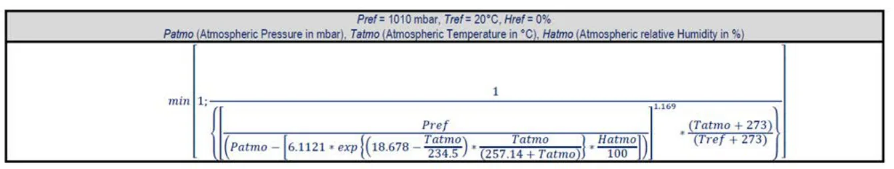
以下の場合: Pref = 1010mbar、Pvap_ref = 12mbar (大気相対湿度 50%)、Tref = 20°C。パワーユニットの使用は、総パワーがＢｏＰによって割り当てられた最大パワー制限以下である限り、自由（設定、モード）。
P.108付則５
貫入パネルの仕様
ＬＭＨ、ＬＭＰ１およびＬＭＰ２の
追加パネルの仕様
2021年2月10日1.2版概要本パネルは、高温硬化強化エポキシ樹脂組成物を浸透させたTorayca T1000G（あるいはT1100GまたはT1100S）およびToyobo高弾性率ザイロン（PBO)繊維で製作されること。T1000G（あるいはT1100GまたはT1100S）およびザイロン強化層にその他の樹脂が使用される場合は、それらは一体硬化成形が可能でなければならない。パネルの構成は擬似等方性とし、複雑な形態、配線のための切り抜きおよび側方衝撃吸収構造体配線と側方衝撃吸収構造体の切抜き部を覆うために必要なものを除き、一切の層の中にダーツ、継ぎ目あるいは隙間を作らないこと。外側のボディワークを取り付けるために、４層のザイロン外皮にのみリベートが認められる。限定された材質の１巻幅に応じるため、±４５°の各層に必要とされる一切の継ぎ目は、最低１０ｍｍの重なりをもたせ、多重焼付け（スーパーインポーズ）を避けるために、ラミネートを通じて互い違いにすること。パネルは製造者の推奨硬化サイクルに硬化されなければならない。パネルがサバイバルセルに統合（積層）されない場合、パネルは規定のフィルムあるいは粘着ペーストで、シャシーの全体の表面域に接着される。ザイロンHM-300gsm最小平均重量[285]gsm、６K繊維／引張、エポキシ樹脂に浸透させた、２×２綾織スタイル。T1000GあるいはT1100GまたはT1100S -280gsm最小平均重量[269]gsm、12K繊維／引張、エポキシ樹脂に浸透させた２×２綾織あるいは5本ハーネスの朱子織。マトリックスシステムMTM49-3あるいはCycom2020エポキシ樹脂。または以下に一覧される適合材質。粘着性（シャシーについて）フィルム粘着性150gsm３M AF163-2 あるいはペースト粘着性３M 9323 B/A、または粘着性３M DP460。積層順序（０度はシャシーの前後方向軸となる）外側表面T1000GあるいはT1100GまたはT1100S１層（0/90）ザイロン７層（±45、0/90、±45、0/90、±45、0/90、±45）T1000GあるいはT1100GまたはT1100S１層（0/90）内側表面肉厚粘着部を除いた硬化パネルの最低肉厚は、[3.0]mmであること。エリア重量粘着部を除いた硬化パネルの最低エリア重量は、[4300]gmsであること。空隙パネルは空隙がないことが必須である。
P.109適合材質例１. Cytec提供
ザイロンHM-300gsm/Cycom2020エポキシ樹脂2×2綾織（重量でNOM42％）T1000G-12k 280gsm/ Cycom2020エポキシ樹脂を伴う2×2綾織あるいは5本ハーネス織（重量でNOM42％）２. ACG提供ザイロンHM-300gsm/MTM49-3エポキシ樹脂を伴う2×2綾織（重量でNOM43％）T1000G-12k 280gsm/ MTM49-3エポキシ樹脂を伴う2×2綾織あるいは5本ハーネス織（重量でNOM40％）３．TenCate提供ザイロンHM-300gsm/E750-02エポキシ樹脂を伴う2×2綾織（重量でNOM42％）T1000G-12k 280gsm/ E750-02エポキシ樹脂を伴う2×2綾織あるいは5本ハーネス織（重量でNOM42％）３．Delta Tech S.p.a提供
ザイロンHM-300gsm/DT195Nエポキシ樹脂を伴う2×2綾織（重量でNOM42％）T1000G-12k 280gsm/DT195Nエポキシ樹脂を伴う2×2綾織あるいは5本ハーネス織（重量でNOM42％）
P.110付則６
適用無し
P.111付則７
給油1/定義：給油リグ：トロリー、補給タンク、ガントリー、エアインストレーションを含む、ピットストップリグ一式のアセンブリー。補給タンク：作業エリアでの給油に使用される貯蔵タンク。フューエルバウザー（燃料補給機）：最大容量120リットルの移動式給油ユニットで、車両と補給タンクに給油/排出を行う。ガントリー：エアホース、ロータリーアーム、識別板を備えるピットレーンブーム。2/競技全期間中を通じ：燃料補給は、それが行われる本コースから最大２.２０ｍの高さ（ル・マン２４時間では２.６０ｍ）から重力によって行われる以外、車両にいかなる方法で給油することも禁止される。走行セッション中を除き、車両がガレージ内にある場合に限り、燃料バウザー（第９条に記載）を使用して車両に直接燃料を補給することが許可される。3/燃料タンク：車両１台につき、下記の７.Ａ図に従った１つの補給タンクのみが使用されなければならない。このタンクは平底の内側が単純な円筒形の形状でなければならず（二重層になった底部の使用は禁止される）、燃料の流れを向上させる可能性のあるいかなる内部部品もあってはならない。補給タンクの出口には，燃料流量リストリクターを使用しなければならない。リストリクターの直径は、耐久コミッティが決定した給油時間および／またはスティントあたりのエネルギーに応じて選択されなければならない。安全上の理由から、このタンクは、タワーにより以下の要領で台車に固定されなければならない：
－ すべてのタワー構成部品は、トロリーに対して一切の遊びがない状態で機械的に組み立てられていなければならない。－ 台車の底面は少なくとも２ｍ2の表面域がなければならず、４個の自動ブレーキ式のキャスターを備えたケースにより製作されていなければならない。また燃料を満たした燃料タンクよりも重いバラストを積まなければならない。－ 台車のピットレーンに面する部分で高さ１.３ｍより下には、一切の配管（燃料用あるいはエアガンなど）が突き出していてはならない。上記の要領に則っていれば、タンクの下に計量プレートを置くことにより、燃料の計量システムを設置してもよい。補給タンクの頂部にＦＩＡ規定に合致した換気装置（下記付則７.Ａ図を参照）がなけ
P.112ればならない。補給タンクの換気は、このシステムによってのみ行われること。その他すべての開口部は密封して塞がれなければならない。換気パイプの長さはＡＣＯ／ＦＩＡにより要請され承認された場合のみ適合させることができる。視認窓が補給タンクの外側に付けられている場合、それはタンクにできるだけ近い位置に取り付けられた隔離バルブ付きでなければならない。給油装置は直射日光から保護できるが、その保護が査察の妨害となったり、機器のメンテナンスの妨げとならないことを条件とする。燃料を温めるあるいは冷却する効果のある一切の装置あるいはシステムは禁止される。次の条件下で、給油ホースと通気ホースを支えるためのガントリーが台車に取り付けられてもよい。－ 当該部材はタンクおよびタワーの両方から独立していなければならない。－ 当該部材は台車に対して遊びがあることが推奨される。（垂直方向の軸を中心に回転）－ 当該部材の全長は４.００ｍを超えてはならず、その付属品も含め、その全長にわたり、２.００ｍの高さの物が自由に通過できる空間がなければならない。－ 当該部材の端には、競技車両のレースナンバーを明記した識別プレートを取り付
けなければならない。補給タンクは、競技参加者がそのピットで正式に指名された車両に給油するためにのみ使用することができる。4/燃料補給および換気ホースパイプ燃料補給ホースは少なくとも３.００ｍから５.００ｍの長さがなければならず（ル・マン２４時間では４.００ｍから６.５ｍ）、それにはクイックカップリングとオス型給油バルブが含まれていること。パイプは車両に取り付けられた給油口に合致する漏出防止のカップリングが備えられていなければならない。（ＦＩＡ－付則Ｊ項第２５２条-第２５２-５図（バージョンＢ）のみ）。換気ホースは下記第７.Ａ図に従い、独立した補給タンクの側面に連結されなければならない。5/電気的アース接地燃料補給（あるいは排出）を始める前に、車両のコネクターおよび給油（あるいは排出）装置は、電気的に地面にアースされていなければならない。また、カップリングから燃料補給タンクとその支持架に至る燃料補給システムのすべての金属部品も、電気的に地面にアースされていなければならない。6/デッドマンバルブ給油要員は、燃料補給手順進行中は常に、補給タンクの出口の自動閉鎖ボールバルブ（デッドマン機構の原理）の操作および流量制御ができるように、立ち会ってい
P.113なければならない。7/使用されるすべてのホースと継ぎ手は最大内径１.５１インチ（３８.４mm）を有していること。規定される剛性部および／またはホース内に部品を追加することはできない。8/オーバーフローボトルの使用は、ピット内あるいはピット周囲にて、いかなるものも禁止される。供給業者からの燃料を貯蔵するための一切の容器には、自動閉鎖カップリングの取り付けが必要である。9/燃料バウザー最大容量120リットルの１つの燃料バウザーが、ピット内で車両のタンク内の燃料を一時的に移送するため、また供給ドラム内、独立したタンクへの移送および充填時のポンプ汲み上げを確実にするために、使用されなければならない。ル・マン２４時間レースでは、補給用タンクへの充填装置は主催者が用意する。この臨時タンクの作動は、圧力式押しボタン（デッドマン原理）で行われなければならない。使用中は必ずアースに接続されなければならない。それは完全に密封され、逆流防止バルブのついたブリーザーパイプを有し、一切の液漏れのないよう設計されていなければならない。臨時燃料タンク、車両のタンク、供給ドラムおよび独立したタンクをつなげる配管は、車両に取り付けられる燃料配管の要件を満たしていなければならない。臨時タンクは排出ホースに収容されている燃料の回収ができるように、車両と同じカップリングが取り付けられていなければならない。しかしながら、臨時タンクにカプラー（連結器）が全くない場合には、競技規則第Ａ７条８項４に記載されているレセプタクル（貯蔵容器）を使用することが認められる。10/ 燃料流量計測ＦＩＡテクニカルリスト４６に記載されている公認燃料流量計の使用が義務付けられる。この流量計は、ＦＩＡテクニカルリスト４４に従い、認定機関による較正を受けなければならない。燃料流量計は、供給タンクの出口とデッドマンバルブの間に設置しなければならない。車両リザーバータンクへの燃料供給に使用される全燃料流量が、燃料流量計を通過しなければならない。
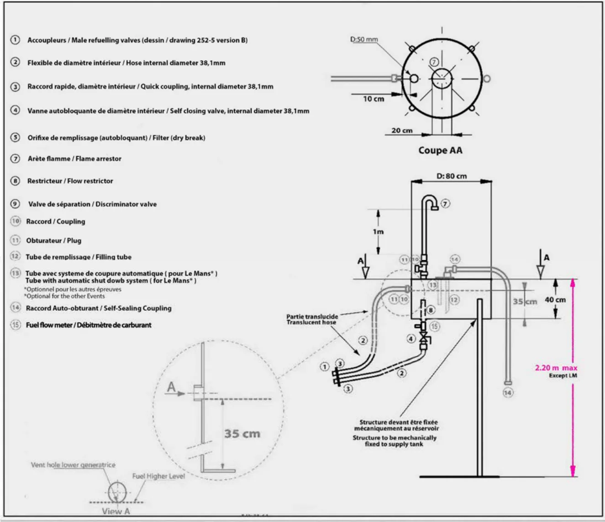
第７.Ａ図